簡介
霸那控制器 (Botnana Control) 是一款工業以太網 EtherCAT 控制器的快速開發以及學習環境。 目標是幫使用者快速開發以工業以太網 EtherCAT 為基礎的自動控制以及工業物聯網應用。
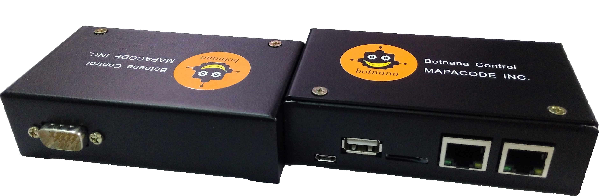
應用領域
霸那控制器軟體適合以下應用
- 資料收集：做為 Remote Control Unit (RTU) 使用。
- 資料分析：透過內建類似試算表的工具及 Javascript，分析收集到的資料。
- 軸控：可透過 EtherCAT 控制 1-32 軸以上的馬達。目前已支援台達電、Panasonic、Sanyo Denki 以及 Yaskawa 的 EtherCAT 馬達驅動器，以及台達電的脈波產生器。 未來將支援 Coply 的 EtherCAT 驅動器。
- 類 PLC 控制：可透過 EtherCAT IO 模組進行類似 PLC 的控制，目前支援台達電及 Beckhoff 的 IO 模組。
- IIoT：透過內建的 Websocket 或 MTConnect 伺服器，和客戶的雲端服務或 HMI 整合。
- CNC 控制器。
文件網址：
Botnana Book: https://botnana.github.io/botnana-book/
Botnana Book PDF 檔案連結: https://drive.google.com/file/d/17MOBkEqNVOuN4Zg8fdbMBsCs7Ws-be-H/view?usp=sharing
rtForth: https://mapacode.github.io/rtforth/
rtForth PDF 檔案連結: https://drive.google.com/file/d/1DtmB3rDQxERpZAV0gcrQtP_0uRcDQTwc/view?usp=sharing
API 函式庫: https://github.com/botnana/botnana-apis
硬體規格
Botnana Control 支援以下幾種硬體：
Botnana BN-A2A
霸那控制器 (Botnana Control) 支援霸那 BN-A2A/BN-B2A。
霸那 BN-A2A/BN-B2A 規格如下：
- AM3357 800MHz ARM Cortex A8
- 512MB DDR3L@400MHz RAM
- 4GB 8-bit eMMC on-board flash storage
- 1x microSD
- NEON floating-point accelerator
- 1x micro USB 2.0 client (USB0) for power and communication
- 1x USB 2.0 host (USB1), TYPE A socket
- 2x Ethernet 10/100MHz
- Power Consumption: 3.6W
- BN-A2A Dimension: 100.2 x 56.2 x 15 mm
- BN-B2A Dimension: 105.0 x 60.0 x 31.2 mm
BN-A2A
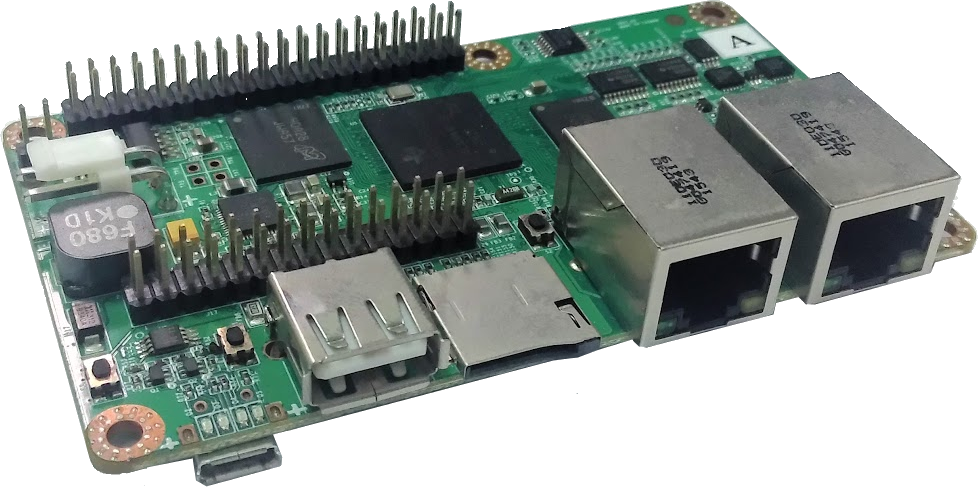
BN-B2A
Botnana BN-J4A
霸那控制器 (Botnana Control) 支援 x86 電腦。

x86 電腦規格如下：
- Dimension :
- 134x126x38mm
- Onboard CPU :
- Intel Celeron Processor J1900 |
- Front-Panel Connectors:
- Power on/off
- Power LED
- 2 x USB 2.0 Ports
- 1 x VGA Port
- WiFi
- Back-Panel Connectors
- 1 × DV 12V input
- Power LED, HDD LED
- LAN1 (EtherCAT)
- LAN2 (Reserved for EtherCAT)
- LAN3 (Reserved for Ethernet)
- LAN4 (Ethernet) (ip: 192.168.7.2)
軟體規格
霸那控制器出廠時預裝了 Linux 以及實時作業系統，以及動程科技自行開發的 Botnana Control，針對 EtherCAT 開發的多軸控制軟體。
軸控軟體
所有等級的 Botnana Control 都支援以下規格：
- 可控制至 16 台 EtherCAT 從站。
- 支援 Panasonic、Delta、Sanyo Denki 和 Yaskawa 的 EtherCAT 馬達驅動器。基本上有符合 CiA 402 規範的馬達驅動器都有支援。
- 支援 Beckhoff，Delta 的類比及數位輸出入模組。因應客戶需求陸續整合其他廠牌的 EtherCAT 模組。
基本功能
- Real-time extenstion (Xenomai)
- 系統掃描與設定軟體，自動偵測 EtherCAT 從站。
- 支援 EtherCAT 馬達驅動器 HM, PP, CSP, PV, CSV, TQ 與 CST 模式。
- 監控軟體。支援 EtherCAT 馬達驅動器與 IO 模組。
- 可進行二與三軸同動及直線圓弧補間。補間支援具 CSP 模式的馬達驅動器。
- 多軸組功能。
- 即時腳本 （rtForth）。
開發中與未來加值的功能
- Modbus TCP。
- 四至六軸補間。
- 工件程式解譯器。
- CNC 人機界面。
Roadmap
- 2017/02/01 Botnana Control P2P (level 1)
- 2017/11/01 Botnana Control Profiling (level 2)
- 2018/01/01 Botnana CNC (level 3)
入門教學 (Tutorial)
系統概念
+---------------+------------+ +-----------+
| User Program | Botnana | | |
| | API | | |
| Main thread |------------| JSON 1ms | |
| | Tx |-------------->| |
| call -----> Thread | | Websocket |
| |------------| tag|value | Server |
| | Rx |<--------------| |
| callback <----- Thread | | |
| |------------| 100ms | |
| | Poll |-------------->| |
| | Thread | | | |
|---------------+------------| |---------|-|
| Device management software | | Config. v |
| on Browser | | File |
| | | |
| Learning | Webapp |-----------|
| Testing |<--------------| HTTP |
| Configuration | | Server |
| Software update | | |
|----------------------------| |-----------|
| Windows/Linux | | Linux |
+----------------------------+ +-----------+
以上架構圖左方為此軸控／IIoT 平台的客戶端，分三個部份，
- 應用程式：應用程式可能是一台半導體設備或一個產線的控制系統。此一控制系統有自己的線程。
- Botnana API：是用動程科技提供的應用程式界面。又由三個線程構成。
- 瀏覽器上的 Webapp。此一 Webapp 是右方軸控平台的 HTTP 伺服器產生。提供以下四種裝置管理服務：學習、測試、建構與軟體更新。
Botnana 控制平台
+-------------+------------------+-----------------------+
| | | Background task (NC) |
| | +-----------------------+
| | | Background task (PLC) |
| | Real-time script +-----------------------+
| Web socket |<---------------->| Foreground task 2 |
| Server | Real-time script +-----------------------+
| |<---------------->| Foreground task 1 |
| | +-----------------------+
| | | Control Task |
| | +-----------------------+
| | Realtime script VM (4MB Data + 4MB Code) |
+-------------+---------+------------+-------------------+
| Config. | | Axis Group | Kinematics |
| File | +------------+-------------------+
| | | Look ahead | Interpolations |
| | +------------+-------------------+
| | Control | I/O | SFC Engine |
+-------------+---------+------------+-----+-------------+
| HTTP | Hardware abstraction/detection layer |
| Server | |
+-------------+------------------------------------------+
| Linux | Real-time kernel |
+-------------+------------------------------------------+
Non-real-time Real-time
動程於 2015 開始投入此一平台的開發，從最底層的工業以太網路 (EtherCAT) 的硬體抽象層開始做起，上圖為到 2018 年十月已完成的架構。
此一架構分成兩大部份，左方為非實時的部份，在 Linux 作業系統下執行，具有兩個伺服器：HTTP 伺服器和 Websocket 伺服器，以及此一系統的各種建構檔案。
右端為實時的部份，在實時系統上建置了一層硬體抽象層。此一硬體抽象層支援各家的 EtherCAT 從站。以硬體抽象層為基礎，其上為軸控的引擎。又包括了軸組、運動學、路徑預視、補間功能、順序流程圖的執行引擎。
在軸控引擎之上是執行實時腳本語言 rtForth 的虚擬機，具直譯／編譯功能。虚擬機內建 4MB 的資料空間及 4MB 的程式碼空間，能儲存數十萬指令的 rtForth 程式。並以合作式多工的方式實作了五個工作：
- Control 工作：執行以控制下軸控引擎。
- 前景工作一和二：透過其左方非實時部份的 Websocket 伺服器，接受最多兩個客戶端應用程式的指令。
- PLC 工作：使用底下軸控引擎中順序流程圖引擎 (SFC Engine) 來執行可程式邏輯控制程式。
- NC 工作：使用底下軸控引擎中的各種功能執行複雜的運動及加工行為。虚擬機內建的空間使其能儲存相當於十萬行 CNC 工件程式的實時腳本。這些實時腳本可由是客戶端程式從工作程式轉譯得到，或是由客戶端直接以 C# 或其他語言規畫產生。
Botnana A2 入門
登入
使用 micro USB 連結到電腦的 USB port，再以 ssh 登入，
ssh debian@192.168.7.2
密碼為 temppwd
如果有必要切換使用者為 root，可執行
sudo su
Botnana Control 入門
Botnana A2 預設於開機時自動啟動動程科技的 Botnana Control P2P 軸控軟體。此一軸控軟體安裝於 /opt/mapacode/botnana-control。
因此，使用瀏覽器連上 http://192.168.7.2:3000 。可見到以下畫面。

如果 Botnana A2 上未安裝 Botnana Control P2P，可以以下列方式安裝：
dpkg -i botnana-control_0.0.1-1_armhf.deb
解安裝請執行
dpkg -r botnana-control
若要用 etherCAT Master RTDM ，且不用 Botnana Control P2P 軸控軟體，則需自行設定如下︰
1. 執行 dpkg -r botnana-control
2. 於檔案 /etc/rc.local 中，確認有如下的註解行(3.14.26 會因 kernel 版本而異)
#insmod /lib/modules/3.14.26/kernel/drivers/net/ethernet/ti/ti_cpsw.ko
3. 執行 insserv ethercat
Configuration
請參考 設定檔 章節，若無必要，請勿手動修改設定檔。
設定檔
Botnana Control Motion Server 的設定檔位於 /opt/mapacode/botnana-control/config/motion.toml 。
設定檔使用 Toml 格式。說明如下。
File section
- spec_version 欄位：列出使用的設定檔格式的版本，本文件目前的版本是 0.0.1。
Slave section
可以有多個 slaves，因此使用 [[slave]]。每個 slave 有以下欄位。
- position: slave 的位置。
- vendor_id
- product_code
- homing_method
- home_offset
- homing_speed_1
- homing_speed_2
- homing_acceleration
- profile_velocity
- profile_acceleration
- profile_deceleration
Example of a motion.toml
[file]
spec_version = "0.0.1"
[[slave]]
position = 1
vendor_id = 6661
product_code = 22049
homing_method = 33
home_offset = 0
homing_speed_1 = 50
homing_speed_2 = 5
homing_acceleration = 8
profile_velocity = 8000
profile_acceleration = 9000
profile_deceleration = 9000
程式開發界面
Botnana Control 內建伺服器。伺服器提供以下程式開發界面：
- JSON API：程式可以使用 JSON 格式和 Botnana Control 溝通。適用於各種 支援 JSON 及 Websocket 的語言，如 Java、C#、C++、Python、Ruby 等。
- Javascript API 提供 Javascript 程式和 Botnana Control 溝通的界面。
JSON API
Botnana Control 的 JSON API 採用 JSON-RPC 2.0 。
程式可以使用 JSON 格式和 Botnana Control 溝通。此一方法適用於各種支援 JSON 格式且具有 Websocket 函式庫的語言，例如：
- Java
- C#
- C++
- Python
- Ruby
- Go
回傳資料格式
Botnana Control 若回傳資料，格式一律為
tag1|value1|tag2|value2...
注意回傳格式不是 JSON 格式。
Version API
程式可以使用 Version API 取得 Botnana Control 的版本。
{
"jsonrpc": "2.0",
"method": "version.get"
}
會回傳以下字串：
version|1.0.0
Configuration API
程式可以使用 Configuration API 來處理參數設定檔。參數檔的設定，在重開機或重新讀取參數檔後生效。
修改設定參數
修改設定參數並不會立刻將設定值儲存至參數設定檔，也不會影響到各裝置目前使用的參數。
EtherCAT Position 與 Alias 說明：
EtherCAT Position: 依據 EtherCAT 網路佈局，最靠近主站的 Position 為 1, 依序遞增。
EtherCAT Alias: 每一個 EtherCAT 從站都可以設定一個站號的別名。一般設定此別名的方法有兩種：
- EtherCAT 從站內的 EEPROM，
- EtherCAT 從站的硬體旋鈕。
在設定參數時,如果 alias 不為 0，就會以 alias 選擇從站。當 alias 為 0，就以 position 選擇從站。
設定 EtherCAT Slave 參數 config.slave.set
方法：
"method": "config.slave.set"
必要參數：
"alias": Slave Alis。
"position": Slave Position。
"channel": Device Channel，從 1 開始計數。
可設定參數：可以單獨設定一個或是多個
"homing_method" : Homing method ,參考驅動器 0x6098:0x00 的描述。
"homing_speed_1" : Speed during search for switch ,參考驅動器 0x6099:0x01 的描述。
"homing_speed_2" : Speed during search for zero。參照選用驅動器 0x6099:0x02 的描述。
"homing_acceleration": Homing acceleration。參照選用驅動器 0x609A:0x00 的描述。
"profile_velocity": Profile velocity。參照選用驅動器 0x6081:0x00 的描述。
"profile_acceleration": Profile acceleration。參照選用驅動器 0x6083:0x00 的描述。
"profile_deceleration": Profile deceleration。參照選用驅動器 0x6084:0x00 的描述。
"baud_rate": UART baud rate。參照 Beckhoff EL600x 或是 EL602X 0x8000:0x11 的描述。
"data_frame": UART data frame。參照 Beckhoff EL600x 或是 EL602X 0x8000:0x15 的描述。
"half_duplex": Uart Half Duplex Transmission。參照 Beckhoff EL600x 或是 EL602X 0x8000:0x06 的描述。
"uart_p2p": UART point to point。參照 Beckhoff EL600x 或是 EL602X 0x8000:0x07 的描述。
"tx_optimization": UART Tx optimization。參照 Beckhoff EL600x 或是 EL602X 0x8000:0x07 的描述。
範例 1：修改 slave 1 channel 1 驅動器的回歸原點方法。
{
"jsonrpc": "2.0",
"method": "config.slave.set",
"params": {
"alias": 0,
"position": 1,
"channel": 1,
"homing_method" : 33,
}
}
範例 2：修改 slave 2 channel 3 驅動器的回歸原點的速度與加速度。
{
"jsonrpc": "2.0",
"method": "config.slave.set",
"params": {
"alias": 0,
"position": 2,
"channel": 3,
"homing_speed_1" : 10000,
"homing_speed_2" : 100,
"homing_acceleration": 5000,
}
}
設定運動控制參數 config.motion.set
方法：
"method": "config.motion.set"
必要參數：
None
可設定參數：可以單獨設定一個或是多個
"period_us": 執行周期 [us]
"group_capacity": 軸組數
"axis_capacity": 軸數
範例：
{
"jsonrpc": "2.0",
"method": "config.motion.set",
"params": {
"period_us": 2000,
"group_capacity": 5,
"axis_capacity": 5
}
}
設定軸組參數 config.group.set
方法：
"method": "config.group.set"
必要參數：
"position": 指定軸組，從 1 開始計數。
可設定參數：可以單獨設定一個或是多個
"name": 軸組名稱
"gtype": 軸組型態，可以設定 "1D","2D","3D","SINE"
"mapping": 指定對應的運動軸，例如 [1, 2] 或是 [2, 1, 3]
"vmax": 最大速度 [m/s],[rad/s],[pulse/s]
"amax": 最大加速度 [m/s^2],[rad/s^2],[pulse/s^2]
"jmax": 最大加加速度 [m/s^3],[rad/s^3],[pulse/s^3]
範例： 設定 Group 1 的參數
{
"jsonrpc": "2.0",
"method": "config.group.set",
"params": {
"position": 1,
"name": "BotnanaGo",
"gtype": "2D",
"mapping": [1, 2],
"vmax": 0.5,
"amax": 5.0,
"jmax": 80.0,
}
}
設定運動軸參數 config.axis.set
方法：
"method": "config.axis.set"
必要參數：
"position": 指定運動軸，從 1 開始計數。
可設定參數：可以單獨設定一個或是多個
"name": 運動軸名稱,
"home_offset": Home offset,
"encoder_ppu": encoder pulses per unit [pulses]
"encoder_length_unit": encoder length unit [m],[rev],[pulse]
"encoder_direction": encode direction, 1 or -1
"vmax": 最大速度 [m/s],[rad/s],[pulse/s]
"amax": 最大加速度 [m/s^2],[rad/s^2],[pulse/s^2]
"slave_position": 對應驅動器的 EtherCAT 從站位置。
"drive_channel": 對應驅動器上的第幾個 Channel。一般設定為 1,如果是東方馬達AZ系列多軸驅動器，就有可能是 2~3 。
範例：
{
"jsonrpc": "2.0",
"method": "config.axis.set",
"params": {
"position": 1,
"name": "X",
"home_offset": 0.05,
"encoder_ppu": 2000000.0,
"encoder_length_unit":"Meter",
"encoder_direction": 1,
}
}
取得設定參數
取得 EtherCAT slave 參數 config.slave.get
方法：
"method": "config.slave.get"
必要參數：
"alias": Slave Alias。
"position": Slave Position。
"channel": Device Channel，從 1 開始計數。
範例：
{
"jsonrpc": "2.0",
"method": "config.slave.get",
"params": {
"alias": 0,
"position": 1,
"channel": 1,
}
}
回傳封包
config_slave_alias.1|0
|config_homing_method.1.1|33
|config_homing_speed_1.1.1|1000
|config_homing_speed_2.1.1|250
|config_homing_acceleration.1.1|500
|config_profile_velocity.1.1|1000000
|config_profile_acceleration.1.1|50000
|config_profile_deceleration.1.1|50000
|config_baud_rate.1.1|6
|config_data_frame.1.1|3
|config_half_duplex.1.1|1
|config_uart_p2p.1.1|0
|config_tx_optimization.1.1|1
取得運動參數 config.motion.get
方法：
"method": "config.motion.get"
必要參數：
None
範例： 取得 motion 設定
{
"jsonrpc": "2.0",
"method": "config.motion.get",
}
回傳封包:
config_period_us|2000
|config_group_capacity|7
|config_axis_capacity|10
取得軸組參數 config.group.get
方法：
"method": "config.motion.get"
必要參數：
"position": 指定軸組，從 1 開始計數。
範例： 取得 Group 1 設定
{
"jsonrpc": "2.0",
"method": "config.group.get",
"params": {
"position": 1,
}
}
回傳封包
config_group_name.1|BotnanaGo
|config_group_type.1|2D
|config_group_mapping.1|2,3
|config_group_vmax.1|0.200
|config_group_amax.1|5.000
|config_group_jmax.1|40.000
取得軸組參數 config.axis.get
方法：
"method": "config.axis.get"
必要參數：
"position": 指定運動軸，從 1 開始計數。
範例： 取得 Axis 1
{
"jsonrpc": "2.0",
"method": "config.axis.get",
"params": {
"position": 1,
}
}
回傳封包
config_axis_name.1|Anonymous
|config_axis_home_offset.1|0.0000
|config_encoder_ppu.1|1000000.00000
|config_encoder_length_unit.1|Meter
|config_encoder_direction.1|1
|config_slave_position.1|2
|config_drive_channel.1|2
儲存設定參數
儲存設定參數會立刻將設定值儲存至參數設定檔，但不會影響到各裝置目前使用的參數。
關機再開後系統會使用新的設定。
範例：要求儲存 configuration：
{
"jsonrpc": "2.0",
"method": "config.save"
}
取得 Pitch 補正表內容
方法：
"method": "corrector.pitch.get"
必要參數：
"name": 補正表檔案名稱。檔案名稱格式為 PXXXX-YY.sdx，XXXX 表示 EtherCAT Slave Position 的位置（16 進位表示），YY 表示該 EtherCAT Slave 上的第幾個驅動器（16 進位表示）。
範例：取得 EtherCAT Slave Position 1 Drive Channel 1 的補正表
{
"jsonrpc": "2.0",
"method": "corrector.pitch.get",
"params": {
"name": "P0001-01.sdx",
}
}
設定 Pitch 補正表內容
方法：
"method": "corrector.pitch.set"
必要參數：
"name": 補正表檔案名稱。檔案名稱格式為 PXXXX-YY.sdx，XXXX 表示 EtherCAT Slave Position 的位置（16 進位表示），YY 表示該 EtherCAT Slave 上的第幾個驅動器（16 進位表示）。
"script": 補正表內容
範例：取得：
{
"jsonrpc": "2.0",
"method": "corrector.pitch.set",
"params": {
"name": "P0001-01.sdx",
"script": "內容範例如下"
}
}
補正表內容範例：
{
"description": "example",
"date": "date",
"name": "P0001-01.sdx",
"factor": 0.001,
"entries": [
{
"position": 0.0,
"forward": 0.0,
"backward": 0.0
},
{
"position": 10.0,
"forward": 10.0,
"backward": 10.0
},
]
}
position 表示命令位置。 Botnana-Control 的軸運動命令是 axis command = drive_command + home offset,
查表時是使用 drive_command （避免受 home offset 調整影響）。
forward 表示正向運動時的實際位置。
backward 表示負向運動時的實際位置。
factor 表示 position, forward, backward 轉換到 Botnana-Control 的單位係數，
一般 Botnana-Control 的單位可能會是 [m], [rad], [pulse]
Subscription API
Subscription
{
"jsonrpc": "2.0",
"method": "ec_slave.subscribe",
"params": {
"alias": 0,
"position": 1,
}
}
Unsubscription
{
"jsonrpc": "2.0",
"method": "ec_slave.subscribe",
"params": {
"alias": 0,
"position": 1,
}
}
Real-time Scripting API
Botnana Control 在其 real-time event loop 提供 Real-time script 來滿足更複雜的程式需求。為此提供兩個 JSON-RPC：
- script.evaluate: 解譯 real-time script。注意不可以使用
script.evaluate來編譯 real-time script。 - script.deploy: 編譯 real-time script。
Real-time script 的指令集請見 Real-time scripting API
解譯 real-time script script.evaluate
方法：
"method": "script.evaluate"
必要參數：
"script":real-time script 。
範例：以下 RPC 呼叫設定 Drive channel 1 of Slave 1 回歸原點方法的 JSON 命令。
{
"jsonrpc": "2.0",
"method": "script.evaluate",
"params": {
"script": "33 1 1 homing-method!"
}
}
部署 real-time script script.deploy
此一命令將 script 轉交至背景執行的 Task 解譯或編譯，避免影響和使用者互動中的 Task。常用於大型 script 的解譯和執行。
方法：
"method": "script.deploy"
必要參數：
"script": real-time script 。
範例：以下 RPC 呼叫編譯了一名為 p1 的程式。當 p1 執行時會設定 Drive channel 1 of Slave 1 回歸原點方法。
{
"jsonrpc": "2.0",
"method": "script.deploy",
"params": {
"script": ": p1 33 1 1 homing-method! ;"
}
}
前言
Botnana Control 在其 real-time event loop 中使用了 Forth VM 以滿足更複雜的程式需求。透過 Forth 執行的命令會立刻影響裝置的行為。
文件網址:
https://botnana.github.io/botnana-book/real-time-script-api.html
指令集
除了標準的 Forth 指令，Botnana Control 增加了以下 Forth 指令集。
- 基本指令集
- EtherCAT 指令集
- EtherCAT Drive 指令集
- EtherCAT IO 指令集
- EtherCAT UART 指令集
- EtherCAT Encoder 指令集
- EtherCAT Gateway 指令集
- 軸組 Axis Group 指令集
Host primitives
mtime ( -- n )
Current time in milliseconds
.cpu-timing ( -- )
Print information of CPU timing
0cpu-timing ( -- )
Reset CPU timing
.verbose ( -- )
Print verbose infornatiom
回傳訊息範例 :
version_number|1.3.1|period_us|2000|launch_time|2018-08-09T10:19:21Z
.motion ( -- )
Print information of motion.
只能透過 Json API 進行設定。
命令範例:
.motion
回傳訊息：
period_us|2000
|group_capacity|7
|axis_capacity|10
本節指令集
| 指令 | 堆疊效果 |
|---|---|
mtime | ( -- n ) |
.cpu-timing | ( -- ) |
0cpu-timing | ( -- ) |
.verbose | ( -- ) |
.motion | ( -- ) |
定時器指令 （timer）
可以使用的定時器總計有 100 個，編號從 1 ~ 100。
內部使用的計時單位是 Nanosecond，64 bits 的無號長整數計數，整個時間周期可以接近 500 年而不溢位。
定時器的定時時間使用 32 bits 的有號整數設定， 所以可以設定最長的時間是 24.8 天。
使用範例：
100 1 timer-ms! \ 設定編號 1 定時器的計時時間為 100 ms。
1 0timer \ 定時器編號 1 重新計時。
1 timer-expired? . \ 檢視定時器編號 1 是否已經超過計時時間。
.timer ( no -- )
顯示定時器編號 no 的狀態。
命令範例:
1 .timer
回傳訊息：
timer_name.1|None|timer_duration.1|0.0 ms|
timer_expired.1|1|elapsed_time.1|307537.1 ms|
start_time.1|0.0 ms|current_time.1|307537.1 ms
0timer ( no -- )
定時器編號 no 重新計時。
timer-ms! ( ms no -- )
設定定時器編號 no 的計時時間為 ms Millisecond。
timer-expired? ( no -- t )
定時器編號 no 是否已經超過計時時間？
本節指令集
| 指令 | 堆疊效果 |
|---|---|
.timer | ( no -- ) |
0timer | ( no -- ) |
timer-ms! | ( ms no -- ) |
timer-expired? | ( no -- t ) |
數位正反器 （Flip-flop）
數位正反器可用來偵測數位訊號狀態轉移，可以偵測的型態有：
- 高準位觸發(High Level Trigger）
- 低準位觸發(Low Level Trigger）
- 上緣觸發 (Rising Edge Trigger）
- 下緣觸發 (Falling Edge Trigger）
高準位觸發條件
True +--------------
|
False ------------+
|-----------|
Hold Time
只要滿足 Hold Time 的時間，數位正反器就會切換為真（True）的狀態，
反之則為假（False）。
當條件滿足，數位正反器可以一直持續輸出為 True，直到原始訊號轉態為 False。
低準位觸發條件
True ------------+
|
False +--------------
|-----------|
Hold Time
只要滿足 Hold Time 的時間，數位正反器就會切換為真（True）的狀態，
反之則為假（False）。
當條件滿足，數位正反器可以一直持續輸出為 True，直到原始訊號轉態為 True。
上緣觸發條件
True +---------
|
False ------------+
|---------|------|
Set-up Hold
Time Time
要同時滿足 Set-up time 與 Hold Time 的時間，數位正反器才會切換為真（True）的狀態，
反之則為假（False）。
因為是邊緣觸發，所以數位正反器只有一個周期的輸出為 True。
下緣觸發條件
True ------------+
|
False +---------
|---------|------|
Set-up Hold
Time Time
要同時滿足 Set-up time 與 Hold Time 的時間，數位正反器才會切換為真（True）的狀態，
反之則為假（False）。
因為是邊緣觸發，所以數位正反器只有一個周期的輸出為 True。
可以使用的數位正反器總計有 100 個，編號從 1 ~ 100。因為數位正反器常用於 SFC 邏輯內，為效率上的考量，
所以名稱是 _uc 結尾的指令沒有檢查編號是否在正確的範圍，所以使用上要特別留意。
使用範例：
3 1 ff-type! \ 設定數位正反器編號 1 為上緣觸發。
2000 1 ff-setup! \ 設定數位正反器編號 1 的建立時間。
2000 1 ff-hold! \ 設定數位正反器編號 1 的保持時間。
true 1 ff-forth-uc \ 設定數位正反器編號 1 的原始狀態，應該每個周期執行。
...
1 ff-triggered-uc? . \ 檢視數位正反器編號 1 是否已經觸發？
.ff ( no -- )
顯示數位正反器編號 no 的狀態。
命令範例:
1 .ff
回傳訊息：
ff_type.1|High Level|setup_time.1|2000|hold_time.1|2000|
setup_count.1|0|hold_count.1|0|last.1|0|triggered.1|0
ff-forth-uc ( t no -- )
每個周期設定給數位正反器編號 no 的狀態 t。
此命令沒有檢查堆疊個數與 no 範圍，使用上要特別注意。
ff-hold! ( us no -- )
設定數位正反器編號 no 的 Hold Time us Microsecond。
ff-last-uc@ ( no -- t )
數位正反器編號 no 最後/新的原始狀態？
此命令沒有檢查堆疊個數與 no 範圍，使用上要特別注意。
ff-setup! ( us no -- )
設定數位正反器編號 no 的 Setup Time us Microsecond。
ff-triggered-uc? ( no -- t )
數位正反器編號 no 是否滿足觸發條件？
此命令沒有檢查堆疊個數與 no 範圍，使用上要特別注意。
ff-type! ( type no -- )
設定數位正反器編號 no 的觸發型態 type。
觸發型態 type 設定值如下：
- 1: 高準位觸發
- 2: 低準位觸發
- 3: 上緣觸發
- 4: 下緣觸發
has-ff? ( no -- t )
是否有編號 no 的數位正反器？
reset-ff ( no -- )
重置數位正反器編號 no。不修改條件，只清除內部狀態。
本節指令集
| 指令 | 堆疊效果 |
|---|---|
.ff | ( no -- ) |
ff-forth-uc | ( t no -- ) |
ff-hold! | ( us no -- ) |
ff-last-uc@ | ( no -- t ) |
ff-setup! | ( us no -- ) |
ff-triggered-uc? | ( no -- t ) |
ff-type! | ( type no -- ) |
has-ff? | ( no -- t ) |
reset-ff | ( no -- ) |
EtherCAT 指令集
.ec-dc ( -- )
顯示 EtherCAT 通訊時間同步的狀況。
命令範例:
.dc-dc
回傳訊息:
dc_adjust_ns|65|dc_diff_ns|-865935|reference_time_diff_ns|2003080
|application_time_diff_ns|2052185
其中的：
dc_adjust_ns: EtherCAT 主站周期的調整量。
dc_diff_ns: EtherCAT 主從站之間的時間相位差。
reference_time_diff_ns: EtherCAT 從站的周期。
application_time_diff_ns: EtherCAT 主站的周期。
.ec-emcy ( n -- )
顯示 EtherCAT Slave Position n 的emergemcy message 訊息。目前 Botnana-Control 會依據 status word 中的 fault bit 自動送出 ?ec-emcy 的命令。
命令範例:
1 .ec-emcy \ 取得 EtherCAT 第 1 個從站的 emergemcy message
回傳訊息:
error_code.1|0x5441
|error_register.1|0x20
|error_data.1.1|0
|error_data.2.1|19
|error_data.3.1|0
|error_data.4.1|0
|error_data.5.1|0
|error_message_cout|1
其中的：
error code: 等同於 Object 0x603F:00
error register: 等同於 Object 0x1001: 00
error_data.1 ~ error_data.5: 為驅動器廠家定義的異警訊息。
此範例為台達電A2-E 驅動器所回傳的訊息,
error_data.2.1 = 19 表示異警碼 0x13 (緊急停止)
.ec-links ( -- )
顯示 EtherCAT 通訊的連線狀態
命令範例:
.ec-links
回傳訊息:
slaves_responding|3|al_states|8|link_up|1
|input_wc|3|output_wc|3|input_wc_state|1|output_wc_state|1
|input_wc_error|8187|output_wc_error|8233
|waiting_sdos_len|0|ec_ready|1
其中的：
slaves_responding: EtherCAT 從站的連線數
al_states: 所有 EtherCAT 從站的狀態。8 代表所有從站都在操作模式。
input_wc: Input Data Working Count。有處理 Input Data 的從站數。
output_wc: Output Data Working Count。有處理 Output Data 的從站數。
input_wc_state: Input Data Working Count 正常與否，1 表示正常。
output_wc_state: Output Data Working Count 正常與否，1 表示正常。
input_wc_error: 計數 input_wc_state = 0 的周期數。
通常在開機時因為時間還不能同步，所以在開機初期會增加。
output_wc_error: 計數 output_wc_state = 0 的周期數。
通常在開機時因為時間還不能同步，所以在開機初期會增加。
waiting_sdos_len: 等待處理的 SDO 命令數。
ec_ready: 1 表示 EtherCAT 通訊正常。
.ec-wdt-proc-data ( n -- )
顯示 EtherCAT Slave Position n 的 ESC Watchdog Time Process Data 的暫存器設定值。
命令範例:
1 .ec-wdt-proc-data
回傳訊息:
ec_wdt_proc_data.1|1000|ec_wdt_proc_data_busy.1|0|ec_wdt_proc_data_error.1|0
其中的：
ec_wdt_proc_data: ESC Watchdog Time Process Data 的暫存器設定值
ec_wdt_proc_data_busy: 要求設定或是讀取的指令是否還在執行中?
ec_wdt_proc_data_error: 要求設定或是讀取的指令是否執行失敗?
.sdo ( n -- )
顯示 EtherCAT Slave Position n 的 SDO 指令執行結果。
命令範例:
2 .sdo
回傳訊息：
sdo_index.2|0x6041
|sdo_subindex.2|0x00
|sdo_error.2|false
|sdo_busy.2|false
|sdo_data.2|24
|sdo_data_hex.2|0x0018
其中的：
以 sdo_index.2 為例, .2 表示第 2 個 slave。
sdo_index : EtherCAT object index。
sdo_subindex: EtherCAT object subindex。
sdo_error : 此 sdo request 是否有問題,
可能原因有 index 錯誤, 資料型態錯誤 ... 等等。
sdo_busy : 此 SDO request 是否還在處理中。
sdo_data : Object 的值。
sdo_data_hex: 以 16 進位表示 Object 的值。
.slave ( n -- )
顯示 EtherCAT Slave Position n 的資訊。
命令範例:
2 .slave
以第 2 個 slave 為士林電機 SDP 驅動器為例，
回傳訊息：
vendor.2|0x000005BC
|product.2|0x00000001
|description.2|SDP-E CoE Drive
|alias.2|0
|device_type.2|0x00020192
|profile_deceleration.1.2|50000
|profile_acceleration.1.2|50000
|profile_velocity.1.2|1000000
|operation_mode.1.2|6
|home_offset.1.2|0
|homing_method.1.2|33
|homing_speed_1.1.2|1000
|homing_speed_2.1.2|250
|homing_acceleration.1.2|500
|supported_drive_mode.1.2|0x000003ED
|control_word.1.2|0x0000
|target_position.1.2|2641624
|target_velocity.1.2|0
|status_word.1.2|0x0050
|real_position.1.2|2641624
|digital_inputs.1.2|0x00000000
|pds_state.1.2|Switch On Disabled
|pds_goal.1.2|Switch On Disabled
其中的
vendor.2 表示第 2 個 slave 的 vendor id
product.2 表示第 2 個 slave 的 product code
description.2 表示第 2 個 slave 的 description
device_type.2 表示第 2 個 slave 的 device type, 其值為 0x00020192
profile_deceleration.1.2 表示第 2 個 slave 上第 1 個 drive 的 profile deceleration [pulse/s^2],
profile_acceleration.1.2 表示第 2 個 slave 上第 1 個 drive 的 profile acceleration [pulse/s^2],
profile_velocity.1.2 表示第 2 個 slave 上第 1 個 drive 的 profile velocity [pulse/s],
operation_mode.1.2 表示第 2 個 slave 上第 1 個 drive 的 operation mode, 目前有支援的模式如下：
1: profile position mode
3: profile velocity mode
6: homing mode
8: cycle sync. position mode
homing_method.1.2 表示第 2 個 slave 上第 1 個 drive 的 homing method, 常用的模式有：
1 : homing on negative limit and index pulse
2 : homing on positive limit and index pulse
3, 4 : homing on positive home switch and index pulse
5, 6 : homing on negative home switch and index pulse
33: homing on negative index pulse
34: homing on positive index pulse
35: homing on the current position
其他: 參考驅動器 0x6098::0x00 的說明
homing_speed_1.1.2 表示第 2 個 slave 上第 1 個 drive 的 speed for search switch [pulse/s]
homing_speed_2.1.2 表示第 2 個 slave 上第 1 個 drive 的 speed for search zero [pulse/s]
homing_acceleration 表示第 2 個 slave 上第 1 個 drive 的 homing acceleration [pulse/s^2]
supported_drive_mode.1.2 表示第 2 個 slave 上第 1 個 drive 的 supported drive mode, 定義如下：
Bit 0 : profile posiiton mode
Bit 2 : profile velocity mode
Bit 5 : homing mode
Bit 7 : cycle sync. position mode
其他: 參考驅動器 0x6502::0x00 的說明
control_word.1.2 表示第 2 個 slave 上第 1 個 drive 的 control word, 定義如下：
Bit 0 : switch on
Bit 1 : enable voltage
Bit 2 : quick stop
Bit 3 : enable operation
Bit 4~6 : operation mode specification
Bit 7 : fault Reset
Bit 8 : halt
其他: 參考驅動器 0x6040::0x00 的說明
target_position.1.2 表示第 2 個 slave 上第 1 個 drive 的 target position [pulse]
target_velocity.1.2 表示第 2 個 slave 上第 1 個 drive 的 target velocity [pulse/s]
status_word.1.2 表示第 2 個 slave 上第 1 個 drive 的 status word, 定義如下：
Bit 0 : ready to switch on
Bit 1 : switch on
Bit 2 : operation enabled (servo on)
Bit 3 : fault
Bit 4 : voltage enabled
Bit 5 : quick stop
Bit 6 : switch on disabled
Bit 7 : warning
Bit 10 : target reached
其他: 參考驅動器 0x6041::0x00 的說明
real_position.1.2 表示第 2 個 slave 上第 1 個 drive 的 real position [pulse]
digital_inputs.1.2 表示第 2 個 slave 上第 1 個 drive 的 digital inputs, 定義如下：
Bit 0 : negative limit
Bit 1 : positive limit
Bit 2 : home switch
其他: 參考驅動器 0x60FD::0x00 的說明
Note: 單位會因驅動器而有不同
數位輸出回傳資料範例，以台達電 EC7062 為例：
vendor.3|Delta|product.3|EC7062|dout.1.3|0|dout.2.3|0|dout.3.3|0|
dout.4.3|0|dout.5.3|0|dout.6.3|0|dout.7.3|0|dout.8.3|0|dout.9.3|0|
dout.10.3|0|dout.11.3|0|dout.12.3|0|dout.13.3|0|dout.14.3|0|
dout.15.3|0|dout.16.3|0
其中的 dout.11.3 代表是第 3 個 Slave 的第 11 個數位輸出。
數位輸入回傳資料範例，以台達電 EC6022 為例：
vendor.7|Delta|product.7|EC6022|din.1.7|0|din.2.7|0|din.3.7|0|
din.4.7|0|din.5.7|0|din.6.7|0|din.7.7|0|din.8.7|0|din.9.7|0|
din.10.7|0|din.11.7|0|din.12.7|0|din.13.7|0|din.14.7|0|din.15.7|0|
din.16.7|0
其中的 din.15.7 代表是第 7 個 Slave 的第 15 個數位輸入。
類比輸出回傳資料範例，以台達電 EC9144 為例：
vendor.5|Delta|product.5|EC9144|aout.1.5|0|aout.2.5|0|
aout.3.5|0|aout.4.5|0
類比輸入回傳資料範例，以台達電 EC8124 為例：
vendor.4|Delta|product.4|EC8124|ain.1.4|0|ain.2.4|0|
ain.3.4|0|ain.4.4|0
.slave-diff ( n -- )
顯示 EtherCAT Slave Position n 的資訊。 只回傳與上次要求不同的資訊。
使用者可以使用 .slave 取得所有參數。使用 .slave-diff 取得自上次執行 .slave
或是 .slave-diff 後被改變的狀態。 如果上次執行 .slave 或 .slave-diff 後狀態都沒有改變，
回傳資料為空字串。
命令範例:
2 .slave-diff
?ec-emcy ( n -- )
當驅動器發生異警時，可以使用此命令讓驅動器將異警訊息（emergency message）傳送回來。
@ec-wdt-proc-data ( n -- )
從 EtherCAT 從站 n 讀回 ESC Watchdog Time Process data 暫存器的值。此命令是要求 EtherCAT 從站將暫存器值傳送回來，不會馬上取得結果。
可以透過 ec-wdt-proc-data-busy? 的結果得知是否已經回傳。
ec-a>n ( alias -- n )
利用 EtherCAT slaves alias alias 找到對應的 Slave position n
Note:
alias不可以為零- 假如
alias不存在，則會回傳錯誤訊息
ec-ain? ( ch n -- t )
EtherCAT slave position n Channel channel 是否為類比輸入？
ec-alias! ( alias n -- )
設定 EtherCAT slave position n 的 alias 為 alias。
Note:
alias除了 0 以外，不可重複。- 此設定命令是修改 SII EEPROM 對應的暫存器。如果是由硬體旋鈕控制的，就不需要由此命令設定。
- 不可以有重複的 alias。
- 此命令會造成 Real Time Cycle Overrun。要在所有驅動器 Servo OFF 情況執行。
ec-alias? ( alias -- t )
EtherCAT slave alias alias 是否存在？
ec-aout? ( ch n -- t )
EtherCAT slave position n Channel ch 是否為類比輸出？
ec-din? ( ch n -- t )
EtherCAT slave position n Channel ch 是否為數位輸入？
ec-dout? ( ch n -- t )
EtherCAT slave position n Channel ch 是否為數位輸出？
ec-drive? ( ch n -- t )
EtherCAT slave position n Channel ch 是否為馬達驅動器？
ec-emcy-busy? ( n -- t )
EtherCAT slave position n 的 ?ec-emcy 是否等待執行中？
ec-encoder? ( ch n -- t )
EtherCAT slave position n Channel ch 是否為編碼器輸入模組？
ec-gateway? ( ch n -- t )
EtherCAT slave position n Channel ch 是否為閘道器 (Gateway) 模組？
ec-load ( n -- )
將 EtherCAT slave position n 的設定值回復到原廠預設值。相當設定 Object 0x1011:1 為 0x64616F6C (ASCII: l:0x6C, o:0x6F, a:61, d:64)。
如果 EtherCAT slave 有提供回復到原廠預設值功能，大部份會使用此方式。
ec-ready? ( -- t )
EtherCAT 通訊是否備妥或是正常？
ec-save ( n -- )
將 EtherCAT slave position n 目前的設定值存到 EEPROM。相當設定 Object 0x1010:1 為 0x65766173 (ASCII: s:0x73, a:0x61, v:76, e:65)。
如果 EtherCAT slave 有提供設定參數到 EEPROM 的功能，大部份會使用此方式。
ec-uart? ( ch n -- t )
EtherCAT slave position n Channel ch 是否為 UART 模組？
ec-wdt-proc-data@ ( n -- interval )
將 EtherCAT 從站 n 的 Watchdog time interval 放到整數堆疊上。
ec-wdt-proc-data! ( interval n -- )
設定 EtherCAT 從站 n 的 Watchdog time 設定為 interval。其 interval 的時間必須參考從站的 Watchdog 設定。
如果要將 Watchdog 關閉就將 interval 設定為 0 。
ec-wdt-proc-data-busy? ( n -- t )
是否正在執行 @ec-wdt-proc-data 中？
ec-wdt-proc-data-error? ( n -- t )
執行 @ec-wdt-proc-data 的結果是否有錯誤？
list-slaves ( -- )
顯示所以 EtherCAT 從站的 vendor id 與 product code。
測試範例： 第 1 個從站為台達電 A2-E驅動器 , 第 2 個從站為士林電機驅動器。
回傳訊息：
slaves|477,271601776,1468,1
台達電 A2-E: vendor_id = 477 (0x1DD)
product_code = 271601776 (0x10305070)
士林電機 SDP: vendor_id = 1468 (0x5BC)
product_code = 1 (0x1)
sdo-busy? ( n -- t )
EtherCAT slave position n 的 SDO 命令是否等待執行？
命令範例 1:
2 sdo-busy?
命令範例 2: 讀取 Slave 2 0x6064:0x00 位址的值，等待該命令完成後輸出訊息。
: test-sdo 0 $6064 2 sdo-upload-i32
begin 2 sdo-busy? while pause repeat
2 .sdo ;
deploy test-sdo ;deploy
Note:
1. pause: 表示當下的命令暫停, 等待下一個real time cycle 執行時，再從命令暫停的地方開始執行。
2. deploy test-sdo ;deploy : 將 test-sdo 指令放到背景執行。
因為 test-sdo 所定義的命令中有含有等待的指令, 如在當前的 Task 執行，
就無法再處理後續由 client 端送進來的指令。
sdo-data@ ( n -- data )
取得 EtherCAT slave position n 的 SDO 命令的資料 data。
sdo-error? ( n -- t )
EtherCAT slave position n 的 SDO 命令的執行結果是否有問題？
sdo-download-i16 ( data subindex index n -- )
將設定值 data 以 16 bits 有號整數的型式透過 SDO 寫到 EtherCAT slave n 的 Object Index index: subindex subindex。
sdo-download-i32 ( data subindex index n -- )
將設定值 data 以 32 bits 有號整數的型式透過 SDO 寫到 EtherCAT slave n 的 Object Index index: subindex subindex。
命令範例：
100 0 $60FF 2 sdo-download-i32 \ 將 `100` 寫到 slave position `2` Object `0x60ff`:`0`
sdo-download-i8 ( data subindex index n -- )
將設定值 data 以 8 bits 有號整數的型式透過 SDO 寫到 EtherCAT slave n 的 Object Index index: subindex subindex。
sdo-download-u16 ( data subindex index n -- )
將設定值 data 以 16 bits 無號整數的型式透過 SDO 寫到 EtherCAT slave n 的 Object Index index: subindex subindex。
sdo-download-u32 ( data subindex index n -- )
將設定值 data 以 32 bits 無號整數的型式透過 SDO 寫到 EtherCAT slave n 的 Object Index index: subindex subindex。
sdo-download-u8 ( data subindex index n -- )
將設定值 data 以 8 bits 無號整數的型式透過 SDO 寫到 EtherCAT slave n 的 Object Index index: subindex subindex。
sdo-upload-i16 ( subindex index n -- )
以 16 bits 有號整數的型式透過 SDO 讀取 EtherCAT slave n 的 Object Index index: subindex subindex。
sdo-upload-i32 ( subindex index n -- )
以 32 bits 有號整數的型式透過 SDO 讀取 EtherCAT slave n 的 Object Index index: subindex subindex。
命令範例:
0 $6064 2 sdo-upload-i32 \ 讀取 slave position `2` Object `0x6064`:`0`
sdo-upload-i8 ( subindex index n -- )
以 8 bits 有號整數的型式透過 SDO 讀取 EtherCAT slave n 的 Object Index index: subindex subindex。
sdo-upload-u16 ( subindex index n -- )
以 16 bits 無號整數的型式透過 SDO 讀取 EtherCAT slave n 的 Object Index index: subindex subindex。
sdo-upload-u32 ( subindex index n -- )
以 32 bits 無號整數的型式透過 SDO 讀取 EtherCAT slave n 的 Object Index index: subindex subindex。
sdo-upload-u8 ( subindex index n -- )
以 8 bits 無號整數的型式透過 SDO 讀取 EtherCAT slave n 的 Object Index index: subindex subindex。
until-no-requests ( -- )
等待所有的 SDO Requests 完成。
相當於
: until-no-requests ( -- )
." log|until-no-requests" cr
begin
waiting-requests?
while
pause
repeat ;
waiting-requests? ( -- t )
是否所有的 SDO 命令都已經執行完畢 ？
本節指令集
| 指令 | 堆疊效果 |
|---|---|
.ec-dc | ( -- ) |
.ec-emcy | ( n -- ) |
.ec-links | ( -- ) |
.ec-wdt-proc-data | ( n -- ) |
.sdo | ( n -- ) |
.slave | ( n -- ) |
.slave-diff | ( n -- ) |
?ec-emcy | ( n -- ) |
@ec-wdt-proc-data | ( n -- ) |
ec-a>n | ( alias -- n ) |
ec-ain? | ( ch n -- t ) |
ec-alias! | ( alias n -- ) |
ec-alias? | ( alias -- t ) |
ec-aout? | ( ch n -- t ) |
ec-din? | ( ch n -- t ) |
ec-dout? | ( ch n -- t ) |
ec-drive? | ( ch n -- t ) |
ec-emcy-busy? | ( n -- t ) |
ec-encoder? | ( ch n -- t ) |
ec-gateway? | ( ch n -- t ) |
ec-load | ( n -- ) |
ec-ready? | ( -- t ) |
ec-save | ( n -- ) |
ec-uart? | ( ch n -- t ) |
ec-wdt-proc-data@ | ( n -- data ) |
ec-wdt-proc-data! | ( cmd n -- ) |
ec-wdt-proc-data-busy? | ( n -- t ) |
ec-wdt-proc-data-error? | ( n -- t ) |
list-slaves | ( -- ) |
sdo-busy? | ( n -- t ) |
sdo-data@ | ( n -- data ) |
sdo-error? | ( n -- t ) |
sdo-download-i16 | ( data subindex index n -- ) |
sdo-download-i32 | ( data subindex index n -- ) |
sdo-download-i8 | ( data subindex index n -- ) |
sdo-download-u16 | ( data subindex index n -- ) |
sdo-download-u32 | ( data subindex index n -- ) |
sdo-download-u8 | ( data subindex index n -- ) |
sdo-upload-i16 | ( subindex index n -- ) |
sdo-upload-i32 | ( subindex index n -- ) |
sdo-upload-i8 | ( subindex index n -- ) |
sdo-upload-u16 | ( subindex index n -- ) |
sdo-upload-u32 | ( subindex index n -- ) |
sdo-upload-u8 | ( subindex index n -- ) |
until-no-requests | ( -- ) |
waiting-requests? | ( -- t ) |
EtherCAT Drive 指令集
EtherCAT 驅動器通常都會符合 CiA 402 規範，此規範定義了驅動器的操作模式與介面。實際上驅動器並不會實現所有 CiA 402 規範提到的所有功能，在選用驅動器時還是要留意。
目前 Botnana Control 支援以下幾種驅動器的運動模式：
- 位置控制模式 PP (Profile Position Mode）
- 速度控制模式 PV (Profile Velocity Mode）
- 原點復歸模式 HM (Homing mode)
- 扭力控制模式 TQ (Profile Torque Mode)
- 週期同步位置模式 CSP (Cyclic Sync Position Mode)
- 週期同步速度模式 CSV (Cyclic Sync Velocity Mode)
- 週期同步扭力模式 CST (Cyclic Sync Torque Mode)
就應用面來看週期同步模式適合用來做多軸同動或是特殊的軌跡規劃。
位置模式方塊圖：
+--------+
| +----> |----------------------- +
| |CSP | |
| | | +-------------+ v +-----------+
Target ----->|-+----> |----->| Position |-->o--->| Position |----> Control
Position | PP | | Trajectory | | Control | Effect
| | | Generation | | |
+--------+ +-------------+ +-----------+
Mode Seletor
速度模式方塊圖：
+--------+
| +----> |----------------------- +
| |CSV | |
| | | +-------------+ v +-----------+
Target ----->|-+----> |----->| Velocity |-->o--->| Velocity |----> Control
Velocity | PV | | Trajectory | | Control | Effect
| | | Generation | | |
+--------+ +-------------+ +-----------+
Mode Seletor
扭力模式方塊圖：
+--------+
| +----> |----------------------- +
| |CST | |
| | | +-------------+ v +-----------+
Target ----->|-+----> |----->| Torque |-->o--->| Torque |----> Control
Torque | TQ | | Trajectory | | Control | Effect
| | | Generation | | |
+--------+ +-------------+ +-----------+
Mode Seletor
原點復歸模式：以下是幾種常見的復歸方法，每一種驅動器必須依該廠家的所支援的方法為準。
- Method 1 and 2 : Homing on the limit switch and index pulse
依據所選擇的負/正方向，原點位置在遇到 limit switch 反轉後最靠近的 index pulse。
++ ++ ++
||--------------------||---------------------||
||--------------------||---------------------||
++ ++ ++
|
+-----------------|
|. . |
+-----(1)->
. .
. | | | Index Pulse
------------+---------+-------+----------------
------+
| Negativ Limit Switch
+----------------------------------------
| . .
|-------------------+
| . . |
<-(2)----+
. .
. .
Index Pulse | | | .
-----------------------+-------+-----+----------
+------
Positive Limit Switch |
-----------------------------------------+
- Methods 3 to 6: Homing on the home switch and index pulse
依據所選擇的負/正方向與方法，原點位置在遇到 home switch 後最靠近的 index pulse。
++ ++
||-------------------------------------------||
||-------------------------------------------||
++ ++
|
|------------------+
| . .| .
<-(3)----+ .
. . . |
<-(3)----------------------|
. . . |
| . . .
|---------------------(4)->
| . . . |
. +-------------------|
. |. . |
. +----(4)->
. . .
Index Pulse | . |
-----------------+----------------------------
+-----------------------
Home Switch |
----------------------+
| . . .
|---------------------(5)->
| . . . |
. +------------------|
. |. . |
. +----(5)->
| . . .
|------------------+ .
| . .| .
<-(6)--.+ .
. . . |
<-(6)----------------------|
. . . |
Index Pulse | . |
-------------------+--------+--------------------
Home Switch .
-----------------------+
|
+-------------------------
- Methods 7 to 10: Homing on positive limit switch, home switch and index pulse
與 Methods 3 to 6 的方法類似，遇到正極限開關後反轉，會依其設定方式尋找 index pulse。
++ ++
||----------------------------------------------------------------||
||----------------------------------------------------------------||
++ ++
| . . . . . .
|--------------------------------------------+------(10)->
| . . . . .| .
|------------------+----(8)-> <-(9)------+ .
. .| . . . .
<-(7)-----+ . . . .
. . . | . . .
<-(7)---+-------------+-------------+------(10)->
. |. . | . .| .
. +------(8)-> <-(9)------+ .
. . . . . | . .
. . . . . |-----+
. . . . . | . .|
. . . . . . .|
<-(7)---+----------------------------------------+
. |. . . . . .|
. +------(8)-> <-(9)----+--------------+
. . . . |. . .
. . . . +--------(10)->
. . . . . . .
Index Pulse | . | | . | .
-------------------------------------------------------------------
+-------------------------+ .
Home Switch | | .
----------------------+ +------------------
+-----
Positive Limit Switch |
-------------------------------------------------------------+
- Methods 11 to 14: Homing on negative limit switch, home switch and index pulse
與 Methods 3 to 6 的方法類似，遇到負極限開關後反轉，會依其設定方式尋找 index pulse。
++ ++
||-----------------------------------------------------------------------||
||-----------------------------------------------------------------------||
++ ++
. . . . . . |
<-(14)----+-------------------------.----------------|
. |. . . . . |
. +-----(13)-> <-(12)---+-.----------------|
. . . . | . . |
. . . . +-.-----(11)->
. . . | . . .
<-(14)----+------------+-------------+----(11)->
. |. . | . .| .
. +-----(13)-> <-(12)------+ .
. | . . . . . .
+------| . . . . . .
|. | . . . . . .
|. . . . . . .
+--------------------------------------------+----(11)->
|. . . . . .| .
+-------------------+---(13)-> <-(12)------+ .
. . .| . . . .
. <-(14)------+ . . . .
. . . . . . .
Index Pulse | . | | . |
---------------------------------------------------------------------
. +------------------------+
Home Switch | |
+------------------------+ +------------------
+-------------------------------------------------------------
| Negative Limit Switch
+------+
- Methods 17 and 18: Homing on limit switch without an index pulse
依據所選擇的負/正方向，原點位置在 limit switch 上。
++ ++ ++
||-----------------||------------------------||
||-----------------||------------------------||
++ ++ ++
. |
+----------------|
| . |
+-(17)->
.
------+
| Negative Limit Switch
+-----------------------------------------
| .
|-----------------------+
| . |
<-(18)-+
.
+------
Positive Limit Switch |
------------------------------------------+
- Methods 19 to 22: Homing on home switch without an index pulse
依據所選擇的負/正方向與方式，原點位置在 home switch 上。
++ ++ ++
||----||-------------------------------------||
||----||-------------------------------------||
++ ++ . ++
| .
|-------------------------+
| . |
<-(19)-----+
. |
<-(19)-----------|
| . |
|----------------(20)->
| . |
+--------------------|
| . |
+-----(20)->
.
+--------------------
Home Switch |
--------------------------+
++ ++ ++
||----||-------------------------------------||
||----||-------------------------------------||
++ ++ . ++
| .
|----------------(21)->
| . |
+--------------------|
| . |
+-----(21)->
| .
|-------------------------+
| . |
<-(22)-----+ |
<-(22)-----------|
. |
Home Switch .
--------------------------+
|
+--------------------
- Methods 33 and 34: Homing on the index pulse
依據所選擇的負/正方向，原點位置在最靠近目前位置的 index pulse。
++ ++ ++
||-------------------||----------------------||
||-------------------||----------------------||
++ ++ ++
. | .
<--(33)----| .
. |---(34)--->
. | .
Index Pulse . .
| | | |
-------------------------------------------------
- Methods 35 and 37: Homing on current position
原點位置就在目前位置。
++ ++ ++
||-------------------||----------------------||
||-------------------||----------------------||
++ ++ ++
(35)
(37)
驅動器運行狀態
+-------+
-------------->| FSA +-------------->
Control Word | | Status Word
(0x6040) +-------+ (0x6041)
FSA (Finite States Automaton) of PDS (Power Drive System)
Start
|
|
V 0
+-------------------+
| Not Ready to |
| switch on |
| (Not initialized) |
+-------------------+
|
|
V 1
+------------------------------+ +-----------+
| Switch on | 15 | Fault |
| Disabled |<------| |
| (Initialization completed) | | (Alarm) |
+------------------------------+ +-----------+
^ 9 | ^ 7 ^ 10 ^ 12 ^ 14
| | | | | |
| v 2 | | | |
| +---------------+ | | |
| | Ready to | | | |
| | Switch on | | | |
| | (Main circuit | | | |
| | power off ) | | | |
| +---------------+ | | |
| ^ 8 | ^ 6 | | |
| | | | | | |
| | V 3 | | | |
| | +-------------+----+ | +------+-----------+
| | | Switched on | | | Fault reaction |
| | | | | | active |
| | | (Servo ready) | | | (Deceleration |
| | +------------------+ | | processing) |
| | | ^ 5 | +------------------+
| | | | | ^
| | v 4 | | | 13
+-------------------+ 11 +---------------+ |
| Operation |----->|Quick stop | |
| Enabled |<-----|active | |
| | 16 | (Deceleration | |
| (Servo on) | | processing) | |
+-------------------+ +---------------+ |
Error Occurs
FSA Transition
| No | FSA Transition |
|---|---|
| 0 | Auto skip |
| 1 | Auto skip |
| 2 | [Shutdown] |
| 3 | [Switch On] |
| 4 | [Enable operation] |
| 5 | [Disable operation] |
| 6 | [Shutdown] |
| 7 | [Disable voltage] |
| 8 | [Shutdown] |
| 9 | [Disable voltage] |
| 10 | [Disable voltage] |
| 11 | [Quick stop] |
| 12 | [Disable voltage] |
| 13 | Error Occurs |
| 14 | Auto skip |
| 15 | [Fault reset] |
| 16 | [Enable operation] |
Control Word (0x6040:0x0)：
+-----------------------------------------------------------+
+-----------------------------------------------------------+
Bit 15 Bit 0
- Bit 0: Switch On
- Bit 1: Enable Voltage
- Bit 2: Quick Stop
- Bit 3: Enable Operation
- Bit 4: Operation Mode Specification
- Bit 5: Operation Mode Specification
- Bit 6: Operation Mode Specification
- Bit 7: Fault Reset
- Bit 8: Halt
- Bit 9: Operation Mode Specification
- Bit 10: Reserved
- Bit 11: Reserved
- Bit 12: Reserved
- Bit 13: Reserved
- Bit 14: Reserved
- Bit 15: Reserved
Operation Mode Specification:
| OP mode | Bit 9 | Bit 6 | Bit 5 | Bit 4 |
|---|---|---|---|---|
| PP | change on set-point | absolute/relative | change set immediately | new set-point |
| PV | -- | -- | -- | |
| TQ | -- | -- | -- | |
| HM | -- | -- | start homing | |
| CSP | -- | -- | -- | |
| CSV | -- | -- | -- | |
| CST | -- | -- | -- |
| Commnad | bit 7 | bit 3 | bit 2 | bit 1 | bit 0 | Transitions |
|---|---|---|---|---|---|---|
| Shutdown | 0 | - | 1 | 1 | 0 | 2,6,8 |
| Switch on | 0 | 0 | 1 | 1 | 1 | 3 |
| Switch on + Enable operation | 0 | 1 | 1 | 1 | 1 | 3+4 |
| Enable operation | 0 | 1 | 1 | 1 | 1 | 4,16 |
| Disable voltage | 0 | - | - | 0 | - | 7,9,10,12 |
| Quick stop | 0 | - | 0 | 1 | - | 7,10,11 |
| Disable operation | 0 | 0 | 1 | 1 | 1 | 5 |
| Fault Reset | 0 -> 1 | - | - | - | - | 15 |
Status Word (0x6041:0x0)：
+-----------------------------------------------------------+
+-----------------------------------------------------------+
Bit 15 Bit 0
- Bit 0: Ready to Switch On
- Bit 1: Switched On
- Bit 2: Operation Enabled
- Bit 3: Fault
- Bit 4: Voltage Enabled
- Bit 5: Quick Stop
- Bit 6: Switch On Disabled
- Bit 7: Warning
- Bit 8: Reserved
- Bit 9: Remote
- Bit 10: Operation Mode Specification
- Bit 11: Internal Limit Active
- Bit 12: Operation Mode Specification
- Bit 13: Operation Mode Specification
- Bit 14: Reserved
- Bit 15: Reserved
Operation Mode Specification:
| OP mode | Bit 13 | Bit 12 | Bit 10 |
|---|---|---|---|
| PP | following error | set-point acknowledge | target reached |
| PV | -- | speed | target reached |
| TQ | -- | -- | target reached |
| HM | homing error | homing attained | target reached |
| CSP | following error | -- | |
| CSV | -- | -- | |
| CST | -- | -- |
FSA State:
| FSA State | Bit 6 | Bit 5 | Bit 3 | Bit 2 | Bit 1 | Bit 0 |
|---|---|---|---|---|---|---|
| Not Ready to Switch on | 0 | - | 0 | 0 | 0 | 0 |
| Switch on Disabled | 1 | - | 0 | 0 | 0 | 0 |
| Ready To Switch On | 0 | 1 | 0 | 0 | 0 | 1 |
| Switch on | 0 | 1 | 0 | 0 | 1 | 1 |
| Operation Enabled | 0 | 1 | 0 | 1 | 1 | 1 |
| Quick Stop Active | 0 | 0 | 0 | 1 | 1 | 1 |
| Faut Reaction Active | 0 | - | 1 | 1 | 1 | 1 |
| Fault | 0 | - | 1 | 0 | 0 | 0 |
+drive-halt ( ch n -- )
命令 EtherCAT 從站編號 n 第 ch 管道的馬達驅動器功能暫停。
此時馬達會依據 0x605D (Halt option code) 設定，暫時性的減速與停止。
+drive-homed ( ch n -- )
標記 EtherCAT 從站編號 n 第 ch 管道的馬達驅動器已經完成回歸機械原點。
此狀態為主站所提供的狀態紀錄。
+pp-cosp ( ch n -- )
當 EtherCAT 從站編號 n 第 ch 管道的馬達驅動器處於 PP 模式時，設定 Control Word 的 Bit 9 （Change on set-point） 為 1。
當 Control Word Bit 9 為 1 （Change on set-point）與 Bit 5 （change set immediately） 為 0 時，同方向運動不減速到 0 通過中繼點。
細部功能請參考選用驅動器的 PP 模式描述。
+pp-imt ( ch n -- )
當 EtherCAT 從站編號 n 第 ch 管道的馬達驅動器處於 PP 模式時，設定 Control Word 的 Bit 5 （change set immediately）為 1。
當 Control Word 的 Bit 5 （change set immediately） 為 1 時，表示要馬達驅動器只朝向最後所接受的目標位置運動。
細部功能請參考選用驅動器的 PP 模式描述。
+pp-rel ( ch n -- )
當 EtherCAT 從站編號 n 第 ch 管道的馬達驅動器處於 PP 模式時，設定 Control Word 的 Bit 6 （absolute/relative）為 1。
細部功能請參考選用驅動器的 PP 模式描述。當 Control Word 的 Bit 6 （absolute/relative）為 1，馬達驅動器以相對位置來處理目標位置。
-drive-halt ( ch n -- )
命令 EtherCAT 從站編號 n 第 ch 管道的馬達驅動器功能繼續。
參考命令 +drive-halt
-drive-homed ( ch n -- )
標記 EtherCAT 從站編號 n 第 ch 管道的馬達驅動器未完成回歸機械原點。
此狀態為主站所提供的狀態紀錄。
-pp-cosp ( ch n -- )
當 EtherCAT 從站編號 n 第 ch 管道的馬達驅動器處於 PP 模式時，設定 Control Word 的 Bit 9 （Change on set-point）為 0。
當 Control Word Bit 9 為 0 （Change on set-point）與 Bit 5 （change set immediately） 為 0 時，同方向運動減速到 0 通過中繼點。
細部功能請參考選用驅動器的 PP 模式描述。
-pp-imt ( ch n -- )
當 EtherCAT 從站編號 n 第 ch 管道的馬達驅動器處於 PP 模式時，設定 Control Word 的 Bit 5 （change set immediately）為 0。
當 Control Word 的 Bit 5 （change set immediately） 為 0 時，表示要通過每一個馬達驅動器所接受的目標位置。
細部功能請參考選用驅動器的 PP 模式描述。
-pp-rel ( ch n -- )
當 EtherCAT 從站編號 n 第 ch 管道的馬達驅動器處於 PP 模式時，設定 Control Word 的 Bit 6 （absolute/relative）為 0。
細部功能請參考選用驅動器的 PP 模式描述。當 Control Word 的 Bit 6 （absolute/relative）為 1，馬達驅動器以絕對位置來處理目標位置。
drive-cw! ( cw ch n -- )
直接設定 EtherCAT 從站編號 n 第 ch 管道馬達驅動器的 control word 為 cw。(由 PDO 設定)。
demand-p@ ( ch n -- pos )
取得 EtherCAT 從站編號 n 第 ch 管道馬達驅動器的 demand position pos。
需要設定主站參數檔，而且該管道的馬達驅動器可以將 demand position (object 0x6062) 映射到 PDO Mapping 上。
demand-v@ ( ch n -- vel )
取得 EtherCAT 從站編號 n 第 ch 管道馬達驅動器的 demand velocity vel。
需要設定主站參數檔，而且該管道的馬達驅動器可以將 demand velocity (object 0x606B) 映射到 PDO Mapping 上。
drive-dins@ ( ch n -- dins )
取得 EtherCAT 從站編號 n 第 ch 管道馬達驅動器的數位輸入狀態 dins。(由 PDO 取得資料)。
對應到 object 0x60FD。定義如下：
+-----------------------------------------------------------+
+-----------------------------------------------------------+
Bit 31 Bit 0
- Bit 0: Negative Limit
- Bit 1: Positive Limit
- Bit 2: Home Switch
- Bit 3 ~ 31: 依馬達驅動器廠商定義。
drive-douts! ( douts ch n -- )
使用 SDO 命令，設定 EtherCAT 從站編號 n 第 ch 管道馬達驅動器的數位輸出為 douts。
對應到 object 0x60FE:0x01。定義如下：
+-----------------------------------------------------------+
+-----------------------------------------------------------+
Bit 31 Bit 0
- Bit 0: Brake。
- Bit 1 ~ 31: 依馬達驅動器廠商定義。
一般而言，驅動器的數位輸出是由馬達驅動器直接控制，如果需要由主站直接控制輸出，就要搭配 drive-douts-mask! 一起使用。
drive-douts-mask! ( mask ch n -- )
使用 SDO 命令，設定 EtherCAT 從站編號 n 第 ch 管道馬達驅動器的數位輸出遮罩為 mask。
與 drive-douts! 一起使用。
drive-fault? ( ch n -- flag )
取得 EtherCAT 從站編號 n 第 ch 管道馬達驅動器的 status word Bit 3 (fault) 的狀態 flag。
drive-homed? ( ch n -- flag )
取得 EtherCAT 從站編號 n 第 ch 管道馬達驅動器是否已經回歸機械原點 flag。
drive-nl? ( ch n -- nl )
取得 EtherCAT 從站編號 n 第 ch 管道馬達驅動器的負向極限開關是否被觸發 nl。
其狀態來源與 drive-dins@ 相同。
drive-nsl! ( nsl ch n -- )
使用 SDO 命令設定 EtherCAT 從站編號 n 第 ch 管道馬達驅動器的負向軟體極限為 nsl。
對應的 Object 0x607D:0x01。
drive-nsl@ ( ch n -- nsl )
將 EtherCAT 從站編號 n 第 ch 管道馬達驅動器的負向軟體極限放到堆疊上。
此設定值會在開機時從馬達驅動器讀回到主站。在開機後設定負向軟體極限請使用 drive-nsl!，這樣 SDO 命令回應的記憶體位置才會正確。
drive-off (ch n -- )
將 EtherCAT 從站編號 n 第 ch 管道馬達驅動器的 FSA State 切換到 Switch On Disabled。
drive-on (ch n -- )
將 EtherCAT 從站編號 n 第 ch 管道馬達驅動器的 FSA State 切換到 Operation Enabled。
drive-on? ( ch n -- flag )
取得 EtherCAT 從站編號 n 第 ch 管道馬達驅動器的 FSA State 是否在 Operation Enabled flag。
drive-org? ( ch n -- org )
取得 EtherCAT 從站編號 n 第 ch 管道馬達驅動器的 home switch 是否被觸發 org。
其狀態來源與 drive-dins@ 相同。
drive-pl? ( ch n -- pl )
取得 EtherCAT 從站編號 n 第 ch 管道馬達驅動器的正向極限開關是否被觸發 nl。
其狀態來源與 drive-dins@ 相同。
drive-psl! ( psl ch n -- )
使用 SDO 命令設定 EtherCAT 從站編號 n 第 ch 管道馬達驅動器的正向軟體極限為 psl。
對應的 Object 0x607D:0x02。
drive-psl@ ( ch n -- psl )
將 EtherCAT 從站編號 n 第 ch 管道馬達驅動器的正向軟體極限放到堆疊上。
此設定值會在開機時從馬達驅動器讀回到主站。在開機後設定正向軟體極限請使用 drive-psl!，這樣 SDO 命令回應的記憶體位置才會正確。
drive-polarity! ( polarity ch n -- )
使用 SDO 命令設定 EtherCAT 從站編號 n 第 ch 管道馬達驅動器的方向定義 polarity。
對應的 Object 0x607E。
drive-rpdo1@ ( ch n -- r1 )
取得 EtherCAT 從站編號 n 第 ch 管道馬達驅動器使用者規劃的第一個 Rx PDO 資料 （slave -> master）r1。
需要設定主站參數檔，而且該管道的馬達驅動器可以將對應的 object 映射到 PDO Mapping 上。
drive-rpdo2@ ( ch n -- r2 )
取得 EtherCAT 從站編號 n 第 ch 管道馬達驅動器使用者規劃的第二個 Rx PDO 資料 （slave -> master）r2。
需要設定主站參數檔，而且該管道的馬達驅動器可以將對應的 object 映射到 PDO Mapping 上。
drive-stop ( ch n -- )
將 EtherCAT 從站編號 n 第 ch 管道馬達驅動器的 FSA State 切換到 Quick stop actived。
drive-sw@ ( ch n -- sw )
取得 EtherCAT 從站編號 n 第 ch 管道馬達驅動器的 Status Word sw。(由 PDO 取得資料)。
drive-vmax! ( vmax ch n -- )
使用 SDO 命令設定 EtherCAT 從站編號 n 第 ch 管道馬達驅動器的最高速度 vmax。
對應的 Object 0x6080:0x01。
drive-wpdo1! ( w1 ch n -- )
設定 EtherCAT 從站編號 n 第 ch 管道馬達驅動器使用者規劃的第一個 Tx PDO 資料 （master -> slave）w1。
需要設定主站參數檔，而且該管道的馬達驅動器可以將對應的 object 映射到 PDO Mapping 上。
drive-wpdo1@ ( ch n -- w1 )
取得 EtherCAT 從站編號 n 第 ch 管道馬達驅動器使用者規劃的第一個 Tx PDO 資料 （master -> slave）w1。
需要設定主站參數檔，而且該管道的馬達驅動器可以將對應的 object 映射到 PDO Mapping 上。
drive-wpdo2! ( w2 ch n -- )
設定 EtherCAT 從站編號 n 第 ch 管道馬達驅動器使用者規劃的第二個 Tx PDO 資料 （master -> slave）w2。
需要設定主站參數檔，而且該管道的馬達驅動器可以將對應的 object 映射到 PDO Mapping 上。
drive-wpdo2@ ( ch n -- w2 )
取得 EtherCAT 從站編號 n 第 ch 管道馬達驅動器使用者規劃的第二個 Tx PDO 資料 （master -> slave）w2。
需要設定主站參數檔，而且該管道的馬達驅動器可以將對應的 object 映射到 PDO Mapping 上。
go ( ch n -- )
設定 EtherCAT 從站編號 n 第 ch 管道馬達驅動器 Control Word 的 Bit 4 為 1。
該管道馬達驅動器在 PP 模式時為 new set-point，在 HM 模式時為 start homing。當主站接受到該管道的回應訊息時，會自動將 Control Word 的 Bit 4 設定為 0。
homing-a! ( acceleration ch n -- )
使用 SDO 指令設定 EtherCAT 從站編號 n 第 ch 管道馬達驅動器的 homing acceleration acceleration。
對應的 Object 為 0x609A。要留意馬達驅動器的設定單位。
homing-method! ( method ch n -- )
使用 SDO 指令設定 EtherCAT 從站編號 n 第 ch 管道馬達驅動器的 homing method method。
對應的 Object 為 0x6098。
homing-v1! ( v1 ch n -- )
使用 SDO 指令設定 EtherCAT 從站編號 n 第 ch 管道馬達驅動器的 homing speed for switch v1。
對應的 Object 為 0x6099:0x01。要留意馬達驅動器的設定單位。
homing-v2! ( v2 ch n -- )
使用 SDO 指令設定 EtherCAT 從站編號 n 第 ch 管道馬達驅動器的 homing speed for zero v2。
對應的 Object 為 0x6099:0x02。要留意馬達驅動器的設定單位。
op-mode! ( mode ch n -- )
使用 SDO 指令設定 EtherCAT 從站編號 n 第 ch 管道馬達驅動器的操作模式 mode。
對應的 Object 為 0x6060。
目前有支援的 mode 如下：
1: PP
3: PV
4: TQ
6: HM
8: CSP
9: CSV
10: CST
也有已經定義好的模式代號命令：
: pp ( -- mode ) 1 ;
: pv ( -- mode ) 3 ;
: tq ( -- mode ) 4 ;
: hm ( -- mode ) 6 ;
: csp ( -- mode ) 8 ;
: csv ( -- mode ) 9 ;
: cst ( -- mode ) 10 ;
命令範例:
1 1 1 op-mode! \ 將 EtherCAT 從站編號 1 第 1 管道馬達驅動器切換為 PP 模式
pp 1 1 op-mode! \ 將 EtherCAT 從站編號 1 第 1 管道馬達驅動器切換為 PP 模式
3 1 1 op-mode! \ 將 EtherCAT 從站編號 1 第 1 管道馬達驅動器切換為 PV 模式
pv 1 1 op-mode! \ 將 EtherCAT 從站編號 1 第 1 管道馬達驅動器切換為 PV 模式
4 1 1 op-mode! \ 將 EtherCAT 從站編號 1 第 1 管道馬達驅動器切換為 TQ 模式
tq 1 1 op-mode! \ 將 EtherCAT 從站編號 1 第 1 管道馬達驅動器切換為 TQ 模式
6 1 1 op-mode! \ 將 EtherCAT 從站編號 1 第 1 管道馬達驅動器切換為 HM 模式
hm 1 1 op-mode! \ 將 EtherCAT 從站編號 1 第 1 管道馬達驅動器切換為 HM 模式
8 1 1 op-mode! \ 將 EtherCAT 從站編號 1 第 1 管道馬達驅動器切換為 CSP 模式
csp 1 1 op-mode! \ 將 EtherCAT 從站編號 1 第 1 管道馬達驅動器切換為 CSP 模式
9 1 1 op-mode! \ 將 EtherCAT 從站編號 1 第 1 管道馬達驅動器切換為 CSV 模式
csv 1 1 op-mode! \ 將 EtherCAT 從站編號 1 第 1 管道馬達驅動器切換為 CSV 模式
10 1 1 op-mode! \ 將 EtherCAT 從站編號 1 第 1 管道馬達驅動器切換為 CST 模式
cst 1 1 op-mode! \ 將 EtherCAT 從站編號 1 第 1 管道馬達驅動器切換為 CST 模式
pds-goal! ( goal ch n -- )
切換 EtherCAT 從站編號 n 第 ch 管道馬達驅動器的 FSA State goal。主站會依據 FSA State 自動設定 Control Word。
可以切換的 FSA state of PDS 如下：
: switch-on-disabled ( -- goal ) 1 ;
: ready-to-switch-on ( -- goal ) 2 ;
: switched-on ( -- goal ) 3 ;
: operation-enabled ( -- goal ) 4 ;
: quick-stop-active ( -- goal ) 5 ;
drive-on, drive-on 與 drive-stop 命令就是以 pds-goal 命令組合而成：
: drive-on ( ch n -- )
operation-enabled -rot pds-goal! ;
: drive-off ( ch n -- )
switch-on-disabled -rot pds-goal! ;
: drive-stop ( ch n -- )
quick-stop-active -rot pds-goal! ;
profile-a1! ( a1 ch n -- )
使用 SDO 指令設定 EtherCAT 從站編號 n 第 ch 管道馬達驅動器的 profile acceleration a1。
對應的 Object 為 0x6083。在 PP 與 PV 模式時會使用到此加速度進行位置或是速度規劃，要留意馬達驅動器的設定單位。
profile-a2! ( a2 ch n -- )
使用 SDO 指令設定 EtherCAT 從站編號 n 第 ch 管道馬達驅動器的 profile deceleration a2。
對應的 Object 為 0x6084。在 PP 與 PV 模式時會使用到此減速進行位置或是速度規劃，要留意馬達驅動器的設定單位。
profile-v! ( vel ch n -- )
使用 SDO 指令設定 EtherCAT 從站編號 n 第 ch 管道馬達驅動器的 profile velocity vel。
對應的 Object 為 0x6081。在 PP 模式時會使用速度進行位置與速度規劃，要留意馬達驅動器的設定單位。
real-p@ ( ch n -- pos )
取得 EtherCAT 從站編號 n 第 ch 管道馬達驅動器的真實位置 pos。(由 PDO 取得資料)。
對應的 Object 為 0x6064。通常單位是脈波數。
real-tq@ ( ch n -- tq )
取得 EtherCAT 從站編號 n 第 ch 管道馬達驅動器的真實扭力輸出 tq。(由 PDO 取得資料)。
需要設定主站參數檔，而且該管道的馬達驅動器可以將 real torque (object 0x6077) 映射到 PDO Mapping 上。通常單位是 0.1 %。
real-v@ ( ch n -- vel )
取得 EtherCAT 從站編號 n 第 ch 管道馬達驅動器的真實速度 vel。(由 PDO 取得資料)。
需要設定主站參數檔，而且該管道的馬達驅動器可以將 real velocity (object 0x606C) 映射到 PDO Mapping 上。單位有可能是 pulse/s 或是 0.1 rpm。
reset-fault ( ch n -- )
當 EtherCAT 從站編號 n 第 ch 管道馬達驅動器處於 Fault of FAS State 時，將該管道馬達驅動器切換到 Switch on Disabled 的狀態。主站會自動設定對應的 Control Word。
target-p! ( pos ch n -- )
設定 EtherCAT 從站編號 n 第 ch 管道馬達驅動器的目標位置 pos。(由 PDO 設定位置)。
對應的 Object 為 0x607A。通常單位是脈波數。
target-p@ ( ch n -- pos )
取得 EtherCAT 從站編號 n 第 ch 管道馬達驅動器的目標位置 pos。
target-reached? ( ch n -- flag )
取得 EtherCAT 從站編號 n 第 ch 管道馬達驅動器的 Status Word Bit 10 (target reached) 是否為 1 。
其狀態來源與 drive-sw@ 相同。
target-v! ( vel ch n -- )
使用 SDO 指令設定 EtherCAT 從站編號 n 第 ch 管道馬達驅動器的目標速度 v。
對應的 Object 為 0x60FF。單位有可能是 pulse/s 或是 0.1 rpm。
此命令只適合在 PV 模式下使用，如果是 CSV 模式要設定目標速度則是要使用 drive-wpdo1! 或是 drive-wpdo2!。
tq-slope! ( slope ch n -- )
使用 SDO 指令設定 EtherCAT 從站編號 n 第 ch 管道馬達驅動器的扭力輸出變化率 slope。
對應的 Object 為 0x6087。通常單位是 0.1%/s。
在 TQ 模式下，使用此設定值進行扭力輸出規劃，通常會搭配 drive-vmax!一起使用，避免馬達扭力輸出未到達目標時，其運動速度過快。
until-drive-on ( ch n -- )
等待 EtherCAT 從站編號 n 第 ch 管道馬達驅動器的 FSA State 到達 Operation Enabled。
因此命令內含有 pause，所以只適合用於 Background Task。
此命令相當於:
: until-drive-on ( ch n -- )
begin
over over drive-on? not
while
pause
repeat
drop drop ;
until-no-fault ( ch n -- )
等待 EtherCAT 從站編號 n 第 ch 管道馬達驅動器的 Status Word Bit 3 (Fault) 為 0。
因此命令內含有 pause，所以只適合用於 Background Task。
相當於
: until-no-fault ( channel slave -- )
pause pause pause pause pause pause \ 確保收到驅動器最新的 status word
begin
over over drive-fault?
while
pause
repeat
drop drop ;
until-target-reached ( ch n -- )
等待 EtherCAT 從站編號 n 第 ch 管道馬達驅動器的 Status Word Bit 10 (target reached) 為 1。
因此命令內含有 pause，所以只適合用於 Background Task。
此命令相當於:
: until-target-reached ( channel slave -- )
pause pause pause pause pause pause \ 確保收到驅動器最新的 status word
begin
over over target-reached? not
while
pause
repeat
drop drop
;
v-ofs! ( ofs ch n -- )
設定 EtherCAT 從站編號 n 第 ch 管道馬達驅動器的 Velocity Offset ofs。
需要設定主站參數檔，而且該管道的馬達驅動器可以將 Velocity Offset (object 0x60B1) 映射到 PDO Mapping 上。
此一命令通常用於 CSP 或是 CSV 模式下，可以在馬達驅動器內的速度控制迴路額外調整速度目標值。單位通常是 pulse/s 或是 0.1 rpm。
v-ofs@ ( ch n -- ofs )
取得 EtherCAT 從站編號 n 第 ch 管道馬達驅動器的 Velocity Offset ofs。
需要設定主站參數檔，而且該管道的馬達驅動器可以將 Velocity Offset (object 0x60B1) 映射到 PDO Mapping 上。
PP-TEST 範例
使用 EtherCAT 從站編號 1 第 1 管道的馬達驅動器。
: pp-test
pp 1 1 op-mode! \ 切換到 PP Mode
until-no-requests \ 等待 op-mode! 命令實際設定到驅動器
1 1 reset-fault \ 解除驅動器異警
1 1 until-no-fault \ 等待解除驅動器異警完成
1 1 drive-on \ Drive On
1 1 until-drive-on \ 等待 Drive on 程序完成
1000 1 1 target-p! \ Set target position to 1000
1 1 go \ New set-point
1 1 until-target-reached \ 等待到達目標點
;
deploy pp-test ;deploy \ 在 Background Task 執行 pp-test
本節指令集
| 指令 | 堆疊效果 |
|---|---|
| +drive-halt | ( ch n -- ) |
| +drive-homed | ( ch n -- ) |
| +pp-cosp | ( ch n -- ) |
| +pp-imt | ( ch n -- ) |
| +pp-rel | ( ch n -- ) |
| -drive-halt | ( ch n -- ) |
| -drive-homed | ( ch n -- ) |
| -pp-cosp | ( ch n -- ) |
| -pp-imt | ( ch n -- ) |
| -pp-rel | ( ch n -- ) |
| csp | ( -- 8 ) |
| cst | ( -- 10 ) |
| csv | ( -- 9 ) |
| drive-cw! | ( cw ch n -- ) |
| demand-p@ | ( ch n -- pos ) |
| demand-v@ | ( ch n -- vel ) |
| drive-dins@ | ( ch n -- dins ) |
| drive-douts! | ( douts ch n -- ) |
| drive-douts-mask! | ( mask ch n -- ) |
| drive-fault? | ( ch n -- flag ) |
| drive-homed? | ( ch n -- flag ) |
| drive-nl? | ( ch n -- nl ) |
| drive-nsl! | ( nsl ch n -- ) |
| drive-nsl@ | ( ch n -- nsl ) |
| drive-off | ( ch n -- ) |
| drive-on | ( ch n -- ) |
| drive-on? | ( ch n -- flag ) |
| drive-org? | ( ch n -- org ) |
| drive-pl? | ( ch n -- pl ) |
| drive-psl! | ( psl ch n -- ) |
| drive-psl@ | ( ch n -- psl ) |
| drive-polarity! | ( polarity ch n -- ) |
| drive-rpdo1@ | ( ch n -- r1 ) |
| drive-rpdo2@ | ( ch n -- r2 ) |
| drive-stop | ( ch n -- ) |
| drive-sw@ | ( ch n -- sw ) |
| drive-vmax! | ( vmax ch n -- ) |
| drive-wpdo1! | ( w1 ch n -- ) |
| drive-wpdo1@ | ( ch n -- w1 ) |
| drive-wpdo2! | ( w2 ch n -- ) |
| drive-wpdo2@ | ( ch n -- w2 ) |
| go | ( ch n -- ) |
| hm | ( -- 6 ) |
| homing-a! | ( acc ch n -- ) |
| homing-method! | ( method ch n -- ) |
| homing-v1! | ( v1 ch n -- ) |
| homing-v2! | ( v2 ch n -- ) |
| op-mode! | ( mode ch n -- ) |
| pds-goal! | ( goal ch n -- ) |
| pp | ( -- 1 ) |
| profile-a1! | ( a1 ch n -- ) |
| profile-a2! | ( a2 ch n -- ) |
| profile-v! | ( vel ch n -- ) |
| pv | ( -- 3 ) |
| real-p@ | ( ch n -- pos ) |
| real-tq@ | ( ch n -- tq ) |
| real-v@ | ( ch n -- vel ) |
| reset-fault | ( ch n -- ) |
| target-p! | ( pos ch n -- ) |
| target-p@ | ( ch n -- pos ) |
| target-reached? | ( channel n -- flag ) |
| target-v! | ( vel ch n -- ) |
| tq | ( -- 4 ) |
| tq-slope! | ( slope ch n -- ) |
| until-drive-on | ( ch n -- ) |
| until-no-fault | ( ch n -- ) |
| until-target-reached | ( ch n -- ) |
| v-ofs! | ( ofs ch n -- ) |
| v-ofs@ | ( ch n -- ofs ) |
EtherCAT IO 指令集
EtherCAT IO 包含以下部份：
- EtherCAT DIN/DOUT/AIN/AOUT 模組。單一種或是綜合的訊號模組。
- EtherCAT PWM 模組。目前只有支援 BECKHOFF EL2502 模組。因為該模組可以使用同步命令（PDO）控制 PWM Period 與 Duty Cycle。如果是非同步命令 （SDO）的控制方式，使用 SDO upload/download 命令即可。
+ec-ain ( ch n -- )
開啟 EtherCAT 從站編號 n，第 ch 管道的類比輸入。
如選用的類比輸入從站，需要開啟類比輸入管道才能讀到量測值，就可以使用此以指令。
命令範例:
1 6 +ec-ain \ 開啟 EtherCAT 從站編號 6，第 1 管道的類比輸入。
+ec-aout ( ch n -- )
開啟 EtherCAT 從站編號 n，第 ch 管道的類比輸出。
如選用的類比輸出從站，需要開啟類比輸出管道才能輸出訊號，就可以使用此以指令。
命令範例:
1 2 +ec-aout \ 開啟 EtherCAT 從站編號 2，第 1 管道的類比輸出。
+pwm-user-scale ( ch n -- )
開啟 EtherCAT 從站編號 n，第 ch 管道的 PWM 自定義 Duty Cycle 命令功能。
-ec-ain ( ch n -- )
關閉 EtherCAT 從站編號 n，第 ch 管道的類比輸入。
命令範例:
1 6 -ec-ain \ 關閉 EtherCAT 從站編號 6，第 1 管道的類比輸入。
-ec-aout ( ch n -- )
關閉 EtherCAT 從站編號 n，第 ch 管道的類比輸出。
命令範例:
1 2 -ec-aout \ 關閉 EtherCAT 從站編號 2，第 1 管道的類比輸出。
-pwm-user-scale ( ch n -- )
關閉 EtherCAT 從站編號 n，第 ch 管道的 PWM 自定義 Duty Cycle 命令功能。
ec-ain@ ( ch n -- value )
取得 EtherCAT 從站編號 n，第 ch 管道的類比輸入。
命令範例:
1 6 ec-ain@ \ 取得 EtherCAT 從站編號 6，第 1 管道的類比輸入
ec-ain-error ( ch n -- error )
取得 EtherCAT 從站編號 n，第 ch 管道的類比輸入是否有錯誤。
BECKHOFF AI 模組有提供此一狀態，其錯誤的狀況有以下兩種：
- Over range
- Under range
ec-ain-validity ( ch n -- validity )
取得 EtherCAT 從站編號 n，第 ch 管道的類比輸入是否有效。
BECKHOFF AI 模組有提供此一狀態，表示該管道資料有正確地被主站使用 EtherCAT PDO 讀取。
原始資料 0 = valid, 1 = invalid，為避免字義上混淆，主站在取得資料時就進行反向的操作。
ec-aout! ( value ch n -- )
設定 EtherCAT 從站編號 n，第 ch 管道的類比輸出為 value。
命令範例:
100 1 2 ec-aout! \ 設定 EtherCAT 從站編號 2，第 1 管道的類比輸出為 100
ec-aout@ ( ch n -- value )
取得 EtherCAT 從站編號 n，第 ch 管道的類比輸出 value。
1 2 ec-aout@ \ 取得 EtherCAT 從站編號 2，第 1 管道的類比輸出
ec-din@ ( ch n -- t )
取得 EtherCAT 從站編號 n，第 ch 管道的數位輸入訊號 t。
命令範例:
3 5 ec-din@ \ 取得 EtherCAT 從站編號 5 的第 3 管道的數位輸入訊號
ec-dout! ( t channel n -- )
設定 EtherCAT 從站編號 n，第 ch 管道的數位輸出訊號為 t。
命令範例:
1 2 3 ec-dout! \ 設定 EtherCAT 從站編號 3，第 2 管道的數位輸出訊號為 1
ec-dout@ ( ch n -- t )
取得 EtherCAT 從站編號 n，第 ch 管道的數位輸出訊號 t。
命令範例:
2 3 ec-dout@ \ 取得 EtherCAT 從站編號 3 的第 2 管道的數位輸出訊號
ec-wdout! ( value index n -- )
以 32 bits 命令資料 value 與編號 index 設定 EtherCAT 從站編號 n 的數位輸出訊號。
命令範例:
$11 1 2 ec-wdout! \ 設定 EtherCAT 從站編號 2，第 1 與 5 管道的數位輸出。
1 2 2 ec-wdout! \ 設定 EtherCAT 從站編號 2，第 33 管道的數位輸出。
max-pwm-period@ ( n -- period )
取得 EtherCAT 從站編號 n， PWM 模組支援的最大周期時間 period [us]。
min-pwm-period@ ( n -- period )
取得 EtherCAT 從站編號 n， PWM 模組支援的最小周期時間 period [us]。
pwm-def-out! ( output ch n -- )
設定 EtherCAT 從站編號 n，第 ch 管道 PWM 訊號， 在通訊錯誤時的 Duty Cycle 預設值 output。
pwm-def-out-ramp! ( ramp ch n -- )
設定 EtherCAT 從站編號 n，第 ch 管道 PWM 訊號， 在通訊錯誤時的 Duty Cycle 斜降率 ramp。
pwm-duty! ( duty ch n -- period )
設定 EtherCAT 從站編號 n，第 ch 管道 PWM 訊號的 Duty Cycle duty。 Duty Cycle 物理值可以參考 pwm-presentation!指令。
pwm-duty@ ( ch n -- duty )
取得 EtherCAT 從站編號 n，第 ch 管道 PWM 訊號的 Duty Cycle duty。
pwm-period! ( period ch n -- period )
設定 EtherCAT 從站編號 n，第 ch 管道 PWM 訊號 Period period [us]。
pwm-period@ ( ch n -- period )
取得 EtherCAT 從站編號 n，第 ch 管道 PWM 訊號 Period period [us]。。
pwm-presentation! ( presentation ch n -- )
設定 EtherCAT 從站編號 n，第 ch 管道 PWM 訊號 Duty Cycle 解析度 presentation。
BECKHOFF EL2502 可以設定的模式有：
| Presentation | Duty 設定說明 |
|---|---|
| 0 (Signed presentation) | 有效值 0 ~ 0x7FFF， 0x3FFF 表示 50 % Duty |
| 1 (Unsigned presentation) | 有效值 0 ~ 0xFFFF，0x7FFF 表示 50% Duty |
| 2 (Absolute value with MSB as sign) | 3276 表示 10 % duty, -3276 表示 90 % duty |
| 3 (Absolute valuen) | 3276 表示 10 % duty, -3276 也表示 10 % duty |
pwm-wdt! ( wdt ch n -- )
設定 EtherCAT 從站編號 n，第 ch 管道 PWM 訊號，當通訊錯誤時，訊號輸出模式 wdt。
BECKHOFF EL2502 可以設定的模式有：
- 0: Default watchdog value
- 1: Watchdog ramp active
- 2: Last output value active
pwm-user-gain! ( gain ch n -- )
設定 EtherCAT 從站編號 n，第 ch 管道 PWM 訊號自定義 Duty Cycle 命令增益 gain。
參考 BECKHOFF EL2502 文件中針對 Object 0x8000:0x01 的說明。
pwm-user-offset! ( offset ch n -- )
設定 EtherCAT 從站編號 n，第 ch 管道 PWM 訊號自定義 Duty Cycle 命令偏移量 offset。
本節指令集
| 指令 | 堆疊效果 | 說明 |
|---|---|---|
| +ec-ain | ( ch n -- ) | 啟動 AIN 功能 |
| +ec-aout | ( ch n -- ) | 啟動 AOUT 功能 |
| +pwm-user-scale | ( ch n -- ) | 啟動 PWM 自定義 Duty Cycle 命令功能 |
| -ec-ain | ( ch n -- ) | 關閉 AIN 功能 |
| -ec-aout | ( ch n -- ) | 關閉 AOUT 功能 |
| -pwm-user-scale | ( ch n -- ) | 關閉 PWM 自定義 Duty Cycle 命令功能 |
| ec-ain@ | ( ch n -- value ) | 取得 AIN 量測值 |
| ec-ain-error | ( ch n -- error ) | 取得 AIN 量測值是否有錯誤 |
| ec-ain-validity | ( ch n -- validity ) | 取得 AIN 量測值是否有效 |
| ec-aout! | ( value ch n -- ) | 設定 AOUT |
| ec-aout@ | ( ch n -- value ) | 取得 AOUT |
| ec-din@ | ( ch n -- t ) | 取得 DIN |
| ec-dout! | ( t ch n -- ) | 設定 DOUT |
| ec-dout@ | ( ch n -- t ) | 取得 DOUT |
| ec-wdout! | ( value index n -- ) | 設定 DOUTs |
| max-pwm-period@ | ( n -- period ) | 取得 PWM 模組支援的最大周期時間 |
| min-pwm-period@ | ( n -- period ) | 取得 PWM 模組支援的最小周期時間 |
| pwm-def-out! | ( output ch n -- ) | 當通訊錯誤時，PWM Duty Cycle 的預設值 |
| pwm-def-out-ramp! | ( ramp ch n -- ) | 當通訊錯誤時，PWM Duty Cycle 的斜降率 |
| pwm-duty! | ( duty ch n -- ) | 設定 PWM Duty Cycle |
| pwm-duty@ | ( ch n -- duty ) | 取得 PWM Duty Cycle |
| pwm-period! | ( period ch n -- ) | 設定 PWM Period |
| pwm-period@ | ( ch n -- period ) | 取得 PWM Period |
| pwm-presentation! | ( presentation ch n -- ) | 設定 PWM Duty Cycle 解析度 |
| pwm-wdt! | ( wdt ch n -- ) | 當通訊錯誤時，PWM 輸出模式 |
| pwm-user-gain! | ( gain ch n - ) | PWM 自定義 Duty Cycle 命令增益 |
| pwm-user-offset! | ( offset ch n -- ) | PWM 自定義 Duty Cycle 命令偏移量 |
EtherCAT UART primitives
本節指令集
| 指令 | 堆疊效果 |
|---|---|
+uart-p2p | ( channel n -- ) |
-uart-p2p | ( channel n -- ) |
+uart-hdt | ( channel n -- ) |
-uart-hdt | ( channel n -- ) |
+uart-tx-opt | ( channel n -- ) |
-uart-tx-opt | ( channel n -- ) |
uart-baud! | ( baud channel n -- ) |
uart-frame! | ( frame channel n -- ) |
uart-ready? | ( channel n -- flag ) |
uart-error? | ( channel n -- flag ) |
uart-error@ | ( channel n -- error ) |
0uart | ( channel n -- ) |
uart-rx-len@ | ( channel n -- len ) |
uart-tx-space@ | ( channel n -- space ) |
uart-data! | ( d1 d2 .. len channel n -- ) |
uart-data@ | ( len channel n -- d1 d2 .. ) |
EtherCAT Encoder primitives
本節指令集
| 指令 | 堆疊效果 |
|---|---|
ec-enc-validity | ( channel n -- validity ) |
ec-enc-warning | ( channel n -- warning ) |
ec-enc-err | ( channel n -- err ) |
ec-enc-ready | ( channel n -- ready ) |
ec-enc-pos | ( channel n -- position ) |
+ec-enc-reversed | ( channel n -- ) |
-ec-enc-reversed | ( channel n -- ) |
ec-enc-ofs! | ( ofs channel n -- ) |
ec-enc-ofs@ | ( channel n -- ofs ) |
EtherCAT Gateway 指令集
閘道器 Gateway 的資料操作是以 Byte 為單位。以類似記憶體存取的方式進行讀取/寫入。
目前支援的硬體是： Anybus X-Gateway
注意事項：
- 讀取/寫入資料長度限制 1 ~ 4 byte
- 起始位置必須從 0 開始
0gateway ( ch n -- )
重置 EtherCAT 從站編號 n，第 ch 管道的閘道器。
gateway-in-be@ ( len start ch n -- data )
將 EtherCAT 從站編號 n，第 ch 管道的閘道器的輸入資料，由起始位置 start，資料長度 len bytes，
以 Big-Endian 的位元組順序讀出，放到整數堆疊上 data。
gateway-in-le@ ( len start ch n -- data )
將 EtherCAT 從站編號 n，第 ch 管道的閘道器的輸入資料，由起始位置 start，資料長度 len bytes，
以 Little-Endian 的位元組順序讀出，放到整數堆疊上 data。
gateway-in-len@ ( ch n -- len )
將 EtherCAT 從站編號 n，第 ch 管道的閘道器的輸入暫存器大小 len bytes 放到整數堆疊上。
gateway-out-be! ( cmd len start ch n -- )
將 EtherCAT 從站編號 n，第 ch 管道的閘道器的輸出資料，起始位置 start，資料長度 len bytes，
以 Big-Endian 的位元組順序寫入 cmd。
gateway-out-be@ ( len start ch n -- data )
將 EtherCAT 從站編號 n，第 ch 管道的閘道器的輸出資料，由起始位置 start，資料長度 len bytes，
以 Big-Endian 的位元組順序讀出，放到整數堆疊上 data。
gateway-out-le! ( cmd len start ch n -- )
將 EtherCAT 從站編號 n，第 ch 管道的閘道器的輸出資料，起始位置 start，資料長度 len bytes，
以 Little-Endian 的位元組順序寫入 cmd。
gateway-out-le@ ( len start ch n -- data )
將 EtherCAT 從站編號 n，第 ch 管道的閘道器的輸出資料，由起始位置 start，資料長度 len bytes，
以 Little-Endian 的位元組順序讀出，放到整數堆疊上 data。
gateway-out-len@ ( ch n -- len )
將 EtherCAT 從站編號 n，第 ch 管道的閘道器的輸出暫存器大小 len bytes 放到整數堆疊上。
gateway-ready? ( ch n -- t )
EtherCAT 從站編號 n，第 ch 管道的閘道器是否備妥 ？
本節指令集
| 指令 | 堆疊效果 |
|---|---|
0gateway | ( ch n -- ) |
gateway-in-be@ | ( len start ch n -- data ) |
gateway-in-le@ | ( len start ch n -- data ) |
gateway-in-len@ | ( ch n -- len ) |
gateway-out-be! | ( data len start ch n -- ) |
gateway-out-be@ | ( len start ch n -- data ) |
gateway-out-le! | ( data len start ch n -- ) |
gateway-out-le@ | ( len start ch n -- data ) |
gateway-out-len@ | ( ch n -- len ) |
gateway-ready? | ( ch n -- t ) |
Job Operation
針對軸組運動使用。Job 指的是所有軸組合作完成的工作。
座標系解釋
- ACS ：Axes Coordinate System (運動軸座標系)
- MCS ：Machine Coordinate System (機械座標系或是大地座標系)
- PCS ：Product Coordinate System/Program Coordinate System (工件座標系)
軸組概念說明
+--------------+
| Coordinator |
| |
+-------+------+
|
+-------------------------+
| | |
+---+---+ +--+----+ +---+---+
| Group | | Group | | Group |
| (1D) | | (2D) | | (3D) |
+---+---+ +--+----+ +--+----+
| | |
| +----------+ +----------+------------+
| | | | | |
+---+---+ +---+---+ +--+-+--+ +---+---+ +----+--+
| Axis | | Axis | | Axis | | Axis | | Axis |
| | | | | | | | | |
+---+---+ +---+---+ +---+---+ +---+---+ +-------+
| | | |
| | | |
| | | |
+---+---+ +---+---+ +---+---+ +---+---+
| Drive | | Drive | | Drive | | Drive |
| | | | | | | |
+-------+ +-------+ +-------+ +-------+
Coordinator (同動控制功能):
多軸同動控制。EtherCAT 通訊具有時間同步的特性，所以適合用來實現多軸同動的功能。
此多軸同動控制所選用的 EtherCAT 馬達驅動裝置必須支援周期時間同步位置模式 （Cyclic Synchronous Position Mode），一般而言 EtherCAT 馬達驅動裝置都有支援。
Group （軸組）:
軸組運動功能如下：
- S 型加減速曲線。
- 直線與圓弧路徑規劃。
- 路徑運動速度限制。
- 路徑預視。
- 可以多個軸組同時運行（受限於運動軸是否被其他運動功能控制）。
目前有提供以下幾種類型：
- 單軸 （1D）。
- 2軸正交 (2D)。
- 3 軸正交 (3D)。
- 單軸弦波運動 （Sine wave）。
Axis（運動軸）:
受控於軸組，運行點對點的運動或是進行追隨運動。如果沒有對應的驅動裝置即為虛擬軸。當運動軸為虛擬軸時，其實際位置是由命令位置推算所得。
執行點對點運動時的注意事項：
- S 型加減速曲線。
- 運動速度只能在靜止改變。加速曲線會依據運動軸的最大加速度與最大速度進行規劃。
- 運動中可以隨時改變目標位置。
Drive（驅動裝置）：
實際的馬達驅動裝置。可以是不同廠牌/型態的馬達驅動器。
運動單位
Botnana Control 的長度單位默認為公尺 [m]，時間單位為秒 [s]。
所以速度單位為 m/s, 加速度單位m/s^2，加加速度單位m/s^3。
假設有一個 1D 的直線運動系統，馬達編碼器的解析度設定為 1000000 pulse = 1 m。
以長度單位為公尺的設定範例：
- Group vmax = 0.01 [m/s]
- Group amax = 5.0 [m/s^2]
- Group jmax = 40.0 [m/s^3]
- Group ignorable distance = 0.0000005 [m]
- Axis encoder_ppu = 1000000
- Axis encoder_length_unit = Meter
- Axis vmax = 0.01 [m/s]
- Axis amax = 5.0 [m/s^2]
- Axis ignorable distance = 0.0000005 [m]
以長度單位為脈衝數 (Pulse) 的設定範例：
- Group vmax = 10000.0 [pulse/s]
- Group amax = 5000000.0 [pulse/s^2]
- Group jmax = 40000000.0 [pulse/s^3]
- Group ignorable distance = 0.5 [pulse]
- Axis encoder_ppu = 1
- Axis encoder_length_unit = Pulse
- Axis vmax = 10000.0 [pulse/s]
- Axis amax = 5000000.0 [pulse/s^2]
- Axis ignorable distance = 0.5 [pulse]
假設有一個 1D 的旋轉運動系統，馬達編碼器的解析度設定為 3600000 pulse = 1 rev，以旋轉半徑 100 mm 的切線速度來比擬線性速度。 Botnana Control 是以徑度 (radian) 計算，所以轉換時需要留意。
以長度單位為徑度的設定範例：
- Group vmax = 0.1 [rad/s]
- Group amax = 50.0 [rad/s^2]
- Group jmax = 400.0 [rad/s^3]
- Group ignorable distance = 0.0000005 [rad]
- Axis encoder_ppu = 3600000
- Axis encoder_length_unit = Revolution
- Axis vmax = 0.1 [rad/s]
- Axis amax = 50.0 [rad/s^2]
- Axis ignorable distance = 0.0000005 [rad]
命令位置：
當同動控制功能（+coordinator）開啟後，Botnana Control 會依據運動軸的設定，將運動軸的命令轉換到馬達驅動器的命令位置。 所以當同動控制功能 （+coordinator）開啟後，如果該控制器被運動軸所控制，就無法直接設定馬達驅動器的命令位置。
如果軸組啟動中，且依據路徑規劃開始運動，或是運動中暫停，Botnana Control 會依據軸組的設定將運動命令分配給對應的運動軸， 此時運動軸的命令就會受到軸組控制。如果軸組間有共用運動軸，切換時就必須要留意是否會造成運動軸命令位置不連續。
落後誤差過大處置方式
當實體軸運動時，如果命令位置與實際位置相差過大，通常表示有軸控的問題發生，當停止運動且排除故障後，消除落後誤差過大的方法如下：
- 當同動控制功能沒有開啟或是該馬達驅動器不受運動軸控制時，直接以馬達驅動器的實際位置設定命令位置。例如：
1 1 real-p@ 1 1 target-p!
- 當同動控制功能開啟，且運動軸不受軸組控制，例如：
1 0axis-ferr \ 清除第 1 個運動軸的落後誤差
- 當同動控制功能開啟，且運動軸受軸組控制，例如：
1 group! 0path \ 假設是第 1 個軸組，切換軸組為 1，清除路徑
1 0axis-ferr \ 假設第 1 個運動軸受控於第 1 個軸組，清除第 1 個運動軸的落後誤差
2 0axis-ferr \ 假設第 2 個運動軸受控於第 1 個軸組，清除第 2 個運動軸的落後誤差
Coordinator
.coordinator ( -- )
輸出軸組狀態。
輸出訊息如下：
coordinator_enabled|0
coordinator_enabled: 1 表示同動功能開啟，0 表示同動功能關閉。
+coordinator ( -- )
啟動同動控制功能。
由 Botnana Control 進行軸運動控制，Botnana Control會依軸組路徑或是運動軸目標位置進行加減速規劃與位置補間。
在此模式之下，驅動器必須要切換到 CSP Mode。
-coordinator ( -- )
關閉同動控制功能。
#groups ( -- len )
取得軸組數量 len。
#axes ( -- len )
取得運動軸數量 len 。
coordinator? ( -- t )
軸組是否開啟？
empty? ( -- t )
所有軸組的路徑是否已經清空？
ems-job ( -- )
執行同動功能緊急停止。所有軸組與運動軸的點對點運動都會立即停止。軸組的路徑資訊都會被清除。
end? ( -- t )
所以軸組與運動軸點對點運動是否到達路徑終點？
reset-job ( -- )
清除所有軸組的路經資訊。
start-job ( -- )
命令所有軸組開始運動。
stop? ( -- t )
所以軸組與運動軸點對點運動是否已經停止？
stop-job ( -- )
命令所有軸組與運動軸點對點運動減速停止。
本節指令集
| 指令 | 堆疊效果 | 說明 |
|---|---|---|
.coordinator | ( -- ) | 輸出軸組狀態 |
+coordinator | ( -- ) | 啟動軸組功能 |
-coordinator | ( -- ) | 關閉軸組功能 |
#groups | ( -- len ) | 取得軸組數量 |
#axes | ( -- len ) | 取得運動軸數量 |
coordinator? | ( -- t ) | 軸組是否開啟？ |
empty? | ( -- t ) | 是否所有軸組路徑已經清空 ？ |
ems-job | ( -- ) | 命令所以軸組緊急停止 |
end? | ( -- t ) | 是否所有軸組已經到達路徑終點 ？ |
reset-job | ( -- ) | 清除所有軸組路徑 |
start-job | ( -- ) | 命令所有軸組開始運動 |
stop? | ( -- t ) | 是否所有軸組已經停止運動 ？ |
stop-job | ( -- ) | 命令所有軸組停止運動 |
Axis Group
.group ( g -- )
輸出 group g 資訊
命令範例:
1 .group \ 輸出第 1 個軸組的資訊
回傳訊息 :
group_enabled.1|0
|group_stopping.1|1
|move_count.1|0
|path_event_count.1|0
|path_id.1|0
|path_mode.1|0
|focus.1|0
|source.1|0
|pva.1|0.0000000,0.00000,0.00000
|move_length.1|0.0000000
|total_length.1|0.0000000
|feedrate.1|0.00000
|vcmd.1|0.00000
|max_look_ahead_count.1|0
|ACS.1|0.0000000,0.0000000,0.0000000
|MCS.1|0.0000000,0.0000000,0.0000000
|PCS.1|0.0000000,0.0000000,0.0000000
.grpcfg ( g -- )
輸出 group g 的設定參數
命令範例：
1 .grpcfg \ 輸出第 1 個軸組的設定參數
回傳訊息:
group_name.1|Anonymous
|group_type.1|3D
|group_mapping.1|1,2,3
|group_vmax.1|0.10000
|group_amax.1|5.00000
|group_jmax.1|80.00000
|group_ignorable_distance.1|0.0000005
+group
啟動目前選用的軸組。
命令範例:
1 group! \ 切換到第 1 個軸組
+group \ 啟動目前選用的軸組
-group
關閉目前選用的軸組。
0path
清除目前軸組的路經資訊。
命令範例:
1 group! \ 切換到第 1 個軸組
0ptah \ 清除目前軸組的路經資訊
acs-p@ ( n -- ) ( F: -- pos )
取得目前軸組，ACS 座標系第 n 軸的座標位置。
命令範例:
1 acs-p@ f. \ 取得第 1 軸得座標位置，然後輸出位置資訊
回傳訊息:
0.0000000
feedrate! ( F: v -- )
設定後續安插路徑的最大運動速度 v。v 必須大於 0。
命令範例:
100.0e mm/min feedrate! \ 設定當下 group feedrate 為 100.0 mm/min
feedrate@ ( F: -- v )
取得後續安插路徑的最大運動速度 v。
命令範例:
feedrate@ f. \ 取得 group feedrate，並輸出訊息
回傳訊息:
0.1000000
gamax! ( g -- ) ( F: a -- )
設定 group g 的最大加速度為 a。
命令範例：
2.0e 1 gamax! \ 設定 Group 1 的最大加速度為 2.0
gend? ( -- flag )
所選定的軸組是否到達路徑終點？
gignore-dist! ( g -- ) ( F: dist --)
設定指定軸組 g 可忽略的長度計算誤差 dist。
通常在 pulse 的系統下，設定為 0.5 或是 0.1 [pulse]。其它設定為 0.5e-6 或是 0.1e-6 [m] or [rad]
gjmax! ( g -- ) ( F: j -- )
設定 group g 的最大加加速度為 j。
命令範例：
40.0e 1 gjmax! \ 設定 Group 1 的最大加加速度為 40.0
gmap! ( j1 j2 j3 ... g -- )
設定軸組 g 所控制的運動軸 j1 j2 j3 ...。需要注意軸組型態與運動軸數量。
注意事項：
- 軸組
g不可以處在啟動狀態。 - 運動軸
j不可受控於其他啟動中的軸組或是在點對點運動模式。 - 軸組型態與運動軸數量要匹配正確。
命令範例：
\ 假設軸組 1 是 3D 軸組
2 3 4 1 gmap! \ 設定 Group 1 對應的運動軸編號分別是 2, 3, 4
2 1 gmap! \ 設定 Group 1 對應的運動軸編號分別是 2，則是會回報錯誤 （Stack underflow）
gmap@ ( g -- j1 j2 j3 ... )
取得軸組所控制的運動軸，需要注意軸組型態與運動軸數量。
group! ( g -- )
設定目前選用的軸組 g, g 編號從 1 開始。
group@ ( -- g )
取得目前所選定的軸組 g命令範例:
group@ \ 取出目前軸組編號
1 group! 0.1e feedrate! \ 選用軸組 1，設定 feedrate
group! \ 切換回原來的軸組
group? ( -- t )
目前所選定的軸組是否啟動 ?
grp1d? ( g -- flag )
指定軸組 g 是否為 1D 軸組 ?
grp2d? ( g -- flag )
指定軸組 g 是否為 2D 軸組 ?
grp3d? ( g -- flag )
指定軸組 g 是否為 3D 軸組 ?
grp-sine? ( g -- flag )
指定軸組 g 是否為 Sine Wave 軸組 ?
gstart ( -- )
命令所選定的軸組開始運動。
命令範例:
1 group! gstart \ 切換到軸組 1, 命令軸組 1 開始運動。
gstop ( -- )
命令所選定的軸組停止運動。
命令範例:
1 group! gstop \ 切換到軸組 1, 命令軸組 1 停止運動。
gstop? ( -- flag )
所選定的軸組是否已經停止運動 ？
gvmax! ( g -- ) ( F: v -- )
設定 group g 的最大速度為 v。
命令範例：
1000.0e mm/min 2 gvmax! \ 設定 Group 1 的最高速度為 1000.0 mm/min
map-len@ ( g -- len )
取得軸組 g 的運動軸數量 len。
map-sine ( j1 g -- )
設定軸組 g 的對應運動軸為 j1。
注意事項：
- 軸組
g必須為 Sine Wave 軸組。 - 軸組
g不可以處在啟動狀態。 - 運動軸
j1不可受控於其他啟動中的軸組或是在點對點運動模式。
命令範例：
3 1 map-sine \ 設定 Group 1 的運動軸為 Axis 3
map1d ( j1 g -- )
設定軸組 g 的對應運動軸為 j1。
注意事項：
- 軸組
g必須為 1D 軸組。 - 軸組
g不可以處在啟動狀態。 - 運動軸
j1不可受控於其他啟動中的軸組或是在點對點運動模式。
命令範例：
3 1 map1d \ 設定 Group 1 的運動軸為 Axis 3
map2d ( j1 j2 g -- )
設定軸組 g 的對應運動軸為 j1, j2。
注意事項：
- 軸組
g必須為 2D 軸組。 - 軸組
g不可以處在啟動狀態。 - 運動軸
j1 j2不可受控於其他啟動中的軸組或是在點對點運動模式。
命令範例：
3 5 2 map2d \ 設定 Group 2 的運動軸為 Axis 3, 5
map3d ( j1 j2 j3 g -- )
設定軸組 g 的對應運動軸為 j1, j2, j3。
注意事項：
- 軸組
g必須為 3D 軸組。 - 軸組
g不可以處在啟動狀態。 - 運動軸
j1 j2 j3不可受控於其他啟動中的軸組或是在點對點運動模式。
命令範例：
3 5 6 2 map3d 設定 Group 2 的運動軸為 Axis 3, 5, 6
mcs ( -- )
宣告所選定軸組以目前 MCS 座標位置為路徑起始點（將 PCS 與 MCS 座標系重疊）。
mcs-p@ ( n -- ) ( F: -- pos )
取得所選定軸組 MCS 座標系中指定軸 n 的座標位置 pos。
命令範例：
1 mcs-p@ \ 取得第 1 軸的 MCS 座標系位置。
move-source# ( -- n )
取得所選定軸組目前是處在哪個路徑事件 n。
next-a@ ( F: -- a )
取得所選定軸組路徑切線方向加速度 a。
next-path-id@ ( -- id )
取得所選定軸組，目前路徑的編號 id。
next-path-mode@ ( -- mode )
取得所選定軸組，目前路徑的模式 mode。
next-path-p@ ( -- ) ( F: -- pos )
取得所選定軸組，從運動起始點算起，沿路路徑方向的位置 pos。
next-v@ ( F: -- v )
取得所選定軸組路徑切線方向速度 v。
path-events-capacity@ ( -- n )
取得所選定軸組可容納的路徑數量 n。
path-events-len@ ( -- n )
取得所選定軸組目前的路徑數量 n。
path-id! ( id -- )
設定後續安插路徑的編號 id。
應用範例：
- 儲存對應 NC 程式的行號，當執行軸組運動時可以得知目前位置是由哪一行 NC 程式解譯而來。
path-id@ ( -- id )
取得後續安插路徑的編號 id。
path-mode! ( mode -- )
設定後續安插路徑的模式 mode。
path-mode@ ( -- mode )
取得後續安插路徑的模式 mode。
應用範例：
- 用來區分該路徑是加工或是非加工路徑。可以增加 SFC 依據當下的模式控制對應的 IO 點。
pcs-p@ ( n -- ) ( F: -- pos )
取得所選定軸組 PCS 座標系的指定軸 n 的座標位置 pos。
vcmd! ( F: v -- )
設定路徑上運行的速度 v。
- 當
v> 0 時，會沿著路徑前進，直到路徑終點。 - 當
v= 0 時，速度會減速到 0。 - 當
v< 0 時，會沿著路徑後退，直到路徑起始點。
運動速度限制如下：
- vcmd! 所指定的速度。
- 該軸組所限制的最大運動速度 (gvmax!)。
- 當下路徑的進給速度 （feedrate!）。
- 預視路徑總長與當下位置。
命令範例:
100.0e mm/min vcmd! \ 設定運動速度為 100.0 mm/min
本節指令集
| 指令 | 堆疊效果 | 說明 |
|---|---|---|
| .group | ( g -- ) | 顯示軸組狀態 |
| .grpcfg | ( g -- ) | 顯示軸組設定參數 |
| +group | ( -- ) | 啟動所選定的軸組 |
| -group | ( -- ) | 關閉所選定的軸組 |
| 0path | ( -- ) | 清除所選定的軸組路徑資訊 |
| acs-p@ | ( n -- ) ( F: -- pos ) | 取得所選定軸組 ACS 座標系的指定軸的座標位置 |
| feedrate! | ( F: v -- ) | 設定後續安插路徑的最大運動速度 |
| feedrate@ | ( F: -- v ) | 取得後續安插路徑的最大運動速度 |
| gamax! | ( g -- ) ( F: a --) | 設定指定軸組的最大加速度 |
| gend? | ( -- flag ) | 所選定的軸組是否到達路徑終點 ? |
| gignore-dist! | ( g -- ) ( F: dist --) | 設定指定軸組可忽略的長度計算誤差 |
| gjmax! | ( g -- ) ( F: j --) | 設定指定軸組的最大加加速度 |
| gmap! | ( j1 j2 j3 ... g -- ) | 設定軸組所控制的運動軸，需要注意軸組型態與運動軸數量 |
| gmap@ | ( g -- j1 j2 j3 ... ) | 取得軸組所控制的運動軸，需要注意軸組型態與運動軸數量 |
| group! | ( g -- ) | 選定軸組 |
| group@ | ( -- g ) | 取得目前所選定的軸組 |
| group? | ( -- t ) | 目前所選定的軸組是否啟動 ? |
| grp1d? | ( g -- flag ) | 指定軸組是否為 1D 軸組 |
| grp2d? | ( g -- flag ) | 指定軸組是否為 2D 軸組 |
| grp3d? | ( g -- flag ) | 指定軸組是否為 3D 軸組 |
| grp-sine? | ( g -- flag ) | 指定軸組是否為 Sine Wave 軸組 |
| gstart | ( -- ) | 命令所選定的軸組開始運動 |
| gstop | ( -- ) | 命令所選定的軸組停止運動 |
| gstop? | ( -- flag ) | 所選定的軸組是否已經停止運動 ? |
| gvmax! | ( g -- ) ( F: v --) | 設定指定軸組的最大運動速度 |
| map-len@ | ( g -- len ) | 取得指定軸組的運動軸數量 |
| map-sine | ( j1 g -- ) | 設定 Sine Wave 軸組所控制的運動軸 |
| map1d | ( j2 g -- ) | 設定 1D 軸組所控制的運動軸 |
| map2d | ( j1 j2 g -- ) | 設定 2D 軸組所控制的運動軸 |
| map3d | ( j1 j2 j3 g -- ) | 設定 3D 軸組所控制的運動軸 |
| mcs | ( -- ) | 宣告所選定軸組以目前 MCS 座標位置為路徑起始點 |
| mcs-p@ | ( n -- ) ( F: -- pos ) | 取得所選定軸組 MCS 座標系的指定軸的座標位置 |
| move-source# | ( -- n ) | 取得所選定軸組目前是處在哪個路徑事件 |
| next-a@ | ( F: -- a ) | 取得所選定軸組路徑切線方向加速度 |
| next-path-id@ | ( -- id ) | 取得所選定軸組，目前路徑的編號 |
| next-path-mode@ | ( -- mode ) | 取得所選定軸組，目前路徑的模式 |
| next-path-p@ | ( -- ) ( F: -- pos ) | 取得所選定軸組，從運動起始點算起，沿路路徑方向的位置 |
| next-v@ | ( F: -- v ) | 取得所選定軸組路徑切線方向速度 |
| path-events-capacity@ | ( -- n ) | 取得所選定軸組可容納的路徑數量 |
| path-events-len@ | ( -- n ) | 取得所選定軸組目前的路徑數量 |
| path-id! | ( id -- ) | 設定後續安插路徑的編號 |
| path-id@ | ( -- id ) | 取得後續安插路徑的編號 |
| path-mode! | ( mode -- ) | 設定後續安插路徑的模式 |
| path-mode@ | ( -- mode ) | 取得後續安插路徑的模式 |
| pcs-p@ | ( n -- ) ( F: -- pos ) | 取得所選定軸組 PCS 座標系的指定軸的座標位置 |
| vcmd! | ( F: v -- ) | 設定所選定的軸組的速度命令 |
1D 路徑規劃
注意事項：
- 目前選用的軸組必須為 1D 型態。
- 路徑的起始點為前一個路徑的目標點。
- 必須要宣告路徑起始點（ move1d, mcs, psc1d）
line1d ( F: x -- )
增加目標點為 (x) 的直線路徑。
move1d ( F: x -- )
宣告目前位置為 PCS 座標 (x)，並且為路徑起始點。類似工件程式 GM 碼的 G92。
pcs1d ( F: x0 -- )
宣告 PCS 座標零點(x0)，並以當下位置做為路徑起始點。類似工件程式 GM 碼的 G54。
範例 test-1d
假設 Group 1 為 1D group, 以 100.0 mm.min 速度運動通過相對起點為 -0.5, 1.0，終點為 0.0 的座標位置。
: test-1d \ 定義 test-1d 指令
+coordinator \ 啟動軸運動控制模式
start-job \ 啟動加減速機制
1 group! +group \ 切換選用軸組，啟動 Group 1
0path \ 清除 Group 1 路徑
0.0e move1d \ 宣告目前位置為起始運動位置，座標為 0.0
-0.5e line1d \ 插入目標點為 -0.5 的 1D 直線路徑
1.0e line1d \ 插入目標點為 1.0 的 1D 直線路徑
0.0e line1d \ 插入目標點為 0.0 的 1D 直線路徑
100.0e mm/min vcmd! \ 設定運動速度為 100.0 mm/min
begin \ 等待到達終點位置
1 group! gend? not \ 檢查是否到終點, 此處 1 group! 避免在等待過程中被其他指令修改了
while
pause \ 若是未到終點就等待下一個周期再進行檢查
repeat
1 group! -group \ 關閉 Group 1
;
deploy test-1d ;deploy \ 在背景執行 test-1d
本節指令集
| 指令 | 堆疊效果 | 說明 |
|---|---|---|
| line1d | ( F: x -- ) | 插入 1D 直線路徑 |
| move1d | ( F: x -- ) | 宣告目前 PCS 座標為 (x)，並做為路徑起始點 |
| pcs1d | ( F: x0 -- ) | 宣告 PCS 座標零點，並以當下位置做為路徑起始點 |
2D 路徑規劃
注意事項：
- 目前選用的軸組必須為 2D 型態。
- 路徑的起始點為前一個路徑的目標點。
- 必須要宣告路徑起始點（ move2d, mcs, psc2d）
arc2d ( n -- )( F: cx cy x y -- )
增加 2D 圓弧路徑，其圓心為 (cx,cy)，目標位置是 (x, y)。 n 表示從起始點運動第 n 圈到達目標點。
n> 0 表示逆時針運動，n< 0 表示順時針運動，n不可以為 0。
line2d ( F: x y -- )
增加目標點為 (x,y) 的直線路徑。
move2d ( F: x y -- )
宣告目前位置為 PCS 座標 (x, y)，並且為路徑起始點。類似工件程式 GM 碼的 G92。
pcs2d ( F: x0 y0 -- )
宣告 PCS 座標零點(x0, y0)，並以當下位置做為路徑起始點。類似工件程式 GM 碼的 G54。
範例 test-2d
假設 Group 1 為 2D group
: test-2d \ 定義 test-2d 指令
+coordinator \ 啟動軸運動控制模式
start-job \ 啟動加減速機制
1 group! +group \ 啟動 Group 1
0path \ 清除路徑
0.0e 0.0e move2d \ 宣告目前位置為起始運動位置，座標為 (0.0, 0.0)
0.1e 0.0e line2d \ 插入目標點為 (0.1, 0.0) 的 2D 直線路徑
0.1e 0.1e line2d \ 插入目標點為 (0.1, 0.1) 的 2D 直線路徑
0.0e 0.1e line2d \ 插入目標點為 (0.0, 0.1) 的 2D 直線路徑
0.0e 0.05e 0.0e 0.0e 1 arc2d \ 以圓心位置 （0.0, 0.05）逆時針走到目標點 （0.0, 0.0）
100.0e mm/min vcmd! \ 設定運動速度為 100.0 mm/min
begin \ 等待到達終點位置
1 group! gend? not \ 檢查是否到終點, 此處 1 group! 避免在等待過程中被其他指令修改了
while
pause \ 若是未到終點就等待下一個周期再進行檢查
repeat
1 group! -group \ 關閉 Group 1
;
deploy test-2d ;deploy \ 在背景執行 test-2d
本節指令集
| 指令 | 堆疊效果 | 說明 |
|---|---|---|
| arc2d | ( n -- )( F: cx cy x y -- ) | 插入 2D 圓弧路徑 |
| line2d | ( F: x y -- ) | 插入 2D 直線路徑 |
| move2d | ( F: x y -- ) | 宣告目前 PCS 座標為 (x, y)，並做為路徑起始點 |
| pcs2d | ( F: x0 y0 -- ) | 宣告 PCS 座標零點，並以當下位置做為路徑起始點 |
3D 路徑規劃
注意事項：
- 目前選用的軸組必須為 3D 型態。
- 路徑的起始點為前一個路徑的目標點。
- 必須要宣告路徑起始點（ move3d, mcs, psc3d）。
helix3d ( n -- )( F: cx cy x y z -- )
增加 3D 螺旋路徑，其圓心為 (cx,cy)，目標位置是 (x, y, z)。 n 表示從起啟點運動第 n 圈到達目標點。
n> 0 表示逆時針運動，n< 0 表示順時針運動，n不可以為 0。
如果 z 與起始點相同，此螺旋路徑即為 XY 平面上的圓弧路徑。
line3d ( F: x y z-- )
增加目標點為 (x,y, z) 的直線路徑。
move3d ( F: x y z -- )
宣告目前位置為 PCS 座標 (x, y, z)，並且為路徑起始點。類似工件程式 GM 碼的 G92。
pcs3d ( F: x0 y0 z0 -- )
宣告 PCS 座標零點(x0, y0, z0)，並以當下位置做為路徑起始點。類似工件程式 GM 碼的 G54。
範例 test-3d
假設 Group 1 為 3D group
: test-3d \ 定義 test-3d 指令
+coordinator \ 啟動軸運動控制模式
start-job \ 啟動加減速機制
1 group! +group \ 啟動 Group 1
0path \ 清除 Group 1 路徑
0.0e 0.0e 0.0e move3d \ 宣告目前位置為起始運動位置，座標為 (0.0, 0.0, 0.0)
0.0e 0.1e 0.0e line3d \ 插入目標點為 (0.0, 0.1, 0.0) 的 3D 直線路徑
-0.1e 0.1e -0.2e 0.1e 0.1e 1 helix3d
\ 以圓心位置 （-0.1, 0.1）逆時針走到目標點 （-0.2, 0.1, 0.1 ）的螺旋路徑
100.0e mm/min vcmd! \ 設定運動速度為 100.0 mm/min
begin \ 等待到達終點位置
1 group! gend? not \ 檢查是否到終點, 此處 1 group! 避免在等待過程中被其他指令修改
while
pause \ 若是未到終點就等待下一個周期再進行檢查
repeat
1 group! -group \ 關閉 Group 1
;
deploy test-3d ;deploy \ 在背景執行 test-3d
本節指令集
| 指令 | 堆疊效果 | 說明 |
|---|---|---|
| helix3d | ( n -- )( F: cx cy x y z -- ) | 插入 3D 螺旋路徑 |
| line3d | ( F: x y z -- ) | 插入 3D 直線路徑 |
| move3d | ( F: x y z -- ) | 宣告目前 PCS 座標為 (x, y, z)，並做為路徑起始點 |
| pcs3d | ( F: x0 y0 z0 -- ) | 宣告 PCS 座標零點，並以當下位置做為路徑起始點 |
Sine Wave Planner
注意事項：
- 目前選用的軸組必須為 Sine Wave 型態。
- 必須要宣告路徑起始點（ move3d, mcs, psc3d），此起始點就是相位 0 的位置。
move-sine ( F: x -- )
宣告目前位置為 PCS 座標 (x)，並且為路徑起始點。
sine-amp! (F: amp -- )
設定弦波振幅。可以運動中修改，經過起始點後才開始改變振幅。
sine-f! ( F: f -- )
設定弦波頻率。可以運動中修改，在相位 270 deg 的地方改變頻率。
pcs-sine ( F: x0 -- )
宣告 PCS 座標零點(x0） ，並以當下位置做為路徑起始點。
範例 test-sine
假設 Group 1 為 SINE Wave Group
+coordinator \ 啟動軸運動控制模式
start-job \ 啟動加減速機制
1 group! +group \ 啟動 Group 1
0path \ 清除 Group 1 路徑
0.0e move-sine \ 宣告目前位置為起始運動位置，座標為 (0.0)
1.0e sine-f! \ 設定sine wave 頻率為 1.0 Hz
0.01e sine-amp! \ 設定sine wave 振幅為 0.01
...
stop-job \ 停止加減速機制
本節指令集
| 指令 | 堆疊效果 | 說明 |
|---|---|---|
| move-sine | ( F: x -- ) | 宣告目前 PCS 座標為 (x)，並做為路徑起始點 |
| sine-amp! | ( F: amp -- ) | 設定弦波運動的振幅 |
| sine-f! | ( F: f -- ) | 設定弦波運動的頻率 |
| pcs-sine | ( F: x0 -- ) | 宣告 PCS 座標零點，並以當下位置做為路徑起始點 |
Axis
名詞說明：
-
command_position: 運動軸的目標位置。
-
demand_position: 運動過程中的命令位置。如果受到軸組控制時， demand_position 會與 command_position 相等。如果是運動軸的點對點運動，在過程中 demand_position 會朝著目標位置運動，只有在到達目標點時 demand_position 會與 command_position 相等。
-
feedback_position: 由馬達編碼器或是雙位置回授所得到的實際位置。
-
position_correction: 位置修正量。可以是 Pitch Corrector 所算出來的補正量，或是其他策略所推算出來的補正值。
-
corrected_position: 修正後的實際位置。
corrected_position = feedback_position - position_correction + home_offset
-
following_error: 落後誤差。
following_error = demand_position - corrected_position
.axis ( j -- )
顯示運動軸 j 狀態。
命令範例:
1 .axis
回傳訊息 :
axis_command_position.1|0.0000000
|axis_demand_position.1|0.0000000
|axis_corrected_position.1|0.0000000
|encoder_position.1|0.0000000
|external_encoder_position.1|0.0000000
|feedback_position.1|0.0000000
|position_correction.1|0.0000000
|following_error.1|0.0000000
|axis_interpolator_enabled.1|0
|axis_homed.1|0
.axiscfg ( j -- )
顯示運動軸 j 設定
命令範例：
1 .axiscfg
回傳訊息：
axis_name.1|A2
|axis_home_offset.1|0.0000000
|encoder_length_unit.1|Meter
|encoder_ppu.1|1000000.00000
|encoder_direction.1|1
|ext_encoder_ppu.1|60000.00000
|ext_encoder_direction.1|-1
|closed_loop_filter.1|15.0
|max_position_deviation.1|0.001000
|drive_alias.1|0
|drive_slave_position.1|1
|drive_channel.1|1
|ext_encoder_alias.1|0
|ext_encoder_slave_position.1|0
|ext_encoder_channel.1|0
|axis_amax.1|5.00000
|axis_vmax.1|0.10000
|axis_ignorable_distance.1|0.0000005
+homed ( j -- )
設定運動軸 j 已回歸機械原點。
-homed ( j -- )
設定運動軸 j 未回歸機械原點。
0axis-ferr ( j -- )
清除運動軸 j 落後誤差。使用運動軸實際位置修正命令位置，如果是虛擬軸則不受影響。
axis-amax! ( j -- ) ( F: amax -- )
設定運動軸 j 的最大加速度 amax。
命令範例：
2.0e 1 axis-amax! \ 設定 Axis 1 amax 為 2.0
axis-amax@ ( j -- ) ( F: -- amax )
取得運動軸 j 的最大加速度 amax。
命令範例：
1 axis-amax@ \ 取得 Axis 1 amax
axis-clerr ( j -- ) ( F: clerr -- )
取得運動軸 j 雙位置回授誤差 clerr。
通常外部編碼器安裝在靠近軌道或是工作台的位置，如果和馬達編碼器的位置相差過大代表機械傳動系的運作出現問題，此時可以優先檢查皮帶輪或是聯軸器。
axis-cmd-p! ( j -- )( F: pos -- )
設定運動軸 j 的目標位置 pos。
axis-cmd-p@ ( j -- )( F: -- pos )
取得運動軸 j 的目標位置 pos。
axis-demand-p@ ( j -- )( F: -- pos )
取得運動軸 j 的命令位置 pos。
axis-drive@ ( j -- channel slave )
取得運動軸 j 配置的馬達驅動器的 EtherCAT 站號 slave 與驅動軸編號 channel。
slave 指的是 slave position，最靠近主站的從站編號為 1，依序遞增。
如果是以 slave alias 指定馬達驅動器的方式，則是主站在初始化或是設定時就依指定 slave alias 取得 slave position。
當是虛擬軸時，axis-drive@ 回傳的 channel = 0, slave = 0。
axis-ext-enc@ ( j -- channel slave )
取得運動軸 j 配置的外部編碼器的 EtherCAT 站號 slave 與輸入編號 channel。
當沒有配置外部編碼器時會使得 axis-ext-enc@ 回傳 channel = 0, slave = 0。
axis-ferr@ ( j -- ) ( F: ferr -- )
取得運動軸 j 取得落後誤差 ferr。
axis-ignore-dist! ( j -- ) ( F: dist -- )
設定指定運動軸 j 可忽略的長度計算誤差 dist。
通常在 pulse 的系統下，設定為 0.5 或是 0.1 [pulse]。其它設定為 0.5e-6 或是 0.1e-6 [m] or [rad]
axis-len ( -- len )
取得 Botnana Control 所規劃的運動軸總數 len。
axis-real-p@ ( j -- )(F: -- pos )
取得運動軸 j的實際位置 pos 。
axis-rest? ( j -- flag )
運動軸 j 命令是否靜止？
可以利用此狀態作為不同落後誤差或是雙位置回授誤差的監控條件切換。
axis-ts! ( j -- ) ( F: ts -- )
設定用來判定運動軸 j 命令是否靜止的安定時間 ts sec。
axis-vmax! ( j -- ) ( F: vmax -- )
設定運動軸 j 的最大速度 vmax。
命令範例：
0.5e 1 axis-vmax! \ 設定 Axis 1 vmax 為 0.5
axis-vmax@ ( j -- ) ( F: -- vmax )
取得運動軸 j 的最大速度 vmax。
axis>pulse ( j -- pulse ) ( F: pos -- )
轉換運動軸 j 的命令位置 pos 為編碼器脈波位置 pulse。
cl-cutoff! ( j -- ) ( F: freq -- )
設定運動軸 j 雙位置回授誤差濾波器的截止頻率 freq。
此截止頻率影響雙位置回授誤差的計算，如果調高，運動響應會比較貼近外部編碼器的回授位置，但是系統會比較不穩定。
drv-alias! ( drive-alias j -- )
使用 EtherCAT Station Alias drive-alias 指定運動軸 j 馬達驅動器。
當 drive-alias = 0 表示使用 slave position 指定馬達驅動器。 當 drive-alias 不存在時，此運動軸就會以虛擬軸處理。
drv-channel! ( drive-channel j -- )
使用 drive-channel 指定運動軸 j 馬達驅動器的控制軸。
因應單一 EtherCAT 從站多軸驅動器的模組型態，所以必須要使用此一參數。一般驅動器則是固定設定為 1。
命令範例：
1 3 drv-channel! \ 設定 Axis 3 對應的馬達驅動器的控制軸為 1
drv-slave! ( drive-slave j -- )
使用 EtherCAT Slave Position drive-slave 指定運動軸 j 馬達驅動器站號。
命令範例：
2 1 drv-slave! \ 設定 Axis 1 對應的馬達驅動器站號為 2
enc-dir! ( dir j -- )
設定運動軸 j 馬達運動/編碼器方向 dir。
當機器的軸向與馬達的運轉方向定義相反時可以藉由此參數來轉換。
dir 可以設定的值為：
- 1: 同方向
- -1: 反方向
命令範例：
1 3 enc-dir! \ 設定 Axis 3 編碼器方向
enc-ppu! ( j --) ( F: ppu -- )
設定運動軸 j 距離單位對應馬達編碼器的脈波數 ppu
命令範例可以參考 enc-u!
enc-u! ( u j -- )
設定運動軸 j 馬達編碼器的脈波數對應的距離單位 u。
可以設定的單位有：
- u = 0 as Meter,
- u = 1 as Revolution
- u = 2 as Pulse
命令範例：
1000000.0e 3 enc-ppu! \ 設定 Axis 3 的編碼器單位距離的脈波數為 1000000.0
0 3 enc-u! \ 設定 Axis 3 的編碼器單位距離為 1 m
\ 表示 1 m 有 1000000 個 pulse (編碼器脈波數), 1 pulse 為 1 um
ext-enc-alias! ( enc-alias j -- )
使用 EtherCAT Station Alias 指定外部編碼器。參考 drive-alias!。
ext-enc-channel! ( enc-channel j -- )
指定外部編碼器的量測管道。參考 drive-channel!。
ext-enc-dir! ( dir j -- )
指定外部編碼器的方向。參考 enc-dir!。
ext-enc-ofs! ( j -- )( F: ofs -- )
指定運動軸 j 外部編碼器的位置偏移量 ofs。
如果外部編碼器是絕對式型態，可以使用此命令調整外部編碼器由脈波數換算到物理位置的區間。
以海德漢長度 80 mm 絕對式光學尺為例，可以使用的區間範圍是 20 ~ 100 mm。 如果安裝方向與運動方向相反就會變成 -100 mm ~ -20 mm。 為了將換算出來的調整為 20 ~ 100 mm，就可以使用此命令來進行調整。
ext-enc-ppu! ( j -- )( F: ppu -- )
設定運動單位距離對應外部編碼器的脈波數。參考 enc-ppu!。單位距離則是依 enc-u!設定。
ext-enc-slave! ( enc-slave j -- )
使用 EtherCAT Slave Position 指定外部編碼器。參考 drive-slave!。
hmofs! ( j -- ) ( F: ofs -- )
設定運動軸 j 機械零點的座標偏移量。
命令範例：
0.5e 3 hmofs! \ 設定 Axis 3 home offset
homed? ( j -- flag )
取得運動軸 j 是否回歸機械原點的狀態?
max-pos-dev! ( j -- ) ( F: max-dev -- )
設定運動軸 j 雙位置回授的最大命令修正量 max-dev。避免當傳動系出現問題或是參數配置錯誤時，修正量無法收斂到固定值的狀況發生。
virtual-axis? ( j -- flag )
運動軸 j 是否為虛擬軸？
運動軸追隨範例
以 Axis 2 追隨 Axis 1 的命令位置運動
...
begin
... \某個條件成立執行
while
........
2 axis-demand-p@ 1 axis-cmd-p!
pause
repeat
...
本節指令集
| 指令 | 堆疊效果 | 說明 |
|---|---|---|
| .axis | ( j -- ) | 顯示運動軸狀態 |
| .axiscfg | ( j -- ) | 顯示運動軸設定 |
| +homed | ( j -- ) | 設定運動軸已回歸機械原點 |
| -homed | ( j -- ) | 設定運動軸未回歸機械原點 |
| 0axis-ferr | ( j -- ) | 清除落後誤差 |
| axis-aff! | ( j -- ) ( F: aff -- ) | 設定加速度前饋增益 （功能未實現） |
| axis-afactor! | ( j -- ) ( F: afactor -- ) | 設定加速度前饋命令轉換常數 （功能未實現） |
| axis-amax! | ( j -- ) ( F: amax -- ) | 設定運動軸最大加速度 |
| axis-amax@ | ( j -- ) ( F: -- amax ) | 取得運動軸最大加速度 |
| axis-clerr | ( j -- ) ( F: clerr -- ) | 取得雙位置回授誤差 |
| axis-cmd-p! | ( j -- ) ( F: pos -- ) | 設定運動軸的目標位置 |
| axis-cmd-p@ | ( j -- ) ( F: -- pos ) | 取得運動軸的目標位置 |
| axis-demand-p@ | ( j -- ) (F: -- pos ) | 取得運動軸現在的命令位置 |
| axis-drive@ | ( j -- channel slave ) | 取得馬達驅動器的 EtherCAT 站號 |
| axis-ext-enc@ | ( j -- channel slave ) | 取得外部編碼器的 EtherCAT 站號 |
| axis-ferr@ | ( j -- ) ( F: ferr -- ) | 取得落後誤差 |
| axis-ignore-dist! | ( j -- ) ( F: dist -- ) | 設定可以忽略的長度計算誤差 |
| axis-len | ( -- len ) | 取得運動軸總數 |
| axis-real-p@ | ( j -- ) (F: -- pos ) | 取得運動軸實際位置 |
| axis-rest? | ( j -- flag ) | 運動軸命令是否靜止？ |
| axis-ts! | ( j -- ) ( F: ts -- ) | 設定用來判定運動軸命令是否靜止的安定時間 |
| axis-vff! | ( j -- ) ( F: vff -- ) | 設定速度前饋增益 （功能未實現） |
| axis-vfactor! | ( j -- ) ( F: vfactor -- ) | 設定速度前饋命令轉換常數 （功能未實現） |
| axis-vmax! | ( j -- ) ( F: vmax -- ) | 設定運動軸的最大速度 |
| axis-vmax@ | ( j -- ) ( F: -- vmax ) | 取得運動軸的最大速度 |
| axis>pulse | ( j -- pulse ) ( F: pos -- ) | 轉換運動軸的位置為編碼器脈波位置 |
| cl-cutoff! | ( j -- ) ( F: freq -- ) | 設定雙位置回授誤差濾波器的截止頻率 |
| drv-alias! | ( drive-alias j -- ) | 使用 EtherCAT Station Alias 指定馬達驅動器 |
| drv-channel! | ( drive-channel j -- ) | 指定馬達驅動器的控制軸 |
| drv-slave! | ( drive-slave j -- ) | 使用 EtherCAT Slave Position 指定馬達驅動器 |
| enc-dir! | ( dir j -- ) | 設定馬達運動/編碼器方向 |
| enc-ppu! | ( j -- )( F: ppu -- ) | 設定運動距離單位對應馬達編碼器的脈波數 |
| enc-u! | ( u j -- ) | 設定馬達編碼器的脈波數對應的距離單位 |
| ext-enc-alias! | ( enc-alias j -- ) | 使用 EtherCAT Station Alias 指定外部編碼器 |
| ext-enc-channel! | ( enc-channel j -- ) | 指定外部編碼器的量測管道 |
| ext-enc-dir! | ( dir j -- ) | 指定外部編碼器的方向 |
| ext-enc-ofs! | ( j -- )( F: ofs -- ) | 指定外部編碼器的位置偏移量 |
| ext-enc-ppu! | ( j -- )( F: ppu -- ) | 設定運動距離單位對應外部編碼器的脈波數 |
| ext-enc-slave! | ( enc-slave j -- ) | 使用 EtherCAT Slave Position 指定外部編碼器 |
| hmofs! | ( j -- ) ( F: ofs -- ) | 設定機械零點的座標偏移量 |
| homed? | ( j -- flag ) | 取得運動軸是否回歸機械原點的狀態 |
| max-pos-dev! | ( j -- ) ( F: max-dev -- ) | 設定雙位置回授的最大命令修正量 |
| virtual-axis? | ( j -- flag ) | 運動軸是否為虛擬軸？ |
單軸運動
命令針對單一運動軸，可以同時讓多個運動軸同時運行。如果該運動軸受到軸組控制則不可執行單軸運動。
+interpolator ( j -- )
啟動 Axis j 單軸運動。
-interpolator ( j -- )
關閉 Axis j 單軸運動。如果單軸運動中，會以當下的速度開始減速到 0。
interpolator-v! ( j -- )（ F: v -- ）
設定 Axis j 單軸運動的最大速度。
單軸運動範例
以 Axis 1 為例：
+coordinator \ 啟動軸組功能
1 +interpolator \ 啟動 Axis 1 單軸運動
100.0e mm/min 1 interpolator-v! \ 設定 Axis 1 單軸運動速度為 100.0 mm/min
0.3e 1 axis-cmd-p! \ 設定 Axis 1 的目標位置為座標位置 0.3 m
1 axis-demand-p@ \ 取得 Axis 1 目前的命令位置
1 axis-real-p@ \ 取得 Axis 1 目前的實際位置
本節指令集
| 指令 | 堆疊效果 | 說明 |
|---|---|---|
| +interpolator | ( j -- ) | 啟動單軸運動 |
| -interpolator | ( j -- ) | 關閉單軸運動 |
| interpolator? | ( j -- flag ) | 單軸運動是否開啟？ |
| interpolator-reached? | ( j -- flag ) | 單軸運動是否到達目標點？ |
| interpolator-v! | ( j -- ) (F: v -- ) | 設定單軸運動速度 |
Pitch Corrector
+pcorr ( channel slave -- )
開啟指定驅動器的 Pitch Corrector
-pcorr ( channel slave -- )
關閉指定驅動器的 Pitch Corrector
>pcorr ( channel slave -- )
讀取指定驅動器的 Pitch Corrector，此命令會造成 real time cycle overrun, 要在安全的情況下使用，例如 Servo off 的情況下。
.pcorr ( channel slave -- )
輸出目前 Pitch Corrector 的查表結果
命令範例:
1 1 .pcorr
回傳訊息 :
pcorr_name.1.1|P0001-01.sdx
|pcorr_len.1.1|10
|pcorr_position.1.1|0.0000000
|pcorr_forward.1.1|0.0000000
|pcorr_backward.1.1|0.0000000
|pcorr_corrected_position.1.1|0.0000000
|pcorr_backlash.1.1|0.0000000
|pcorr_direction.1.1|1
|pcorr_factor.1.1|0.0020000
|pcorr_enabled.1.1|0
本節指令集
| 指令 | 堆疊效果 | 說明 |
|---|---|---|
| .pcorr | ( channel n -- ) | 輸出目前 Pitch Corrector 的查表結果 |
| .pcorr-entry | ( index channel n -- ) | 輸出指定補正表欄位內容 |
| +pcorr | ( channel n -- ) | 啟動補正功能 |
| -pcorr | ( channel n -- ) | 關閉補正功能 |
| >pcorr | ( channel n -- ) | 讀取檔案內容到控制器內 |
| pcorr> | ( channel n -- ) | 輸出補正表到檔案 |
| pcorr-entry! | ( index channel n -- ) ( F: position forward backward -- ) | 設定補正表欄位 |
| pcorr-factor! | ( channel n -- ) ( F: factor -- ) | 設定補正表欄位的轉換係數 |
| pcorr-resize | ( len channel n -- ) | 調整補正表的欄位大小 |
順序功能流程指令
順序功能流程圖 Sequential Function Chart (SFC) 是 PLC 五種語言中的一種，是一種圖形程式語言。它的主要成份有：
- 步驟 (Step) 及其相關的動作。
- 轉態 (Transition) 及其相關的邏輯條件。
- 步驟及轉換之間的連結。
Botnana Control 提供了支援順序功能流程圖的指令集，可以把 Forth 指令轉變成順序功能流程圖中的「步驟」及「轉態」，並建立步驟及轉態之間的連結。
此外，Botnana Control 內建了一個執行順序功能流程圖的引擎，並且指派了多工系統中的一個 Task 負責執行這個引擎。這個 Task 會在每個控制週期執行以下運算：
SFC Engine:
+-----------+
| |
| v
| +---------------------+
| | pause | CPU 控制權轉給下一 Task。
| +---------------------+
| |
| v 下一個週期時，控制權會再回到這個 Task。
| +----------------------+
| | execute_active_steps | 執行所有 active 的步驟。
| +----------------------+
| |
| v
| +----------------------------+
| | execute_active_transitions | 執行所有 active 的轉態。
| +----------------------------+
| |
| v
| +---------------+
| | update_states | 依轉態的結果，更新步驟的 active 狀態。
| +---------------+
| |
+-----------+
以下以紅綠燈為例：
r2g g2y y2r
red -+-> green -+-> yellow -+-
^ |
| |
-----------------------------
步驟 (Step)
red、green、yellow 分別是紅、綠、黃三個步驟。以下定義了紅黃綠三種步驟的相關動作。在此動作只是印出 r、g、y 三個字母。
: red ( - ) ." r" ;
: green ( - ) ." g" ;
: yellow ( - ) ." y" ;
以 step 指令宣告 red、green、yellow 是順序流程圖中的步驟。
step red
step green
step yellow
執行步驟動作的指令不需要堆疊上的參數，也不應產生資料到堆疊上。指令 step 會在 Botnana Control 內建的 SFC 引擎中建立一個和其後指令同名的步驟。並使得當這個步驟為 active 時，會不斷執行此一指令。
啟用 (Activate)：
一個順序狀態流程圖要能運作，至少有一個 active 的步驟。指令 +step 會啟用堆疊上的「令牌」對應的步驟，使其 active。以下敘述啟用了步驟 red。
' red +step
轉態 (Transition)
r2g、g2y、y2r 分別是紅轉綠、綠轉黃、黃轉紅三種轉態。以下定義了三個轉態的相關邏輯條件。在此條件都是假，也就是不會轉態。
: r2g ( - t ) false ;
: g2y ( - t ) false ;
: y2r ( - t ) false ;
以 transition 指令宣告 r2g、g2y、y2r 是順序流程圖中的轉態。
transition r2g
transition g2y
transition y2r
執行轉態邏輯條件的指令不需要堆疊上的參數，但會在堆疊上產生一對應轉態條件的布林值。指令 transition 會在 Botnana Control 內建的 SFC 引擎中建立一個和其後指令同名的轉態。並在引擎運轉，當這個轉態前所有的步驟都為 active 時，執行此一條件指令，並檢查這指令留在堆疊上的數值。如果數值為真，就會使得轉態之前的步驟不再 active，並使得轉態後的步驟變成 active。
連結
步驟 red 連結到轉態 r2g，轉態 r2g 又連結到步驟 green。指令 --> 會從堆疊上取得步驟或轉態的「令牌 (execution token)，一個代表指令的數字，建立令牌所代表的步驟及轉態之間的連結。在 Forth 使用 ' 可以取得其後指令的令牌。 以下程式建立了上圖中的連結。
' red ' r2g -->
' r2g ' green -->
' green ' g2y -->
' g2y ' yellow -->
' yellow ' y2r -->
' y2r ' red -->
平行 AND 結構
順序狀態流程有所有的平行處理的結構，或稱 AND 結構，如下圖，當轉態 t1 發生時，步驟 B 和步驟 C 都會 active。
||-> B -->||
t1 || || t2 t3
A -+--||-> C -->||-+-> D -+-
^ |
| |
----------------------------
以下程式建立上圖中的流程圖。
step A
step B
step C
step D
' A +step
transition t1
transition t2
transition t3
' A ' t1 -->
' t1 ' B -->
' t1 ' C -->
' B ' t2 -->
' C ' t2 -->
' t2 ' D -->
' D ' t3 -->
' t3 ' A -->
選擇 OR 結構
順序狀態流程有多選一的結構，或稱 OR 結構，如下圖，當步驟 A 為 active 時，若轉態 t1 為真，B 會在下一週期變為 active。若 t2 為真，則 C 在下一個週期變為 active。通常會設計使得 t1 和 t2 不會同時會真，達到二選一的目的。要注意如果 t1 和 t2 有可能同時為真，則 B 和 C 同時會 active，行為會類似之前的 AND 平行結構，但如果 t3 和 t4 不同時為真，則 D 可能由 t3 啟用一次，之後又被 t4 啟用一次，這樣的行為會變得難以分析。因此應避免 t1 和 t2 同時為真的設計。
t1 t3
|-+-> B -+->|
| t2 t4 | t5
A --|-+-> C -+->|--> D -+-
^ |
| |
--------------------------
以下程式建立上圖中的流程圖。
step A
step B
step C
step D
' A +step
transition t1
transition t2
transition t3
transition t4
transition t5
' A ' t1 -->
' A ' t2 -->
' t1 ' B -->
' t2 ' C -->
' B ' t3 -->
' C ' t4 -->
' t3 ' D -->
' t4 ' D -->
' D ' t5 -->
' t5 ' A -->
本節指令集
| 指令 | 堆疊效果及指令說明 | 口語唸法 |
|---|---|---|
step <name> | ( -- ) 在順序狀態流程引擎中定義一個名為 <name> 的步驟，並指派它的動作為指令 <name>。當步驟 <name> active 時，指令 <name> 每個週期都會被執行一次 | step |
+step | ( xt -- ) 設令牌 xt 對應的步驟為 active 。 | plus-step |
transition <name> | ( -- ) 在順序狀態流程引擎中定義一個名為 <name> 的轉態，並指派它的邏輯條件為指令 <name>。當轉態 <name> 之前的所有的步驟都為 active 時，指令 <name> 會被執行。順序狀態流程引擎會檢查執行後留在堆疊上的布林值，如果為真，就會轉態至其後的步驟 | transition |
--> | ( xt1 xt2 -- ) 連結對應令牌 xt1 和 xt2 的步驟或轉態。步驟只能連結到轉態，而轉態只能連結到步驟，其他情況會產生錯誤訊息。 | link-to |
其他常用的命令
0sfc ( -- )
停止所有執行中的 sfc，清除所有的 sfc 定義。
elapsed ( xt -- time ）
取得 SFC 步驟（此步驟用令牌 xt 來指定）的執行時間 time ms。如果滿足轉態條件，重新進入指定步驟，此時間會重新計數。
本節指令集
| 指令 | 堆疊效果 |
|---|---|
| 0sfc | ( -- ) |
| elapsed | （ xt -- time） |
Servo On/OFF SFC 範例
+-------------------+
| Init |
+--------+----------+
|
Devices exist ? 檢查是否有對應的裝置。
|
+--------v----------+
+-------> | Idle |
| +--------+----------+
| |
| servo-on accepted ? 檢查 servo-on request。
| |
| +--------v-------------+
| | Wait 1000 ms | 可以在此 setp 才輸送動力電源， 1000 ms 是讓動力電源穩定的時間。
| +--------+-------------+
| |
| True
| |
| +--------v-------------------+
| | Reset All Drives Fault |
| | Change to CSP Mode |
| +--------+-------------------+
| |
| No Drive Fault ? 驅動器異警有可能無法清除，所以需要有 2000 ms 的 timeout 時間。
| or
| Elapsed 2000 ms ?
| |
| +---------v-----------+
| | All drives on | 每個驅動器必須分時切換到 drive on 狀態，避免動力電源不穩定。
| +---------+-----------+
| |
| All-drives-on? 等待所有驅動器是否都已經切換到 drive on 狀態，
| or 需要有 2000 ms 的 timeout 時間避免有驅動器無法到達
| Elapsed 2000 ms? drive on 狀態。
| |
| +---------v-----------+
| | | 檢查驅動器狀態
| | Servo Loop Process | 檢查 following error
| | | 有異常發出 servo-off 要求。
| +---------+-----------+
| |
| servo-off accepted ? 檢查 servo-off 要求。
| |
| +---------v-----------+
| | All Drives Off |
| +---------+-----------+
| |
| Elapsed 1000 ms ?
| |
| +---------v---------------+
| | servo-post-operation | 可以在此切斷動力電源
| +---------+---------------+
| |
| True
| |
+------------------+
SFC 實作：
\ Axes Description
\ 此範例為 3 軸的 Servo On/OFF SFC 範例
\ 分別為第 1, 2 , 3 運動軸
\ 不使用 index 0 的運動軸
3 constant axes-len
create axes 0 , 1 , 2 , 3 ,
\ 使用 axes-enabled 可以暫時將指定軸排除在此 SFC 的運作邏輯之外
create axes-enabled false , true , true , true ,
\ 各軸 Servo lag 的檢查範圍， 當運動軸靜止時採用 min-ferr-limit
create min-ferr-limit falign 0e f, 0.05e mm f, 0.05e mm f, 0.05e mm f,
create max-ferr-limit falign 0e f, 1.00e mm f, 1.00e mm f, 1.00e mm f,
\ Debug flag
\ 顯示除錯訊息
variable servo-debug
: +servo-debug
true servo-debug !
;
: -servo-debug
false servo-debug !
;
\ 取得受控運動軸清單中的軸編號
: axis@ ( index -- axis-no )
cells axes + @
;
\ 取得受控運動軸清單中的致能狀態 (enabled/disabled)
: axis-enabled? ( index -- flag )
cells axes-enabled + @
;
\ 將運動軸清單中的運動軸致能
: +axis ( index -- )
cells axes-enabled + true swap !
;
\ 將運動軸清單中的運動軸禁能
: -axis ( index -- )
cells axes-enabled + false swap !
;
\ 設定 min-ferr-limit
: min-ferr-limit! ( index -- )( F: limit -- )
floats min-ferr-limit faligned + f!
;
\ 設定 max-ferr-limit
: max-ferr-limit! ( index -- )( F: limit -- )
floats max-ferr-limit faligned + f!
;
\ Is servo on
\ 使用此參數來紀錄目前是否處在 servo-on 的狀態
variable is-servo-on
\ Is servo idle
\ 用來紀錄是否處於 Servo Idle Step，在此 step 才會接受 servo on request
variable is-servo-idle
\ Servo On Accepted
\ 用來紀錄 servo on request 是否被接受
variable servo-on-accepted
\ Servo Off Accepted
\ 用來紀錄 servo off request 是否被接受
variable servo-off-accepted
\ Is servo on ?
\ 是否在 Servo On 的狀態
: servo-on? ( -- flag )
is-servo-on @
;
\ 取得目前適用的 following error limit
\ Servo Off 或是運動軸靜止的時候採用 min-ferr-limit
: ferr-limit@ ( index -- )( F: -- limit )
dup axis@ axis-rest? servo-on? not or if
min-ferr-limit
else
max-ferr-limit
then
faligned swap floats + f@
;
\ 落後誤差檢查
\ servo-lag-err 是用來紀錄 servo-lag-check 檢查之後是否有異常的旗標
\ 所以要使用 servo-lag-err 前要先執行 servo-lag-check
variable servo-lag-err
: servo-lag-check ( -- )
false servo-lag-err !
1
begin
dup axes-len <=
while
dup axis-enabled? if
dup ferr-limit@ dup axis@ axis-ferr@ fabs f< if
." error|Axis (" dup axis@ 0 .r ." ) Following error too large" cr
servo-on? not if
dup axis@ 0axis-ferr
then
true servo-lag-err !
then
then
1+
repeat
drop
;
\ 發出 Servo On Request
\ 如果目前狀態可以允許 Servo On，會將 servo-on-accepted 變數設定為真。
: +servo-on ( -- )
." log|Servo On Request!" cr
true servo-on-accepted !
is-servo-idle @ not if false servo-on-accepted ! ." log|Not Servo Idle" cr then
servo-lag-check servo-lag-err @ if false servo-on-accepted ! then
;
\ 發出 Servo Off Request
\ 如果目前狀態可以允許 Servo Off，會將 servo-off-accepted 變數設定為真。
: -servo-on ( -- )
." log|Servo Off Request!" cr
true servo-off-accepted !
servo-on? not if false servo-off-accepted ! ." log|Not Servo On" cr then
1
begin
dup axes-len <=
while
dup axis-enabled? if
dup axis@ axis-rest? not if
." error|Axis (" dup axis@ 0 .r ." ) is not stopped" cr
false servo-off-accepted !
then
then
1+
repeat
drop
;
\ 發出 Servo Emergency Off Request
\ 不管目前狀態會將 servo-off-accepted 變數設定為真。
: ems-servo-off ( -- )
." log|Emergency Servo Off Request!" cr
true servo-off-accepted !
;
\ Servo Init Step
\ 檢查對應的硬體裝置是否存在，只在一開始的時候做一次，如果檢查沒有通過，SFC 會停留在這個 step。
variable servo-init-once
variable servo-devices-ok
: servo-init ( -- )
servo-init-once @ not if
true servo-devices-ok !
1
begin
dup axes-len <=
while
dup axis-enabled? over axis@ virtual-axis? and if
." error|Axis (" dup axis@ 0 .r ." ) is virtual axis" cr
false servo-devices-ok !
then
1+
repeat
drop
true servo-init-once !
servo-debug @ if ." log|Servo Init Step" cr then
then
;
\ Servo Idle Step
\ 在此狀態等待 servo-on-accetped 為真
: servo-idle ( -- )
true is-servo-idle !
;
\ Servo Waiting Power Stable Step
\ 可以在此送出動力電源的控制訊號
\ 在此狀態等待 1000 ms 動力電源穩定
variable servo-pre-operation-once
variable servo-disable-operation-once
: servo-waiting-power-stable ( -- )
false is-servo-idle !
false servo-on-accepted !
false servo-pre-operation-once !
false servo-disable-operation-once !
;
\ Servo pre operation
\ 清除驅動器異警與切換到 CSP 模式.
\ 啟動軸組(axis group)運動控制
variable servo-current-axis
variable servo-old-axis
: servo-pre-operation ( -- )
servo-pre-operation-once @ not if
+coordinator
1
begin
dup axes-len <=
while
dup axis-enabled? if
dup csp swap axis@ axis-drive@ op-mode!
dup axis@ axis-drive@ reset-fault
then
1+
repeat
drop
true servo-pre-operation-once !
1 servo-current-axis !
0 servo-old-axis !
servo-debug @ if ." log|Servo pre. operation" cr then
then
;
\ Servo Enable Operation
\ 分時將所有驅動器切換到 drive on 狀態
variable servo-on-time
: servo-enable-operation ( -- )
servo-current-axis @ servo-old-axis @ <> if
servo-current-axis @ dup servo-old-axis !
dup axis-enabled? if
dup axis@ axis-drive@ drive-on
then
drop
mtime servo-on-time !
servo-debug @ if ." log|Servo enable operation" cr then
then
mtime servo-on-time @ - 100 > if
servo-current-axis @ dup axes-len < if
1+ servo-current-axis !
else
drop
then
then
;
\ Servo Loop
\ 檢查以下條件：
\ 1. drive-on?
\ 2. drive-fault?
\ 3. following error
\ 如果有問題就發出 ems-servo-off
: servo-loop ( -- )
true is-servo-on !
1
begin
dup axes-len <=
while
dup axis-enabled? if
dup axis@ axis-drive@ drive-on? not if
." error|Not expected drive off" cr
ems-servo-off
then
dup axis@ axis-drive@ drive-fault? if
." error|drive fault" cr
ems-servo-off
then
then
1+
repeat
drop
servo-lag-check servo-lag-err @ if ems-servo-off then
;
\ Servo Disable Operation
\ 接收到 servo-off-accepted 為真時，就執行 drive-off
\ 關閉軸組運動控制
: servo-disable-operation ( -- )
false is-servo-on !
false servo-off-accepted !
servo-disable-operation-once @ not if
true servo-disable-operation-once !
-coordinator
1
begin
dup axes-len <=
while
dup axis-enabled? if
dup axis@ axis-drive@ drive-off
then
1+
repeat
drop
servo-debug @ if ." log|Servo disable operation" cr then
then
;
\ Servo Post Operation
\ Drive Off 後可以在此將動力電源關閉
: servo-post-operation ( -- )
;
\ 對應的裝置檢查是否通過 ？
: servo-devices-ok? ( -- flag )
servo-devices-ok @
;
\ Servo On Request 是否被接受？
: servo-on-accepted? ( -- flag )
servo-on-accepted @
;
\ Servo power stable
\ 計數等待 power stable 的時間是否到達？
: servo-power-stable? ( -- flag )
['] servo-waiting-power-stable elapsed 1000 >
;
\ 所有的驅動器異警是否都已經清除
\ 或是經過 2000 ms 也無法清除異警 ?
variable all-drive-no-fault
: servo-wait-no-fault? ( -- flag )
true all-drive-no-fault !
1
begin
dup axes-len <=
all-drive-no-fault @ and
while
dup axis-enabled? if
dup axis-drive@ drive-fault? not all-drive-no-fault !
then
1+
repeat
drop
all-drive-no-fault @
['] servo-pre-operation elapsed 2000 >
or
;
\ 所有的驅動器是否都已經 drive on
\ 或是經過 2000 ms 也無法 drive on ?
variable all-drive-on
: servo-operation-enabled? ( -- flag )
true all-drive-on !
1
begin
dup axes-len <=
all-drive-on @ and
while
dup axis-enabled? if
dup axis@ axis-drive@ drive-on? all-drive-on !
then
1+
repeat
drop
all-drive-on @
['] servo-enable-operation elapsed 2000 >
or
;
\ Servo Off Request 是否被接受？
: servo-off-accepted? ( -- flag )
servo-off-accepted @
;
\ Is servo operation disabled ?
\ 計數等待 servo disable operation 的時間是否到達？
: servo-operation-disabled? ( -- flag )
['] servo-disable-operation elapsed 1000 >
;
\ servo-default-true
\ 預設要自動切換到 Servo Idle
: servo-default-true? ( -- flag )
true
;
step servo-init
step servo-idle
step servo-waiting-power-stable
step servo-pre-operation
step servo-enable-operation
step servo-loop
step servo-disable-operation
step servo-post-operation
transition servo-devices-ok?
transition servo-on-accepted?
transition servo-power-stable?
transition servo-wait-no-fault?
transition servo-operation-enabled?
transition servo-off-accepted?
transition servo-operation-disabled?
transition servo-default-true?
' servo-init ' servo-devices-ok? -->
' servo-devices-ok? ' servo-idle -->
' servo-idle ' servo-on-accepted? -->
' servo-on-accepted? ' servo-waiting-power-stable -->
' servo-waiting-power-stable ' servo-power-stable? -->
' servo-power-stable? ' servo-pre-operation -->
' servo-pre-operation ' servo-wait-no-fault? -->
' servo-wait-no-fault? ' servo-enable-operation -->
' servo-enable-operation ' servo-operation-enabled? -->
' servo-operation-enabled? ' servo-loop -->
' servo-loop ' servo-off-accepted? -->
' servo-off-accepted? ' servo-disable-operation -->
' servo-disable-operation ' servo-operation-disabled? -->
' servo-operation-disabled? ' servo-post-operation -->
' servo-post-operation ' servo-default-true? -->
' servo-default-true? ' servo-idle -->
' servo-init +step
Motion State SFC 範例
此範例將主站的運動模式規劃為 3 種，這 3 種模式不會同時運行。
- Homing: 回歸機械原點模式。
- Jogging: 軸運動模式。
- Machining: 加工模式。
+--------+
+---------------------------+ Idle |
| | |
| +---+----+
| |
| +------------------+-------------------+
| | | |
| homing-accepted? jogging-accepted? machining accepted?
| | | |
| +----v----+ +-----v----+ +-----v-----+
| | Homing | | Jogging | | Machining |
| | | | | | |
| +----+----+ +-----+----+ +-----+-----+
| | | |
| homing-stopped? jogging stopped? machining-stopped?
| | | |
| +------------------+-------------------+
| |
| +-----v-------+
| | post action |
| | |
| +-----+-------+
| |
| True
| |
+------------------------<------+
SFC 實作：
\ 定義是否接受運動模式要求的變數
variable homing-accepted
variable jogging-accepted
variable machining-accepted
\ 定義運動模式是否結束的變數
variable homing-stopped
variable jogging-stopped
variable machining-stopped
\ 要求運動停止
variable motion-stopping
\ 紀錄目前的運動模式
variable motion-state
\ 是否處於 Motion Idle 狀態
: is-motion-idle? ( -- flag )
motion-state @ 0=
;
\ 是否要求運動停止?
: is-motion-stopping? ( -- flag )
motion-stopping @
;
\ 開始進行回歸機械原點
\ 可以規劃不同的判斷邏輯，發出回歸原點的指令或是啟動回歸機械原點的 SFC。
: start-homing ( -- )
is-motion-idle? if
true homing-accepted !
1 motion-state !
." log|Start homing" cr
else
." log|Not Motion Idle" cr
then
;
\ 開始進行軸移動
\ 可以規劃不同的判斷邏輯，發出軸運動指令或是啟動軸運動的 SFC。
: start-jogging ( -- )
is-motion-idle? if
true jogging-accepted !
2 motion-state !
." log|Start jogging" cr
else
." log|Not Motion Idle" cr
then
;
\ 開始進行加工
\ 可以規劃不同的判斷邏輯，發出加工指令或是啟動軸運動的 SFC。
: start-machining ( -- )
is-motion-idle? if
true machining-accepted !
3 motion-state !
." log|Start machining" cr
else
." log|Not Motion Idle" cr
then
;
\ 要求運動停止
\ 可以依運動模式發出不同的停止命令
: stop-motion ( -- )
is-motion-idle? not if
motion-state @ case
1 of ." log|Stop Homing" cr endof
2 of ." log|Stop Jogging" cr endof
3 of ." log|Stop machining" cr endof
endcase
true motion-stopping !
else
." log|motion idle" cr
then
;
\ 要求運動緊急停止
: ems-motion ( -- )
true homing-stopped !
true jogging-stopped !
true machining-stopped !
." log|EMS motion" cr
;
\ Motion Idle Step
: motion-idle ( -- )
;
\ Motion Homing Step
\ 可以在此規劃 Homing 時的活動，與收到停止命令時的處置
: motion-homing ( -- )
is-motion-stopping? if
true homing-stopped !
then
;
\ Motion Jogging Step
\ 可以在此規劃 Jogging 時的活動，與收到停止命令時的處置
: motion-jogging ( -- )
is-motion-stopping? if
true jogging-stopped !
then
;
\ Motion Machining Step
\ 可以在此規劃 Machining 時的活動，與收到停止命令時的處置
: motion-machining ( -- )
is-motion-stopping? if
true machining-stopped !
then
;
\ Motion Post Action
\ 運動停止後的處置
: motion-post-action ( -- )
false homing-accepted !
false jogging-accepted !
false machining-accepted !
false homing-stopped !
false jogging-stopped !
false machining-stopped !
false motion-stopping !
0 motion-state !
." log|motion-post-action" cr
;
\ Is homing accepted ?
\ 是否接受 Start homing 命令 ？
: homing-accepted? ( -- flag )
homing-accepted @
;
\ Is homing stopped ?
\ Homing 模式是否已經停止 ?
: homing-stopped? ( -- flag )
homing-stopped @
;
\ Is jogging accepted ?
\ 是否接受 Start jogging 命令 ？
: jogging-accepted? ( -- flag )
jogging-accepted @
;
\ Is jogging stopped ?
\ Jogging 模式是否已經停止 ?
: jogging-stopped? ( -- flag )
jogging-stopped @
;
\ Is machining accepted ?
\ 是否接受 Start Machining 命令 ？
: machining-accepted? ( -- flag )
machining-accepted @
;
\ Is Machining stopped ?
\ Machining 模式是否已經停止 ?
: machining-stopped? ( -- flag )
machining-stopped @
;
\ Motion Post Action 自動切換到 Motion Idle
: motion-auto-passed? ( -- flag )
true
;
\ 宣告 SFC Step
step motion-idle
step motion-homing
step motion-jogging
step motion-machining
step motion-post-action
\ 宣告 SFC Transition
transition homing-accepted?
transition homing-stopped?
transition jogging-accepted?
transition jogging-stopped?
transition machining-accepted?
transition machining-stopped?
transition motion-auto-passed?
\ SFC Link
' motion-idle ' homing-accepted? -->
' homing-accepted? ' motion-homing -->
' motion-homing ' homing-stopped? -->
' homing-stopped? ' motion-post-action -->
' motion-post-action ' motion-auto-passed? -->
' motion-auto-passed? ' motion-idle -->
' motion-idle ' jogging-accepted? -->
' jogging-accepted? ' motion-jogging -->
' motion-jogging ' jogging-stopped? -->
' jogging-stopped? ' motion-post-action -->
' motion-idle ' machining-accepted? -->
' machining-accepted? ' motion-machining -->
' motion-machining ' machining-stopped? -->
' machining-stopped? ' motion-post-action -->
\ Activate motion-idle step
' motion-idle +step
Homing SFC 範例
此範例為 3 軸回歸機械原點的SFC 。可以與 Servo On/OFF SFC 配合將所有對應的馬達驅動器切換到 Operation Enabled 的狀態， 也可以手動將驅動器切換到 Operation Enabled 以進行此 SFC 的運作。
此範例設計為兩個優先順序的運動軸回歸機械原點，可以完成以下兩種應用：
- 將運動軸分配為兩個優先順序回歸機械原點。例如先完成 Z 軸後再進行 X，Y軸。
- 結合兩種回歸機械原點的方法，快速找到準確的機械原點。譬如先使用速度較高的 homing method 1 或是 2 找到 encoder index 大致的地方，再使用 homing method 33 或是 34 搭配較低的速度找到精確的 encoder index 。
以下是節錄 SANMOTION EtherCAT 驅動器 Instruction Manual 中對於 homing method 1, 2, 33 與 34 的說明：
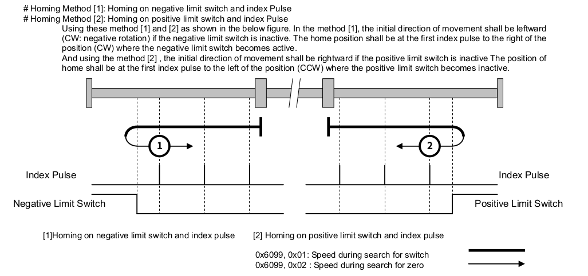

SFC 設計流程如下：
+-------------+
| Init | 檢查是否對應的驅動器裝置，
| | 設定 device-ok? 旗標。
+-----+-------+
|
device-ok?
|
+-----v-------+
| Idle | 等待 homing-accepted? 為真。
+--------+ |
| +-----+-------+
| |
| homing-accepted?
| |
| +-----v-------+
| | Config | 切換對應驅動器為 HM 模式
| | | 設定 homing speed, homing method
| +-----+-------+
| |
| config-ok? 等待 config 設定指令（EtherCAT SDO）完成。
| |
| +-----v-------+
| | Trigger | 啟動驅動器開始進行回歸原點動作。（EtherCAT PDO）
| | |
| +-----+-------+
| | 等待 50 ms 後，才開始檢查回歸原點的結果。
| trigger-ok? 避免驅動器還未開始回歸原點，檢查到錯誤時機的狀態。
| |
| +-----v-------+ 檢查驅動器狀態，判斷回歸原點是否完成。
| | Loop | 如果所設定的運動軸都完成回歸原點就設定 loop-stopped? 旗標。
| | |
| +-----+-------+
| |
| loop-stopped?
| |
| +-----v-------+ 將目前佇列中的運動軸切換到 CSP mode
| | Post Action | 切換到下一個回歸機械原點佇列，
| | | 如果所有佇列都已經完成，就將 homing-accepted? 設定為 false。
| +-----+-------+
| |
| post-action-ok?
| |
+------<-------+
SFC 實作：
\ Axes Description
\ 分別為第 1, 2 , 3 運動軸
\ 不使用 index 0 的運動軸
3 constant axes-len
create axes 0 , 1 , 2 , 3 ,
\ 使用 axes-enabled 可以暫時將指定軸排除在此 SFC 的運作邏輯之外
create axes-enabled false , true , true , true ,
\ 取得受控運動軸清單中的軸編號
: axis@ ( index -- axis-no )
cells axes + @
;
\ 取得受控運動軸清單中的致能狀態 (enabled/disabled)
: axis-enabled? ( index -- flag )
cells axes-enabled + @
;
\ 將運動軸清單中的運動軸致能
: +axis ( index -- )
cells axes-enabled + true swap !
;
\ 將運動軸清單中的運動軸禁能
: -axis ( index -- )
cells axes-enabled + false swap !
;
\ 定義回歸機械原點的運動軸 （enabled/disbaled)
\ 分為兩個優先順序，first-homing-axes 執行完後，才執行 second-homing-axes
create first-homing-axes false , false , false , false ,
create second-homing-axes false , false , false , false ,
\ 回歸機械原點的速度與方法
\ 速度單位參考驅動器 0x6099 定義的單位，通常是 pulses/sec
create axes-homing-v1 0 , 1000 , 1000 , 1000 ,
create axes-homing-v2 0 , 10 , 10 , 10 ,
\ 要參照驅動器有支援的方法，通常同一個代號會是相同的方法，但不是每一種驅動器都有支援。
create axes-homing-method 0 , 33 , 33 , 33 ,
\ 取得 homing-v1 參數
: axis-homing-v1@ ( index -- v1 )
cells axes-homing-v1 + @
;
\ 取得 homing-v2 參數
: axis-homing-v2@ ( index -- v2 )
cells axes-homing-v2 + @
;
\ 取得 homing-method 參數
: axis-homing-method@ ( index -- method )
cells axes-homing-method + @
;
\ 設定 homing-v1 參數
: axis-homing-v1! ( v1 index -- )
cells axes-homing-v1 + !
;
\ 設定 homing-v2 參數
: axis-homing-v2! ( v2 index -- )
cells axes-homing-v2 + !
;
\ 設定 homing-method 參數
: axis-homing-method! ( method index -- )
cells axes-homing-method + !
;
\ 目前處理的 homing-priority
\ 1 表示處理 first-homing-axes 中啟動的運動軸
\ 2 表示處理 second-homing-axes 中啟動的運動軸
variable homing-priority
\ 在對應的優先佇列內啟動要回歸機械原點的運動軸
: +homing-axis ( index priority -- )
case
1 of cells first-homing-axes + true swap ! endof
2 of cells second-homing-axes + true swap ! endof
." log|Invalid homing priority" cr
swap drop
endcase
;
\ 在對應的優先佇列內取消要回歸機械原點的運動軸
: -homing-axis ( index priority -- )
case
1 of cells first-homing-axes + false swap ! endof
2 of cells second-homing-axes + false swap ! endof
." log|Invalid homing priority" cr
swap drop
endcase
;
\ 在對應的優先佇列內，取得該運動軸是否要回歸機械原點?
: homing-axis? ( index priority -- flag )
case
1 of cells first-homing-axes + @ endof
2 of cells second-homing-axes + @ endof
." log|Invalid homing priority" cr
swap drop false swap
endcase
;
\ 定義 Axes Homing 流程中所需要的變數
variable homing-devices-ok
variable axes-homing-accetped
variable homing-config-once
variable homing-trigger-once
variable homing-loop-stopped
variable homing-post-action-once
variable axes-homing-stopping
\ 啟動 axes homing
\ 使用此指令，決定是否要開始進行回歸機械原點的活動
\ 依據不同的應用調整啟動的條件
: start-axes-homing ( -- )
homing-priority @ 0= if
true axes-homing-accetped !
1 homing-priority !
else
." log|Axes homing not accetped" cr
then
;
\ 停止 axes homing
\ Homing 執行中要停止的命令，會將對應的驅動器切換到 Quick Stop Activate 的狀態
: stop-axes-homing ( -- )
homing-priority @ 0<> if
1
begin
dup axes-len <=
while
dup axis-enabled? over homing-priority @ homing-axis? and if
dup axis@ axis-drive@ drive-stop
then
1+
repeat
drop
true axes-homing-stopping !
then
;
\ Homing Init Step
\ 檢查對應的硬體裝置是否存在，只在一開始的時候做一次，如果檢查沒有通過，SFC 會停留在這個 step。
variable homing-init-once
: homing-init ( -- )
homing-init-once @ not if
true homing-devices-ok !
1
begin
dup axes-len <=
while
dup axis-enabled? over axis@ virtual-axis? and if
." error|Axis (" dup axis@ 0 .r ." ) is virtual axis" cr
false homing-devices-ok !
then
1+
repeat
drop
true homing-init-once !
then
;
\ Homing Idle Step
\ 在此狀態等待 axes-homing-accetped 為真
: homing-idle ( -- )
;
\ Homing Config Step
\ 依據優先佇列設定回歸機械原點的參數給驅動器
: homing-config
homing-config-once @ not if
1
begin
dup axes-len <=
while
dup axis-enabled? over homing-priority @ homing-axis? and if
dup axis@
over axis-homing-v1@ over axis-drive@ homing-v1!
over axis-homing-v2@ over axis-drive@ homing-v2!
over axis-homing-method@ over axis-drive@ homing-method!
hm swap axis-drive@ op-mode!
then
1+
repeat
drop
false homing-trigger-once !
false homing-post-action-once !
true homing-config-once !
then
;
\ Homing Trigger Step
\ 依據優先佇列設定，命令驅動器開始回歸機械原點
: homing-trigger
homing-trigger-once @ not if
1
begin
dup axes-len <=
while
dup axis-enabled? over homing-priority @ homing-axis? and if
dup axis@ dup axis-drive@ drive-on? if
axis-drive@ go
else
drop
then
then
1+
repeat
drop
false homing-config-once !
true homing-trigger-once !
then
;
\ Homing Loop Step
\ 依據驅動器狀態判定回歸機械原點結果
\ 依據結果設定運動軸狀態
: homing-loop
true homing-loop-stopped !
1
begin
dup axes-len <=
while
dup axis-enabled? over homing-priority @ homing-axis? and if
dup axis@ dup axis-drive@ target-reached? if
dup axis-drive@ drive-sw@ $1000 and 0<> if
dup ." log|Axis (" 0 .r ." ) homing attained" cr
dup +homed
else
dup ." log|Axis (" 0 .r ." ) homing error" cr
\ 如果回歸機械原點失敗，停止所有運動軸回歸機械原點
stop-axes-homing
dup -homed
then
else
false homing-loop-stopped !
then
\ 如果驅動器不是在 Operation Enabled 狀態，停止所有運動軸回歸機械原點
dup axis-drive@ drive-on? not if
stop-axes-homing
true homing-loop-stopped !
then
\ 清除運動軸落後誤差，依實際位置修正命令
0axis-ferr
then
1+
repeat
drop
;
\ Homing Post Action
\ 將目前佇列中的驅動器換到 CSP 模式
\ 清除目前佇列中的運動軸
\ 判斷是否要切換到下一個佇列或是停止回歸機械原點
: homing-post-action
homing-post-action-once @ not if
1
begin
dup axes-len <=
while
dup axis-enabled? over homing-priority @ homing-axis? and if
dup axis@ csp swap axis-drive@ op-mode!
then
dup homing-priority @ -homing-axis
1+
repeat
drop
homing-priority @ 2 >= axes-homing-stopping @ or if
0 homing-priority !
false axes-homing-accetped !
false axes-homing-stopping !
." log|homing stopped or finished" cr
else
homing-priority @ 1 + homing-priority !
then
true homing-post-action-once !
then
;
\ 對應的裝置檢查是否通過 ？
: homing-devices-ok? ( -- flag )
homing-devices-ok @
;
\ 是否接受 homing 的指令 ？
: axes-homing-accetped?
axes-homing-accetped @
;
\ Homing 指令是否設定完成 ？
\ 檢查 EtherCAT SDO 只否都已經執行完畢。
: homing-config-ok?
waiting-requests? not
;
\ 在 Homing trigger 後等待 50 ms
: homing-trigger-ok?
['] homing-trigger elapsed 50 >
;
\ 是否要脫離 Homing Loop ？
: homing-loop-stopped?
homing-loop-stopped @
;
\ Homing Post Action 是否完成？
\ 檢查 EtherCAT SDO 只否都已經執行完畢。
: homing-post-action-ok?
waiting-requests? not
;
\ 宣告 SFC Step
step homing-init
step homing-idle
step homing-config
step homing-trigger
step homing-loop
step homing-post-action
\ 宣告 SFC Transition
transition homing-devices-ok?
transition axes-homing-accetped?
transition homing-config-ok?
transition homing-trigger-ok?
transition homing-loop-stopped?
transition homing-post-action-ok?
\ Link SFC
' homing-init ' homing-devices-ok? -->
' homing-devices-ok? ' homing-idle -->
' homing-idle ' axes-homing-accetped? -->
' axes-homing-accetped? ' homing-config -->
' homing-config ' homing-config-ok? -->
' homing-config-ok? ' homing-trigger -->
' homing-trigger ' homing-trigger-ok? -->
' homing-trigger-ok? ' homing-loop -->
' homing-loop ' homing-loop-stopped? -->
' homing-loop-stopped? ' homing-post-action -->
' homing-post-action ' homing-post-action-ok? -->
' homing-post-action-ok? ' homing-idle -->
\ Activate homing-init step
' homing-init +step
已知可支援的硬體清單
WiFi Adapters
- D-Link DWA-171
- D-Link DWA-172
EtherCAT Slave 清單
目前 Botnana Control 支援以下 EtherCAT Slaves：
CiA DSP 401 Compatible
- Digital Input Module
- Digital Output Module
- Analogue Input Module
- Analogue Output Module
CiA DSP 402 Compatible
- Servo drive
- Stepper motor
- Multiple drive module
(研華) Advantech
- AMAX_4830, DIO
Beckhoff
- EK1100, EtherCAT Bus Coupler
- EL1088, 8-channel digital input terminal 24 V DC, negative switching
- EL1809, 16-channel digital input 24 V DC
- EL2088, 8-channel digital output terminal 24 V DC, negative switching
- EL2502, 2-channel pulse width output terminal
- EL2088, 8-channel digital output terminal
- EL2809, 16-channel digital output 24 V DC
- EL3058, 8-channel analog input terminal 4...20 mA, single-ended, 12 bit
- EL3062, analog input
- EL4002, analog output
- EL5032, 2-channel EnDat 2.2 interface
- EL6021, Serial terminal
- EL6022, Serial terminal
Copley Controls
- Xenus XEL-230-36, EtherCAT Servo Drive
台達電 (Delta)
- ASDA-A2-E, EtherCAT(CoE) Drive
- R1-EC5500, EtherCAT to E-BUS power module
- R1-EC6022, 16 digital inputs, sink/source type
- R1-EC7062, 16 digital outputs, sink type
- R1-EC9144, 4 channels 16-bit D/A control module
- R1-EC8124, 4 channels 16-bit single-ended A/D control module
- R1-EC5621, Single-axis pulse output motion control module
ELMO
- GOLD_BASSOON Servo Drive
FASTECH
- Ezi-SERVOⅡ EtherCAT Series
ICPDAS
- ECAT-2512, EtherCAT junction
MITSUBISHI
- MR-J4-10TM Servo Drive
OMRON
- R88D_1SN04H_ECT Servo Drive (only BN-J2A, BN-J4A)
- GX-MD1611 REMOTE TERMINAL (8 Ch. Digital Input， 8 Ch. Digital Output)
- NX-ECC203, ID5342, OD5121 (IO 模組，測試中)
Oriental Motor
- AZ Series DC power input Multi-Axis Driver
Panasonic
- EtherCAT communication driver MINAS A5B Series
- MCDLT35BF (A6B)
SANYO DENKI
- SANMOTION R ADVANCED MODEL
士林電機 （Shihlin）
- SDP, EtherCAT Servo Driver
TPM
- TPM_207_D240_NX, 32 Ch. Digital Input
- TPM_207_D204_XN, 32 Ch. Digital Output
- TPM_207_A220FD, 8 Ch. Analog Input, 8 Ch. Digital Output
- TPM_207_A204F，8 Ch. Anaglo Output
Yaskawa
- SGDV-2R8AE1A
- SGD7S-7R6AA0A (測試中)
軟體更新
當主站軟體因新增功能或是修正錯誤，需要進行軟體更新，就必須依循以下步驟。
取得軟體更新檔
可以由動程公司取得更新檔。依據不同的平台其更新檔名稱如下：
| 搭載平台 | 更新檔名稱 |
|---|---|
| BN-A2A | botnana-control_*_armhf.deb |
| BN-B2A | botnana-control_*_armhf.deb |
| BN-J2A | botnana-control_*_x86.deb |
| BN-J4A | botnana-control_*_x86.deb |
更新步驟
以更新 BN-B2A 的主控軟體從版號 1.10.14 更新到 1.10.15 為例。
更新檔的檔名為 botnana-control_1.10.15-117_armhf.deb
- 首先要先準備一部設置好與 Botnana Control 網路連線的電腦。此電腦建議有安裝 Google Chrome 的瀏覽器。
- 開啟 Google Chrome 瀏覽器，並連線到 http://192.168.7.2:3000，一般來說 Botnana Control 的控制盒的IP 位置設置都是 192.168.7.2，如果是其它設定就要連線到指定的 IP 位置。
- 進入 Botnana Control 首頁，點選右上方的 [ABOUT]。
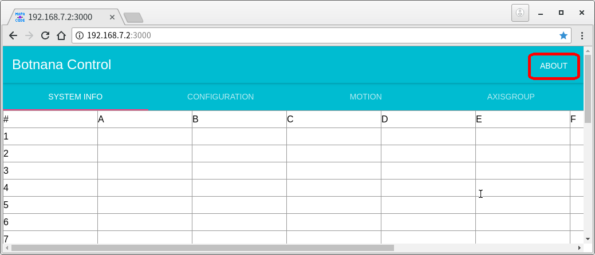 - 進入到 [ABOUT] 畫面，此畫面會有目前的版本資訊，此時版號是 1.10.14。點選 [UPLOAD MANUALLY]，會出現檔案瀏覽器，切換到 botnana-control_1.10.15-117_armhf.deb 所在的目錄，選擇該檔案即可。

- 此時 [ABOUT] 畫面會出現 "Uploading, Please wait" 的提示訊息。
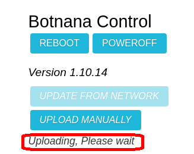 - 等待 "Upload successful, please reboot Botnana" 的提示訊息出現，該提示訊息出現後，就可以點選 [REBOOT]。

- 等待重新開機到安裝完成的過程中，提示訊息會顯示 "Rebooting"。安裝完成後，版號就會變成 1.10.15。搭載的平台是 BN-A2A/BN-B2A 大約是 3 分鐘左右，BN-J2A/BN-J4A 大約是 1 分鐘左右。

- 更新完成。因為瀏覽器上的部份資料是在一開始連線時取得，所以建議重新載入畫面。
常見問題
- 網路設定
- USB連線IP設定
- Windows 7 RNDIS 驅動程式安裝
- Windows 10 RNDIS 驅動程式安裝
- Windows 10 檔案權限修改
- 磁碟掛載 Mount
- 手動安裝 Botnana Control 更新檔
網路設定
使用 connmanctl 指令進行設定。以下是幾個常用的設定需求，若是需要詳細說明可參考 connmanctl - Connman CLI
WIFI 設定
查詢無線網卡的狀態
安裝無線網卡後，使用 sudo connmanctl technologies 查詢無線網卡的狀態，
命令輸出後，狀態如下：
debian@arm:~$ sudo connmanctl technologies
[sudo] password for debian: // 輸入 temppwd
/net/connman/technology/wifi
Name = WiFi
Type = wifi
Powered = False
Connected = False
Tethering = False
/net/connman/technology/gadget
Name = Gadget
Type = gadget
Powered = False
Connected = False
Tethering = False
如果無線網卡安裝妥當，應可看到 /net/connman/technology/wifi 的資訊，
請注意其中 Powered = False， 表示必須先啟動 WiFi，啟動方式如下：
debian@arm:~$ sudo connmanctl enable wifi
Enabled wifi
成功後會出現 Enable wifi 的訊息。也可再使用 sudo connmanctl technologies 確認狀態。
此連線是屬於 DHCP， 如要使用指定IP，請看以下章節。
開始進行連線設定
首先進到設定畫面，輸入 sudo connmanctl，會出現 connmanctl> 等待命令的提示訊息。
debian@arm:~$ sudo connmanctl
connmanctl>
列出可使用的網路節點，以動程公司為例：
connmanctl> services
Mapacode_5G wifi_1c5f2bc586d1_4d617061636f64655f3547_managed_psk
Mapacode wifi_1c5f2bc586d1_4d617061636f6465_managed_psk
開啟連線代理:
connmanctl> agent on
Agent registered
連線， 以連線到SSID是 Mapacode 為例，
connmanctl> connect wifi_1c5f2bc586d1_ //可嘗試按 tab 鍵補全
connmanctl> connect wifi_1c5f2bc586d1_4d617061636f6465_managed_psk
Agent RequestInput wifi_1c5f2bc586d1_4d617061636f6465_managed_psk
Passphrase = [ Type=psk, Requirement=mandatory, Alternates=[ WPS ] ]
WPS = [ Type=wpspin, Requirement=alternate ]
Passphrase?
輸入密碼，等待出現 Connected wifi_1c5f2bc586d1_4d617061636f6465_managed_psk 就大功告成。
Passphrase? 062970665 // 輸入密碼
Connected wifi_1c5f2bc586d1_4d617061636f6465_managed_psk
connmanctl>
輸入 exit 離開設定畫面
connmanctl> exit
debian@arm:~$
有線網路設定
先將網路線連上， 使用 sudo connmanctl technologies 查詢連線狀態。應會出現 /net/connman/technology/ethernet 項目
debian@Q190G4:~$ sudo connmanctl technologies
[sudo] password for debian: // 輸入 temppwd
/net/connman/technology/ethernet
Name = Wired
Type = ethernet
Powered = True
Connected = False
Tethering = False
開始進行連線設定
首先進到設定畫面，輸入 sudo connmanctl，會出現 connmanctl> 等待命令的提示訊息。
debian@arm:~$ sudo connmanctl
connmanctl>
列出可使用的網路節點：
connmanctl> services
*A Wired ethernet_00ecacce3a79_cable
connmanctl>
開啟連線代理:
connmanctl> agent on
Agent registered
連線:
connmanctl> connect ethernet_00ecacce3a79_cable
Connected ethernet_00ecacce3a79_cable
大功告成。
此連線是屬於 DHCP 。如要使用指定IP，請看以下章節。
指定IP
設定案例：
- service :
ethernet_00ecacce3a79_cable - ip : 192.168.7.2
- netmask : 255.255.255.0
- gateway : 192.168.7.1
指令格式：
connmanctl config <service> --ipv4 manual <ip address> <netmask> <gateway>
案例設定：
sudo connmanctl config ethernet_00ecacce3a79_cable --ipv4 manual 192.168.7.2 255.255.255.0 192.168.7.1
自動指派IP
設定案例：
service: ethernet_00ecacce3a79_cable
指令格式：
connmanctl config <service> --ipv4 dhcp
案例設定：
sudo connmanctl config ethernet_00ecacce3a79_cable --ipv4 dhcp
USB連線IP設定
同一電腦連接單一塊 Botnana
-
編輯 Botnana 系統的 /etc/network/interfaces 檔案，改成您所希望的 IP，例如︰
iface usb0 inet static
address 192.168.6.2 netmask 255.255.255.0 network 192.168.6.0 gateway 192.168.6.1表示 Botnana 本身的 IP 是 192.168.6.2，分配給電腦的 IP 是 192.168.6.1
-
編輯 Botnana 的組態檔 /etc/botnana-control/motion.toml，做如下的修改︰
[server]
address = "0.0.0.0:3012"
改成
[server]
address = "192.168.6.2:3012"
表示 Botnana 本身的伺服器的位址為 192.168.6.2
同一電腦連接多塊 Botnana
修改方式如 同一電腦連接單一塊 Botnana ，最大的差異是︰每塊Botnana要設為不同的區段。
例如︰ 第一塊設為 address 192.168.6.2，第二塊設為 address 192.168.7.2。
WINDOWS 7 透過 MicroUSB 與 Botnana A2 連線時需先安裝 RNDIS 驅動程式
1. 32 位元與 64 位元
都是用同一個安裝流程。
2. 首先，先下載 mapacode_botnana_a2.inf
按此連結下載 mapacode_botnana_a2.inf
此設定檔是由 MicroSoft Remote NDIS INF Template 修改而成。
3. 將電腦 Botnana A2 的 MicroUSB 埠與電腦的 USB 埠使用 USB 線材連結。
到 Windows 裝置管理員 （Device Manager）畫面，應可以看到 Botnana-A2 裝置出現。

4. 選擇 Botnana-A2 裝置更新驅動程式
點選 Botnana-A2 裝置，按下滑鼠右鍵，進行驅動程式更新。
5. 瀏覽電腦上的驅動程式軟體

6. 讓我從電腦上的裝置驅動程式清單中挑選

7. 請從下列清單中選取你裝置的類型，選擇[網路介面卡]

8. 選擇從磁片安裝

9. 選擇 mapacode_botnana_a2.inf 所在的目錄位置
此範例的 mapacode_botnana_a2.inf 的目錄位置是 D:\rndis

10. 此時相容的網路介面卡會出現 [Botnana-A2]
按下 [Next]，繼續安裝。

11. 選擇 [仍然安裝此驅動程式軟體]

12. 等候安裝完成
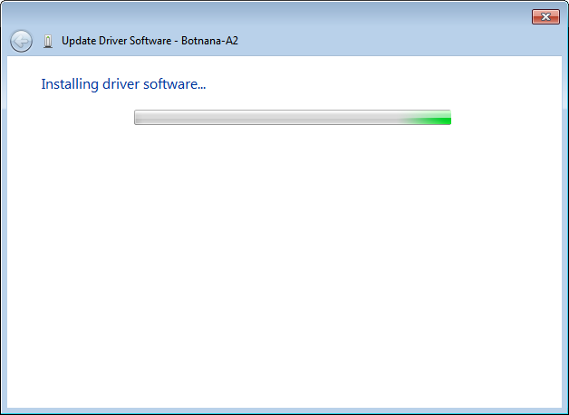
13. 安裝完成

14. 可以由以下步驟確認 Botnana-A2 的裝置狀態
14.1. 網路介面卡裝置出現 [Botnana-a2]
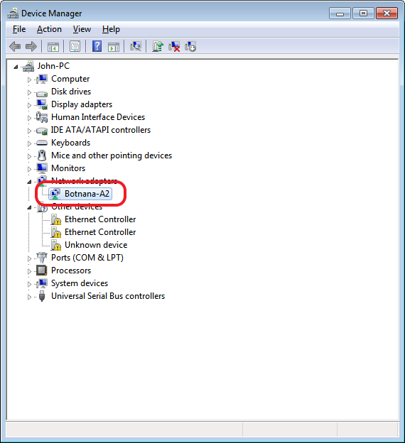
14.2 在[控制台]->[網路與網際網路]->[網路和共用中心]會出現 Botnana-A2 的網路裝置

14.3. 查看 Botnana-A2 的裝置狀態
使用滑鼠游標移至 Botnana-A2 網路裝置，按下滑鼠右鍵，選擇[狀態]，就會出現以下視窗。
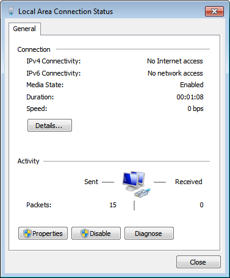
14.4. 查看 Botnana-A2 的詳細資料
以此範例可以看到本機的IP 是 192.168.7.1。而 DHCP Server IP 是 192.168.7.2，此 DHCP Server IP 就是 Botnana-A2 的 IP。
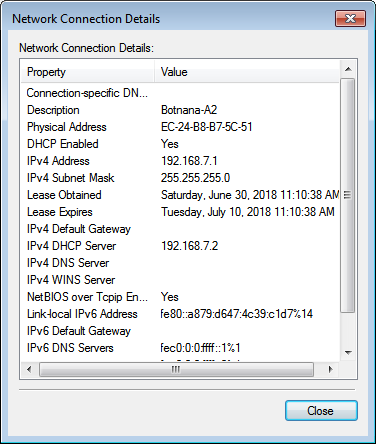
WINDOWS 10 透過 MicroUSB 與 Botnana A2 連線時需先安裝 RNDIS 驅動程式
0. 將 Botnana-A2 microUSB埠 與 電腦 連接。
註解︰若已嘗試過安裝 RNDIS 驅動程式，請從步驟 1 開始；否則，請直接從步驟 3 開始。
1. 裝置管理員 出現如下裝置

2. 解除安裝裝置

3. 修改 C:\Windows\INF\usbser.inf （關於 usbser.inf 權限問題）
將底下這個
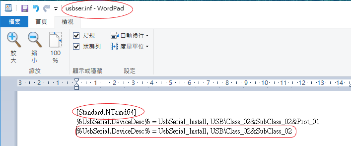
改成如下

4. 選裝置管理員中的 Botnana-A2，並更新驅動程式

5. 選 瀏覽電腦上的驅動程式軟體

6. 選 讓我從電腦上的可用驅動程式清單中挑選

7. 硬體類型選 網路介面卡

8. 製造商 / 型號︰Microsoft / USB RNDIS介面卡

9. 忽略警告訊息

10. 驅動程式更新成功

11. 檢查是否出現這個裝置︰裝置管理員/網路介面卡/USB RNDIS介面卡
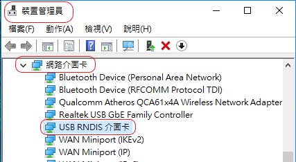
12. 連線測試（假設用 PuTTY 連線軟體）
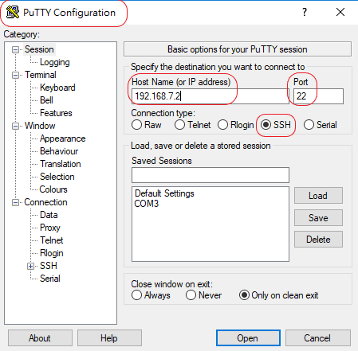
13. username / password: debian / temppwd

修改權限的步驟
- 以 C:\Windows\INF\usbstor.inf 檔案為範例
- 假設登入 Windows 10 的使用者帳號為 felix
step 1. 將滑鼠移到 usbstor.inf 上，並按滑鼠右鍵，選 內容 。
step 2. 選 安全性 -〉 進階 。
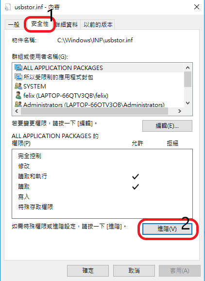
step 3. 按 變更 擁有者，輸入使用者帳號，按 檢查名稱，此時會顯示完整的帳號資訊，按 確定 離開。


step 4. 回到上一層後，按 套用 ，顯示警告訊息，按 確定。
 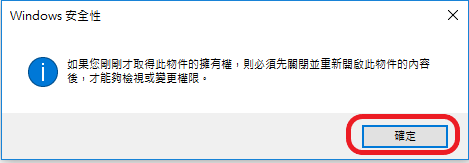
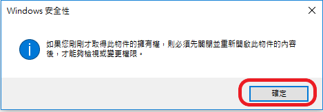
step 5. 將顯示 usbstor.inf 內容的視窗全部關閉後，再重開 內容 視窗。
step 6. 新增 一個主體。

step 7. 選取一個主體。
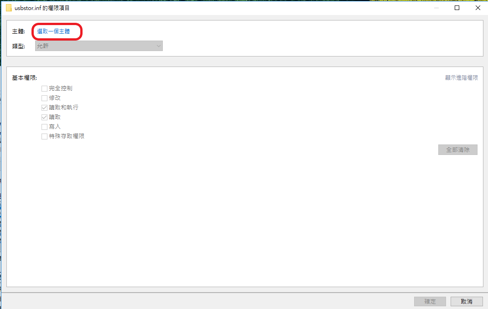
step 8. 輸入帳號並檢查名稱，再按確定。
 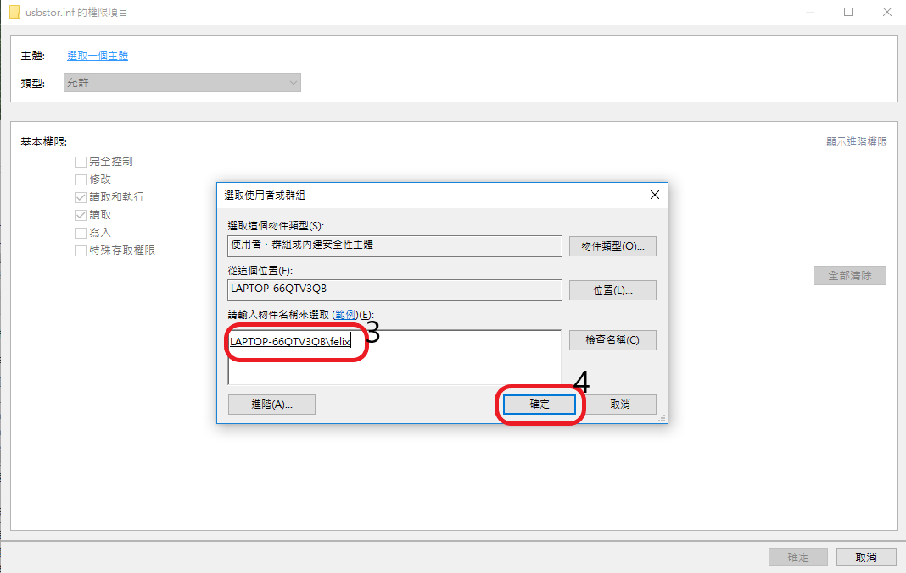
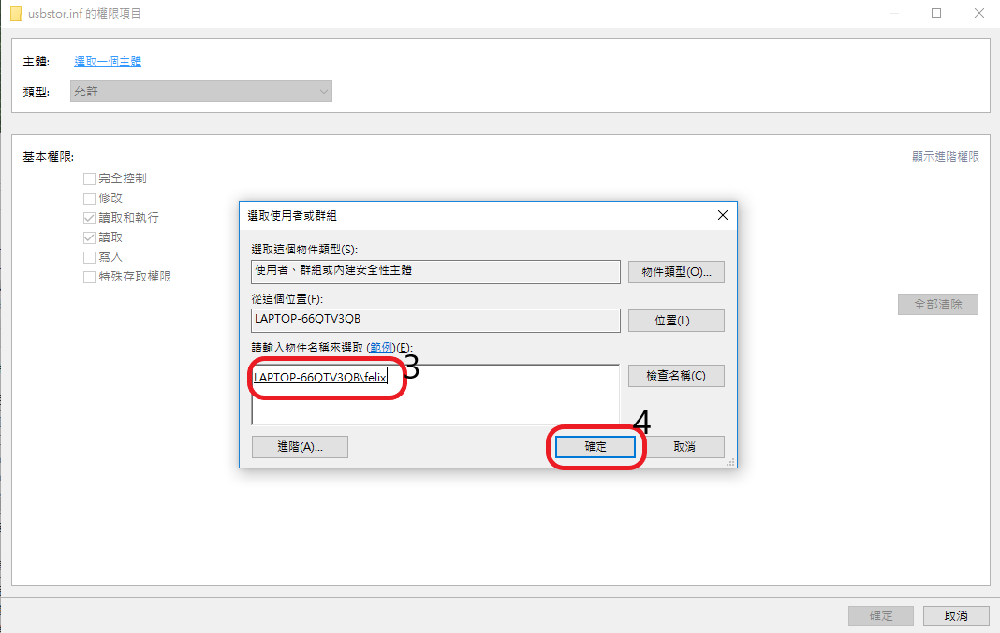
step 9. 修改基本權限後，按確定。

step 10. 確認帳號已正確加入，並擁有完全控制的權限。

step 11. 按 套用及確定，顯示安全警告的訊息，按 是。

USB 隨身碟掛載
- 在插入 USB 隨身碟前先使用
fdisk -l或是lsblk查看系統目前所能識別的儲存裝置。內容可能如下：
debian@arm:~$ sudo fdisk -l
Disk /dev/mmcblk0: 3.6 GiB, 3867148288 bytes, 7553024 sectors
Units: sectors of 1 * 512 = 512 bytes
Sector size (logical/physical): 512 bytes / 512 bytes
I/O size (minimum/optimal): 512 bytes / 512 bytes
Disklabel type: dos
Disk identifier: 0xe67298e5
Device Boot Start End Sectors Size Id Type
/dev/mmcblk0p1 * 2048 206847 204800 100M e W95 FAT16 (LBA)
/dev/mmcblk0p2 206848 7553023 7346176 3.5G 83 Linux
Disk /dev/mmcblk0boot1: 2 MiB, 2097152 bytes, 4096 sectors
Units: sectors of 1 * 512 = 512 bytes
Sector size (logical/physical): 512 bytes / 512 bytes
I/O size (minimum/optimal): 512 bytes / 512 bytes
Disk /dev/mmcblk0boot0: 2 MiB, 2097152 bytes, 4096 sectors
Units: sectors of 1 * 512 = 512 bytes
Sector size (logical/physical): 512 bytes / 512 bytes
I/O size (minimum/optimal): 512 bytes / 512 bytes
- 插入 USB 隨身碟，再次使用
fdisk -l，查看新增的儲存裝置。與第一次內容相比，新增的內容可能如下，由此內容可以得知新增的儲存裝置代號是/dev/sda1。
Disklabel type: dos
Disk identifier: 0x0009fbbc
Device Boot Start End Sectors Size Id Type
/dev/sda1 * 2048 121110527 121108480 57.8G 7 HPFS/NTFS/exFAT
- 掛載指令，以儲存裝置代號是
/dev/sda1為範例。
debian@arm:~$ sudo mkdir /mnt/usb
debian@arm:~$ sudo mount /dev/sda1 /mnt/usb
- 掛載後就可以在 /mnt/usb 的目錄下對 USB 隨身碟的資料進行訪問或是操作。
- 卸載指令，以儲存裝置代號是
/dev/sda1為範例。
debian@arm:~$ sudo unmount /dev/sda1
MicroSD Card 掛載
掛載的方式與 USB 類似，也是由 fdisk -l 指令找出掛載的磁碟名稱。
fdisk -l查詢後的範例如下：
Disklabel type: dos
Disk identifier: 0x003a8823
Device Boot Start End Sectors Size Id Type
/dev/mmcblk1p1 * 2048 62333951 62331904 29.7G c W95 FAT32 (LBA)
- 掛載指令，以儲存裝置代號是
/dev/mmcblk1p1為範例。
debian@arm:~$ sudo mkdir /mnt/mmc
debian@arm:~$ sudo mount /dev/mmcblk1p1 /mnt/mmc
- 掛載後就可以在 /mnt/mmc 的目錄下對 MicroSD Card 的資料進行訪問或是操作。
- 卸載指令，以儲存裝置代號是
/dev/mmcblk1p1為範例。
debian@arm:~$ sudo unmount /dev/mmcblk1p1
注意事項：
BN-A2A/BN-B2A 預設會以 MicroSD Card 開機，如果只是資料的訪問或是操作，建議在開機後再插入 MicroSD Card。
手動安裝 Botnana Control 更新檔(.deb)
一般來說建議使用 Botnana Web Utils 進行更新檔安裝，說明可參考軟體更新。
若是安裝過程發生意外錯誤，導致無法再使用 Botnana Web Utils 進行安裝，則可以手動執行安裝進行修復，步驟如下。
1. 傳送安裝檔至 Botnana
在 Windows 上操作
請至這裡下載並安裝 winscp 。

- 開啟 winscp 後建立新站台
- 輸入 Botnana 的 ip 位址，預設為 192.168.7.2
- 輸入 Botnana 上預設的使用者名稱 debian
- 輸入密碼 temppwd
- 登入

登入後視窗左邊為 PC 本機的磁碟目錄，右邊為 Botnana 上的磁碟目錄。
- 本機索引至 Botnana Control 更新檔存放的位置
- Botnana 索引至 /home/debian
- 將安裝檔拖曳至 Botnana 中
在 Linux 上操作
索引至安裝檔所的位置，例如在家目錄 Downloads 中
$ cd ~/Downloads/
使用 scp 指令將安裝檔複製到 Botnana 上，例如安裝檔名稱為 botnana-control_1.15.4-1202_armhf.deb
$ scp botnana-control_1.15.4-1202_armhf.deb debian@192.168.7.2:~
依照提示輸入密碼 temppwd，顯示下列訊息表示成功
botnana-control_1.15.4-1202_armhf.deb 100% 16MB 3.2MB/s 00:05
2. ssh 連線登入 Botnana
在 Windows 上操作
請至這裡下載並安裝 putty 。

按照上圖輸入使用者名稱與 ip 位址後開啟連線，並依據提示輸入密碼 temppwd
在 Linux 上操作
在終端機中輸入
$ ssh debian@192.168.7.2
並依據提示輸入密碼 temppwd
3. 手動安裝更新檔
輸入 dpkg -l botnana-control 可以查看目前安裝的 botnana-control 版本，例如
debian@arm:~$ dpkg -l botnana-control
Desired=Unknown/Install/Remove/Purge/Hold
| Status=Not/Inst/Conf-files/Unpacked/halF-conf/Half-inst/trig-aWait/Trig-pend
|/ Err?=(none)/Reinst-required (Status,Err: uppercase=bad)
||/ Name Version Architecture Description
+++-=================-==========-===============-==============================
ii botnana-control 1.13.25 armhf Botnana Control IIOT Platform
輸入 sudo dpkg -r botnana-control 可以移除目前安裝的 botnana-control，例如
debian@arm:~$ sudo dpkg -r botnana-control
[sudo] password for debian:
(Reading database ... 50512 files and directories currently installed.)
Removing botnana-control (1.13.25) ...
Processing triggers for systemd (215-17+deb8u2) ...
將 botnana-control 更新檔移至更新目錄，例如
debian@arm:~$ sudo mv botnana-control_1.15.4-1202_armhf.deb /opt/mapacode/botnana-control/update/
debian@arm:~$ cd /opt/mapacode/botnana-control/update/
debian@arm:/opt/mapacode/botnana-control/update$ ls
botnana-control_1.15.4-1202_armhf.deb dpkg.log
若發現 update 目錄裡有殘留舊的安裝檔可以將其移除，例如有一個舊的安裝檔名稱為botnana-control_1.13.0-0101_armhf.deb
sudo rm botnana-control_1.13.0-0101_armhf.deb
安裝 botnana-control 更新檔，例如
debian@arm:/opt/mapacode/botnana-control/update$ sudo dpkg -i botnana-control_1.15.4-1202_armhf.deb
Selecting previously unselected package botnana-control.
(Reading database ... 28587 files and directories currently installed.)
Preparing to unpack botnana-control_1.15.4-1202_armhf.deb ...
Unpacking botnana-control (1.15.4) ...
Setting up botnana-control (1.15.4) ...
Processing triggers for systemd (215-17+deb8u2) ...
查看安裝結果
debian@arm:/opt/mapacode/botnana-control/update$ sudo dpkg -l botnana-control
Desired=Unknown/Install/Remove/Purge/Hold
| Status=Not/Inst/Conf-files/Unpacked/halF-conf/Half-inst/trig-aWait/Trig-pend
|/ Err?=(none)/Reinst-required (Status,Err: uppercase=bad)
||/ Name Version Architecture Description
+++-=================-=========-==============-=============================
ii botnana-control 1.15.4 armhf Botnana Control IIOT Platform
botnana-control 名稱前面顯示 ii 表示正確安裝
如安裝檔的位置是在 /opt/mapacode/botnana-control/update，安裝完畢後，建議刪除安裝檔，避免重開機時再安裝一次。
debian@arm:/opt/mapacode/botnana-control/update$ sudo rm botnana-control_1.15.4-1202_armhf.deb
重新啟動 Botnana
$ sudo reboot